🔥
🔥
SACOMBANK tiếp tục tung gói lãi suất cho vay 7,9%/năm, góp sức cùng mục tiêu tăng trưởng GDP 2 con số
TIN MỚI Hưởng ứng chỉ đạo của Chính phủ, Thủ tướng Chính phủ và Ngân hàng Nhà nước (NHNN) về giảm lãi suất cho vay, hỗ trợ sản xuất, kinh doanh và thúc đẩy tăng trưởng kinh tế 2 con số, ngay từ tháng 8/2026, SACOMBANK đã
⚡
🔥
🔥
🔥
🔥
Lãi suất ngân hàng hạ nhiệt, vì sao 80% người mua bất động sản vẫn đang quan sát thị trường?
Lãi suất ngân hàng hạ nhiệt, động thái tích cực cho thị trường BĐS Phan Trang | 03/11/2026 17:03 PM | Kinh doanh Theo dõi Cafebiz.vn trên Động thái hạ nhiệt lãi suất đang phát đi tín hiệu tích cực cho thị trường bất động
🔥
CTCK chỉ ra 6 cổ phiếu có câu chuyện riêng và định giá hấp dẫn trong tháng 11
TIN MỚI Trong báo cáo chiến lược tháng 11/2026, Chứng khoán Agribank (Agriseco Research) dự báo VN-Index tiếp tục giằng co trong xu hướng giảm, đặc biệt ở nửa đầu tháng khi thanh khoản thấp và dòng tiền phân hóa. Chỉ số
🔥
Giá điện và xăng dầu hạ nhiệt, sao hàng ăn 'không giảm dù chỉ 1.000 đồng'?
Món ăn bình dân thành “hàng hiếm” Trưa 3/11, dạo qua nhiều hàng quán ở TPHCM , PV Tiền Phong ghi nhận giá bán gần như không thay đổi so với tháng 3, tháng 4 khi giá xăng từng vượt mốc 30.000 đồng/lít. Thời điểm ấy, xăng
🔥
⚡
🔥
SHB hợp tác Cục Thuế thúc đẩy chuyển đổi số, hỗ trợ doanh nghiệp và hộ kinh doanh
Lễ ký kết hợp tác giữa SHB và Cục Thuế. Ảnh: SHB Kết nối dịch vụ thuế và ngân hàng trên hành trình số Thông qua thỏa thuận hợp tác, Cục Thuế và SHB thống nhất tăng cường phối hợp trong tuyên truyền, phổ biến chính sách p
🔥
Giá dầu thế giới lao dốc hơn 7% trước tín hiệu hạ nhiệt căng thẳng Mỹ - Iran
Đáng chú ý, giá dầu Brent kỳ hạn tháng 1/2027 lao dốc 7,63%, xuống còn 104,77 USD/thùng. Đây là hợp đồng kỳ hạn gần nhất sau khi hợp đồng tháng 12/2026 kết thúc giao dịch vào ngày 30/10. Cùng chiều, giá dầu WTI kỳ hạn th
🔥
Lãi suất - tỷ giá hôm nay: Lãi suất cùng kỳ hạn còn chênh lệch, USD giảm tiếp
Lãi suất huy động tại các ngân hàng tiếp tục phân hóa, với mức chênh lệch đáng kể ở cùng kỳ hạn. Trong khi đó, tỷ giá VND/USD tại các ngân hàng giảm thêm 20 đồng Lãi suất huy động tiếp tục được một số ngân hàng điều chỉn
⚡
Thị trường trái phiếu Chính phủ đạt 92% kế hoạch, trái phiếu doanh nghiệp chịu áp lực vốn
Thị trường trái phiếu tuần 26-30/10 phân hóa rõ nét. Trái phiếu Chính phủ duy trì đà phát hành, hoàn thành 92% kế hoạch năm 2026. Trong khi đó, phát hành trái phiếu doanh nghiệp tháng 10 kém tích cực, dù lãi suất phát hà
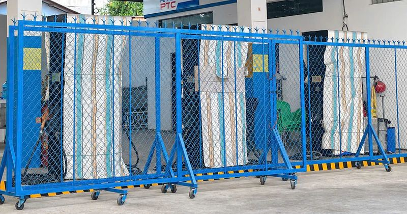
⚡Vì sao hàng chục cửa hàng xăng dầu ở miền Tây đóng cửa, ngừng hoạt động?
Một cửa hàng xăng dầu trên tuyến đường chính trong nội ô phường Sóc Trăng, TP Cần Thơ tạm đóng cửa, ngưng hoạt động - Ảnh: KHẮC TÂM Tại một số tỉnh, thành của miền Tây như Cần Thơ, Vĩnh Long…, dễ bắt gặp những cửa hàng x
🔥
🔥
M
🔥
🔥
10 tháng năm 2026: Xuất nhập khẩu hàng hóa của Việt Nam lần đầu vượt mốc 1.000 tỷ USD
10 tháng năm 2026, tổng kim ngạch xuất, nhập khẩu hàng hóa của Việt Nam sơ bộ đạt 1.010,55 tỷ USD, tăng 32,3% so với cùng kỳ năm trước, đạt mức cao nhất từ trước đến nay. Tổng kim ngạch xuất, nhập khẩu hàng hóa tháng 10
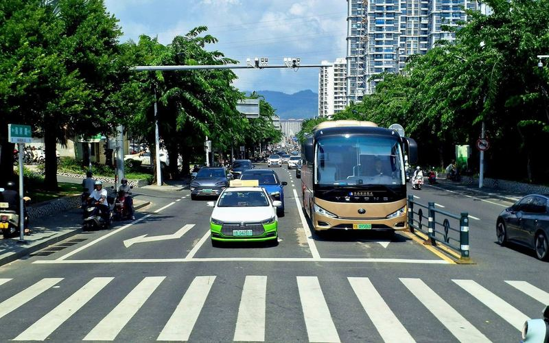
🔥Ở nơi người dân được mua vàng với giá rẻ hơn gần 20 triệu đồng, bài học từ 'phòng thí nghiệm mở cửa' của Trung Quốc
Ở nơi người dân được mua vàng với giá rẻ hơn gần 20 triệu đồng, bài học từ 'phòng thí nghiệm mở cửa' của Trung Quốc Trần Chung | 03/11/2026 09:06 AM | Kinh tế vĩ mô Theo dõi Cafebiz.vn trên Một tuần nghỉ lễ, hải quan Hải
🔥
⚡
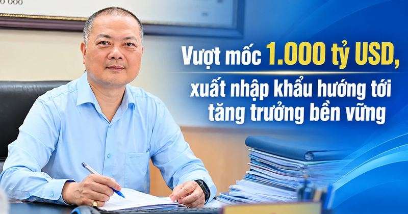
⚡
⚡
Phát hiện Việt Nam có đường hầm dài gần 12.000m xuyên dãy Trường Sơn, thi công bằng công nghệ đặc biệt, phục vụ công trình hơn 3.300 tỷ đồng
Phát hiện Việt Nam có đường hầm dài gần 12.000m xuyên dãy Trường Sơn, thi công bằng công nghệ đặc biệt, phục vụ công trình hơn 3.300 tỷ đồng Theo Đức Minh | 03/11/2026 20:14 PM | Kinh tế vĩ mô Theo dõi Cafebiz.vn trên Đó
🔥
🔥
🔥
🔥
Bảo hành 8 năm, lãi suất 0%: ô tô Trung Quốc mới bán dễ ở châu Âu nhưng chủ xe gặp khó với bảo hiểm
Bảo hành 8 năm, lãi suất 0%: ô tô Trung Quốc mới bán dễ ở châu Âu nhưng chủ xe gặp khó với bảo hiểm Theo PV | 03/11/2026 13:02 PM | Công nghệ Theo dõi Cafebiz.vn trên Ưu đãi giúp xe Trung Quốc bán nhanh ở châu Âu, nhưng
🔥
🔥
🔥
Tin tức thế giới 3-11: Đàm phán Mỹ, Nga, Ukraine sau 1 tuần nữa; Iran xác nhận đàm phán 'rất sâu' với Mỹ
Đặc phái viên Mỹ về Trung Đông Steve Witkoff và ông Jared Kushner, con rể Tổng thống Donald Trump - Ảnh: AFP Mỹ nói sắp tổ chức đàm phán ba bên với Nga - Ukraine Theo Hãng tin Reuters, ngày 2-11, một quan chức cấp cao Mỹ
🔥
⚡
Nữ đại gia xăng dầu Chu Thị Thành khóc xin giảm nhẹ hình phạt cho cấp dưới
(Dân trí) - Trong lời nói sau cùng, nữ đại gia xăng dầu Chu Thị Thành nghẹn ngào xin HĐXX khoan hồng cho các cấp dưới. Bị cáo cho rằng họ chỉ là những người làm công ăn lương nhưng vì bà mà vướng vòng lao lý. Chiều 3/11,
⚡
Tính giá điện theo giờ: Không dễ chuyển giờ nấu ăn, sinh hoạt, học hành sang đêm khuya
Tính giá điện theo giờ: Không dễ chuyển giờ nấu ăn, sinh hoạt, học hành sang đêm khuya Theo Luân Dũng - Trường Phong | 03/11/2026 19:40 PM | Kinh tế vĩ mô Theo dõi Cafebiz.vn trên Đại biểu Quốc hội đề nghị thí điểm việc
⚡
⚡
Nga xác nhận đàm phán hòa bình, nêu lập trường chấm dứt xung đột Ukraine
(Dân trí) - Nga xác nhận kế hoạch đàm phán 3 bên với Mỹ và Ukraine vào tuần tới nhằm giải quyết cuộc xung đột kéo dài hơn 4 năm qua. Người phát ngôn Điện Kremlin Dmitry Peskov (Ảnh: Tass). Người phát ngôn Điện Kremlin Dm
⚡
Bộ trưởng Lê Mạnh Hùng: Giá điện phải phản ánh chi phí hợp lý, minh bạch
Facebook Twitter Lưu bài viết Bản in Copy link Chiều 3/11, giải trình ý kiến đại biểu Quốc hội tại phiên thảo luận ở hội trường về dự án Luật sửa đổi, bổ sung một số điều của Luật Điện lực, Bộ trưởng Bộ Công Thương Lê Mạ
⚡
⚡
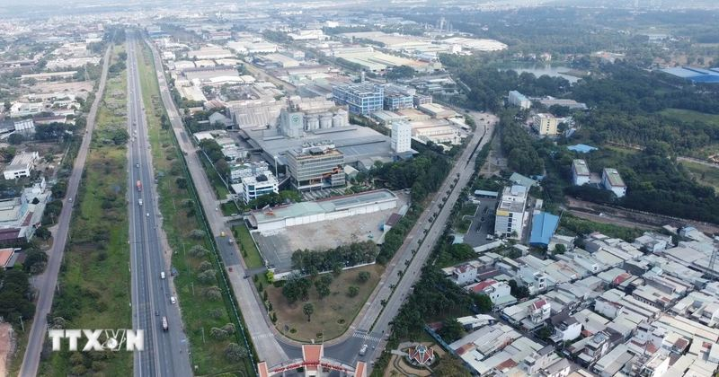
🔥
🔥
🔥
Đặc phái viên Mỹ công bố thời điểm nối lại đàm phán hòa bình Nga - Ukraine
Đặc phái viên Mỹ Steve Witkoff hôm thứ Hai (2/11) cho biết Washington sẽ làm trung gian hòa giải vòng đàm phán mới giữa Nga và Ukraine tại Abu Dhabi (Các Tiểu vương quốc Ả Rập Thống nhất) trong hai ngày 10 và 11/11, nhằm
🔥
🔥
🔥
🔥
⚡
Giá bán lẻ điện theo khung giờ: Cần thí điểm đánh giá tác động trước khi nhân rộng
Bộ trưởng Bộ Công Thương Lê Mạnh Hùng phát biểu giải trình, làm rõ một số vấn đề đại biểu Quốc hội nêu, chiều 3-11. Ảnh: VIẾT CHUNG Lưới điện chưa đồng bộ làm giảm hiệu quả đầu tư ĐB Nguyễn Thị Thanh Bình (Hưng Yên) dẫn
⚡
Sửa đổi Luật Điện lực: Gỡ vướng trong quy hoạch, đầu tư và vận hành hệ thống điện
Quang cảnh phiên thảo luận tại hội trường chiều 3/11 - Ảnh: chinhphu.vn/Nhật Bắc Tại phiên thảo luận ở hội trường chiều 3/11, Bộ trưởng Bộ Công Thương Lê Mạnh Hùng đã tiếp thu, giải trình, làm rõ một số nội dung đại biểu
🔥
Các ngân hàng trung ương mua vàng với tốc độ nhanh nhất kể từ cuối năm 2024
Facebook Twitter Lưu bài viết Bản in Copy link Theo báo cáo công bố ngày 3/11 từ Hội đồng Vàng Thế giới (WGC), các ngân hàng trung ương đã đẩy mạnh thu mua vàng trong quý 3 năm 2026 với tốc độ nhanh nhất kể từ cuối năm 2
🔥
🔥
Đà Nẵng: Tháo gỡ vướng mắc để doanh nghiệp ngành công thương sản xuất và phát triển
Năm 2026 là năm đầu tiên thành phố Đà Nẵng triển khai Kế hoạch phát triển kinh tế-xã hội giai đoạn 2026-2030 với mục tiêu tăng trưởng GRDP từ 11% trở lên. Trong 10 tháng đầu năm 2026, kinh tế thành phố Đà Nẵng vẫn duy tr
🔥
🔥
🔥
🔥
Nga phản hồi đề nghị của Mỹ về khôi phục trung chuyển khí đốt qua Ukraine
Cơ sở hạ tầng mặt đất của đường ống dẫn khí Nga. Ảnh: Sputnik Theo đài RT, ông Peskov đưa ra phát biểu trên để phản hồi thông tin của tờ Wall Street Journal (WSJ) rằng Washington đang thúc đẩy khôi phục tuyến trung chuyể
🔥
Một doanh nghiệp có doanh thu vượt Vingroup, bỏ xa Vinhomes, gấp hơn 2 lần Hòa Phát và Thế Giới Di Động
TIN MỚI Theo số liệu mới công bố, Tập đoàn Xăng dầu Việt Nam (Petrolimex, mã: PLX) tiếp tục dẫn đầu danh sách doanh nghiệp phi tài chính có doanh thu lớn nhất sàn chứng khoán trong 9 tháng đầu năm. Cụ thể, Petrolimex ghi
🔥
Cái giá đắt đỏ của những siêu dự án BĐS: Phát Đạt vay gần 9.000 tỷ đồng thương vụ Lotte với lãi suất ước tính trên 13%/năm, Novaland có khoản gần 16%/năm
PDR&NVL: Giá hiện tại Thay đổi Xem hồ sơ doanh nghiệp TIN MỚI Theo báo cáo tài chính hợp nhất quý III/2026, CTCP Phát triển Bất động sản Phát Đạt ( PDR) đang có ba khoản vay tại Ngân hàng TMCP Quân đội (MB) với tổng dư n
⚡
Hàn Quốc, Thổ Nhĩ Kỳ nhất trí tăng cường điện hạt nhân và công nghiệp quốc phòng
Facebook Twitter Lưu bài viết Bản in Copy link Ngày 3/11, Tổng thống Hàn Quốc Lee Jae Myung và người đồng cấp Thổ Nhĩ Kỳ Recep Tayyip Erdogan đã nhất trí tăng cường hợp tác song phương trong các lĩnh vực công nghiệp chiế
M
⚡
⚡
⚡
⚡
🔥
Siết thuế nền tảng xuyên biên giới, mở rộng ưu đãi cho doanh nghiệp Việt
Khẳng định chủ quyền thu thuế xuyên biên giới Trong kỷ nguyên kinh tế số không biên giới, sự hiện diện và phát triển của các tập đoàn công nghệ đa quốc gia đã thay đổi hoàn toàn diện mạo thương mại toàn cầu. Tuy nhiên, đ
🔥
🔥
🔥
Diễn đàn Kinh tế Việt-Anh 2026: Thúc đẩy đổi mới tài chính với an toàn hệ thống
Facebook Twitter Lưu bài viết Bản in Copy link Ngày 3/11, tại Hà Nội, Trường Đại học Kinh tế - Đại học Quốc gia Hà Nội phối hợp với các đối tác tổ chức Diễn đàn Kinh tế Việt-Anh 2026 với chủ đề “Công nghệ tài chính, ổn đ
🔥
🔥
🔥
🔥
🔥
🔥
🔥
🔥
Vì sao nhiều cổ phiếu ngân hàng rẻ ngang bó rau dù lãi nghìn tỷ mỗi quý?
TIN MỚI Một nửa mã ngân hàng giao dịch dưới 15.000 đồng/cp Trên thị trường chứng khoán, cổ phiếu ngân hàng vốn được xem là nhóm có khả năng thu hút dòng tiền nhờ quy mô tài sản lớn, lợi nhuận đáng kể và vai trò quan trọn
🔥
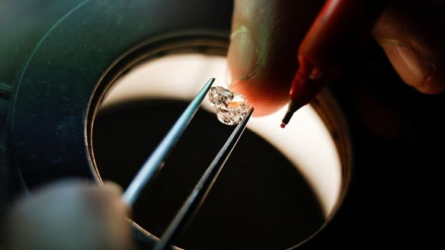
🔥
⚡
Cấm nhập điện thoại, máy tính cũ từ năm 2027: Cơ hội thanh lọc thị trường hay nỗi lo khan hàng?
Thị trường đồ công nghệ, linh kiện điện tử cũ sẽ có nhiều thay đổi từ đầu năm 2027 - Ảnh: ĐỨC THIỆN Theo Thông tư 63/2026 của Bộ Khoa học và Công nghệ, từ ngày 1-1-2027, hàng loạt sản phẩm công nghệ số, điện tử đã qua sử
⚡
⚡
⚡
⚡
⚡
Hơn 30 nghệ sĩ góp mặt trong sự kiện giải trí 2 ngày tại Sân vận động Mỹ Đình
Facebook Twitter Lưu bài viết Bản in Copy link Liên Quân 10 Fest được tổ chức với sự kết hợp hai hoạt động chính với giải Chung kết Quốc gia Đấu Trường Danh Vọng Mùa Đông 2026 và đại nhạc hội Liên Quân 10 Fest được đón c
⚡
Trung Quốc, Nga thúc đẩy hợp tác quốc phòng, hướng tới bảo vệ an ninh chung
Facebook Twitter Lưu bài viết Bản in Copy link Ngày 3/11, Phó Chủ tịch Quân ủy Trung ương Trung Quốc Trương Thăng Dân khẳng định lực lượng vũ trang nước này sẵn sàng hợp tác với Nga nhằm bảo vệ tốt hơn nền an ninh của ha
⚡
⚡
Áp giá điện theo giờ: 'Khó mà chuyển bữa cơm, giờ học của con sang đêm khuya'
Đề cập quy định Nhà nước có cơ chế bù đắp chi phí hợp lý khi chưa kịp điều chỉnh giá điện tại dự thảo luật Điện lực chiều 3.11, đại biểu Bùi Văn Dũng (đoàn Thanh Hóa) cho rằng, cần trả lời rõ các câu hỏi: ai trả, khoản n
⚡
⚡
⚡
⚡
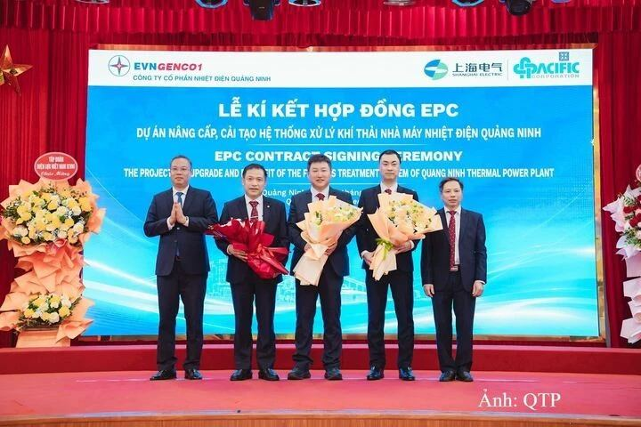
⚡
⚡
Một ngân hàng giới hạn chuyển tiền nhanh tối đa 20 triệu đồng/ngày, áp dụng tất cả khách hàng
Một ngân hàng giới hạn chuyển tiền nhanh tối đa 20 triệu đồng/ngày, áp dụng tất cả khách hàng Theo Thu Thủy | 03/11/2026 18:30 PM | Kinh doanh Theo dõi Cafebiz.vn trên Ngân hàng này cho biết việc điều chỉnh hạn mức nhằm
🔥
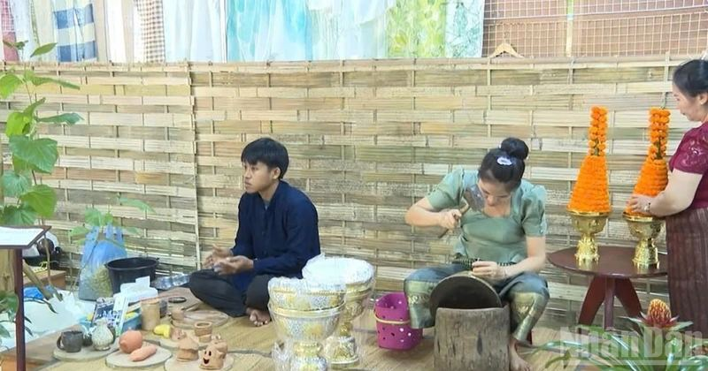
🔥
🔥
🔥
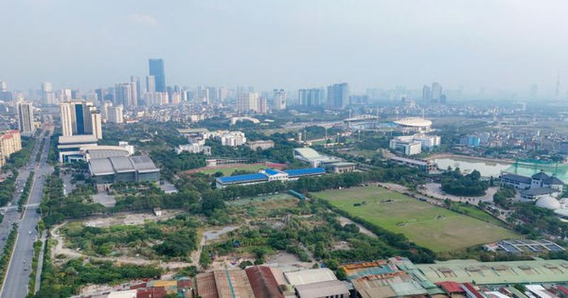
🔥Toàn cảnh khu đất 4,88ha tại Mỹ Đình được đầu tư tổ hợp thể thao hiện đại
TIN MỚI Theo nghị quyết vừa được HĐND thành phố Hà Nội thông qua, dự án Tổ hợp nhà tập luyện và thi đấu thể thao đa năng dự kiến triển khai tại khu đất 4A2.4, khu vận động viên cao cấp Mỹ Đình, phường Từ Liêm. Khu đất có
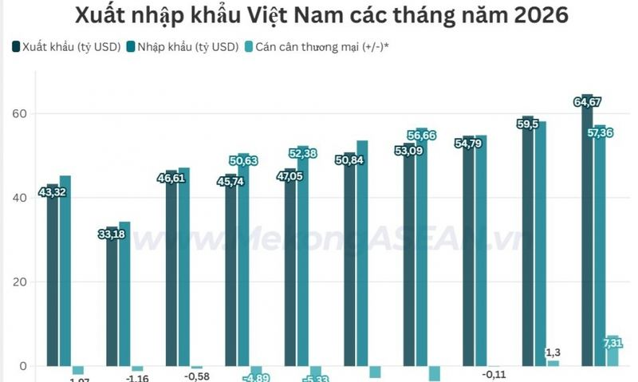
🔥
🔥
🔥
🔥
Sau những tiếng gọi “mẹ” trên màn hình: Người trung niên, cao tuổi thành đích ngắm của 'con nuôi AI' để trục lợi trên tình thương
Sau những tiếng gọi “mẹ” trên màn hình: Người trung niên, cao tuổi thành đích ngắm của 'con nuôi AI' để trục lợi trên tình thương Đồng An | 03/11/2026 07:02 AM | Công nghệ Theo dõi Cafebiz.vn trên Những nhân vật ảo biết
🔥
🔥
🔥
Fed dự kiến giảm số cuộc họp lãi suất: Phố Wall lo ngại rủi ro biến động
(Dân trí) - Thay vì 8 lần công bố lãi suất mỗi năm, Fed dự kiến giảm dần các phiên ra quyết định. Bước đi này khiến nhà đầu tư bối rối vì lo thiếu định hướng và đối mặt nhiều cú sốc đột xuất. Suốt hàng chục năm qua, giới
🔥
⚡
⚡
Trung tâm Điện lực Quảng Trạch: Tổ hợp năng lượng trọng điểm tại miền Trung
Trung tâm Điện lực Quảng Trạch là một trong những trung tâm nguồn điện quy mô lớn tại miền Trung - Ảnh: chinhphu.vn Ngày 3/11, Đoàn công tác Sở Văn hóa, Thể thao và Du lịch tỉnh Quảng Trị cùng các phóng viên thường trú t
⚡
Công an xác minh vụ người tên 'Mai' trong ô tô cùng các clip phát tán trên mạng
Ngày 3/11, lãnh đạo UBND xã Tân An Hội (TPHCM) cho biết công an xã đang xác minh vụ việc liên quan đến một số đoạn clip xuất hiện trên mạng xã hội từ tối 2/11. Hình ảnh lan truyền trên mạng. Theo thông tin ban đầu từ lãn
⚡
Chuyên gia: Đề xuất cấm chuyển nhượng hợp đồng mua bán nhà ở hình thành trong tương lai là dùng mệnh lệnh hành chính can thiệp thô bạo vào nguyên tắc thị trường
Chuyên gia: Đề xuất cấm chuyển nhượng hợp đồng mua bán nhà ở hình thành trong tương lai là dùng mệnh lệnh hành chính can thiệp thô bạo vào nguyên tắc thị trường Theo Minh Anh | 03/11/2026 20:00 PM | Kinh doanh Theo dõi C
⚡
⚡
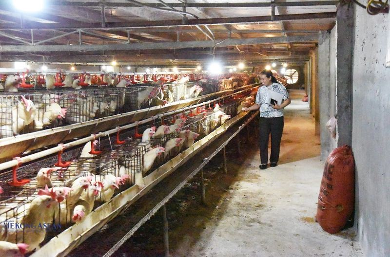
⚡
⚡
⚡
Tính giá điện theo giờ: Không dễ chuyển giờ nấu ăn, sinh hoạt, học hành sang đêm khuya
Đánh giá tác động với từng nhóm hộ sử dụng điện Chiều 3/11, thảo luận về dự án Luật Điện lực sửa đổi tại Quốc hội, đại biểu Bùi Văn Dũng (Thanh Hóa) cho rằng, cần thận trọng trong việc xây dựng lộ trình áp dụng giá điện
⚡
🔥
🔥
🔥
Sắp diễn ra Hội nghị Thương mại điện tử Việt Nam 2026, quy tụ 3.000 đại biểu và nhà bán hàng
Hướng tới Ngày Thương mại điện tử quốc gia 12/12, Vietnam Ecommerce Summit 2026 được tổ chức nhằm kết nối cơ quan quản lý nhà nước, các chuyên gia, doanh nghiệp và cộng đồng nhà bán hàng; góp phần đưa thông tin chính sác
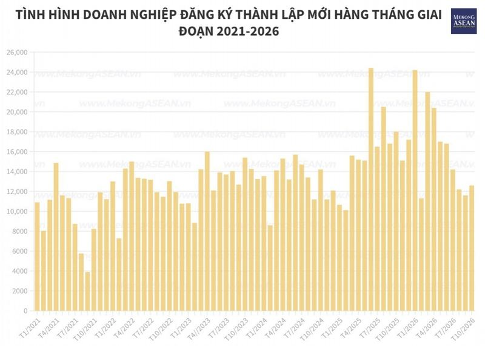
🔥
🔥
Chứng khoán ngày 3/11: Cổ phiếu bất động sản gây sức ép, VN-Index mất mốc 1.700 điểm
Tổng khối lượng giao dịch 3 sàn giảm so với phiên trước, đạt hơn 666 triệu cổ phiếu, tương ứng tổng giá trị giao dịch đạt hơn 13.462 tỷ đồng. Nhà đầu tư nước ngoài tiếp tục bán ròng trên cả 3 sàn hơn 497 tỷ đồng, tập tru
🔥
Bộ trưởng Bộ Tài chính chỉ đạo triển khai đồng bộ giải pháp thúc đẩy tăng trưởng 2 con số
Bộ trưởng Bộ Tài chính Ngô Văn Tuấn yêu cầu các đơn vị nâng cao chất lượng tham mưu, phân tích, dự báo; tập trung tháo gỡ khó khăn cho doanh nghiệp, thúc đẩy đầu tư, giám sát thị trường tài chính và kiểm soát lạm phát, g
🔥
Chuyên gia: Đề xuất cấm chuyển nhượng hợp đồng mua bán nhà ở hình thành trong tương lai là dùng mệnh lệnh hành chính can thiệp thô bạo vào nguyên tắc thị trường
TIN MỚI Tại phiên thảo luận Quốc hội ngày 30/10 về dự thảo Luật Kinh doanh bất động sản (sửa đổi), ông Lê Thanh Hoàn, Ủy viên chuyên trách Ủy ban Pháp luật và Tư pháp của Quốc hội, đề nghị bổ sung quy định cấm chuyển như
🔥
🔥
[Video] Giá xăng dầu kéo CPI tháng 10 tăng, lạm phát 10 tháng ở mức 4,57%
So với cùng kỳ năm trước, chỉ số giá tiêu dùng tháng 10 tăng 5,09% và tăng 4,41% so với tháng 12/2025. Tính chung bình quân 10 tháng năm 2026, chỉ số giá tiêu dùng tăng 4,57% so với cùng kỳ năm trước, trong khi lạm phát
🔥
2.000 doanh nghiệp sẽ hưởng lợi từ thỏa thuận hợp tác với TP.Gimcheon (Hàn Quốc)
Quang cảnh buổi lễ ký kết giữa TP.Gimcheon (Hàn Quốc) và đại diện Hiệp hội Doanh nghiệp nhỏ và vừa phía nam (AMES) ẢNH: BTC Hàn Quốc hiện tiếp tục giữ vững vị trí là nhà đầu tư FDI lớn nhất tại Việt Nam với gần 10.600 dự
🔥
Bên cạnh xuất khẩu, kinh tế Việt Nam ghi nhận một kỷ lục mới trong vòng 17 năm trở lại đây
Bên cạnh xuất khẩu, kinh tế Việt Nam ghi nhận một kỷ lục mới trong vòng 17 năm trở lại đây Theo Hoàng Nguyễn | 03/11/2026 14:26 PM | Kinh tế vĩ mô Theo dõi Cafebiz.vn trên Theo số liệu mới nhất của Cục Thống kê (Bộ Tài c
🔥
Gia Lai đề xuất lập 5 phường mới: Lợi thế nào giúp các địa phương bứt phá?
Ngày 3.11, UBND tỉnh Gia Lai cho biết đã trình Chính phủ xem xét đề án thành lập 5 phường An Nhơn Tây, Chư Sê, Phù Mỹ, Tây Sơn và Tuy Phước. Trước đó, ngày 20.10, HĐND tỉnh Gia Lai đã thông qua chủ trương thành lập các p
🔥
Vượt mốc 1.000 tỷ USD, kim ngạch xuất nhập khẩu xác lập mức cao nhất từ trước tới nay
Riêng tháng 10, tổng kim ngạch xuất nhập khẩu hàng hóa đạt 122,03 tỷ USD, tăng 3,7% so với tháng trước và tăng 47,4% so với cùng kỳ năm trước. Trong đó, xuất khẩu đạt 64,67 tỷ USD, nhập khẩu đạt 57,36 tỷ USD. Cán cân thư
🔥
Từng rẻ nhất phân khúc, hãng xe Trung Quốc rời Nga sau 3 năm, để lại gần 22.000 chủ xe
Từng rẻ nhất phân khúc, hãng xe Trung Quốc rời Nga sau 3 năm, để lại gần 22.000 chủ xe Theo PV | 03/11/2026 14:00 PM | Công nghệ Theo dõi Cafebiz.vn trên Giá rẻ khiến xe Trung Quốc dễ tiếp cận tại Nga nhưng điều đó không
🔥
🔥
🔥
🔥
 🔥
🔥
Một doanh nghiệp có doanh thu vượt Vingroup, bỏ xa Vinhomes, gấp hơn 2 lần Hòa Phát và Thế Giới Di Động
Một doanh nghiệp có doanh thu vượt Vingroup, bỏ xa Vinhomes, gấp hơn 2 lần Hòa Phát và Thế Giới Di Động Theo Ngọc Ly | 03/11/2026 07:12 AM | Kinh doanh Theo dõi Cafebiz.vn trên Bình quân mỗi ngày trong 9 tháng đầu năm, d
🔥
🔥
🔥
⚡
⚡
Sam Altman bày tỏ sự cảm thông với các nhà toán học, nhưng khẳng định rằng cuộc “tấn công” toán học của OpenAI sẽ không dừng lại.
Sam Altman bày tỏ sự cảm thông với các nhà toán học, nhưng khẳng định rằng cuộc “tấn công” toán học của OpenAI sẽ không dừng lại. Thiên Minh | 03/11/2026 20:02 PM | Công nghệ Theo dõi Cafebiz.vn trên Trong một bài phỏng
⚡
⚡
⚡
⚡
Việt Nam định hình hệ sinh thái đầu tư chiến lược, nâng chất lượng dòng vốn FDI
Trong bối cảnh chuỗi cung ứng toàn cầu tái cấu trúc, Việt Nam định hướng thu hút dự án đầu tư nước ngoài (FDI) có công nghệ lõi, năng lực nghiên cứu phát triển và khả năng liên kết với doanh nghiệp trong nước. Thứ trưởng
🔥
Cảnh sát đặc nhiệm Việt Nam - Trung Quốc diễn tập hiệp đồng tác chiến chống khủng bố
Ngày 3.11, Bộ Công an tổ chức lễ khai mạc Huấn luyện, diễn tập chung phòng, chống khủng bố với lực lượng Cảnh sát vũ trang nhân dân Trung Quốc "Hợp tác 2026", tại Hà Nội. Đợt huấn luyện, diễn tập chung dự kiến kéo dài 15
🔥
🔥
🔥
🔥
🔥
Vì sao bị tuyên án tử hình, bà Trương Mỹ Lan lại đang chấp hành án chung thân?
Vì sao bị tuyên án tử hình, bà Trương Mỹ Lan lại đang chấp hành án chung thân? Theo Thanh Hà | 03/11/2026 16:19 PM | Xã hội Theo dõi Cafebiz.vn trên Từ bản án tử hình bị tuyên trước đó, bà Trương Mỹ Lan, cựu Chủ tịch Tập
🔥
🔥
Nga tuyên bố đánh chặn gần 500 UAV, giao tranh với Ukraine leo thang trở lại
Chào mừng quý độc giả và thính giả đến với Bản tin Thế giới - chuyên mục podcast thời sự quốc tế hàng ngày trên Báo Điện tử VietnamPlus. Tại đây, chúng tôi cập nhật nhanh nhất những diễn biến nổi bật toàn cầu trong 24 gi
🔥
🔥
🔥
🔥
Grab mất 60 triệu USD vì một thương vụ thâu tóm bất thành: Kế hoạch bước ra ngoài Đông Nam Á đổ bể, công ty quay lại 'sân nhà'
Grab mất 60 triệu USD vì một thương vụ thâu tóm bất thành: Kế hoạch bước ra ngoài Đông Nam Á đổ bể, công ty quay lại 'sân nhà' Phương Linh | 03/11/2026 15:40 PM | Kinh doanh Theo dõi Cafebiz.vn trên Kế hoạch thâu tóm lớn
🔥
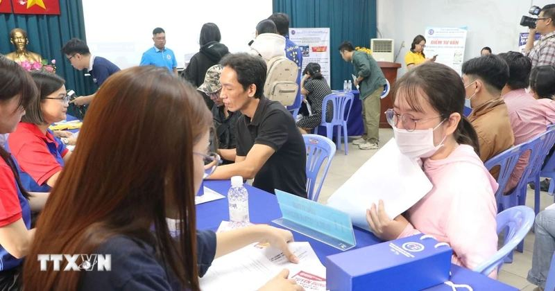
🔥TP Hồ Chí Minh hỗ trợ hơn 1.400 lao động sau khi doanh nghiệp ngừng sản xuất
Facebook Twitter Lưu bài viết Bản in Copy link Ngày 3/11, ông Phùng Thái Quang, Phó Chủ tịch Liên đoàn Lao động Thành phố Hồ Chí Minh, thông tin Công đoàn Thành phố đang triển khai nhiều giải pháp nhằm bảo đảm quyền lợi
🔥
🔥
72 doanh nghiệp Việt lọt Top 500 Đông Nam Á, Thứ trưởng Lê Tấn Cận: 'Mong nhà đầu tư nước ngoài không chỉ xem Việt Nam là địa điểm sản xuất'
72 doanh nghiệp Việt lọt Top 500 Đông Nam Á, Thứ trưởng Lê Tấn Cận: 'Mong nhà đầu tư nước ngoài không chỉ xem Việt Nam là địa điểm sản xuất' Trần Chung | 03/11/2026 11:40 AM | Kinh tế vĩ mô Theo dõi Cafebiz.vn trên Bên c
🔥
Một tập đoàn tư nhân Việt Nam dự chi khoảng 30 triệu USD để xây dựng tổ hợp sản xuất công nghiệp ở nước ngoài
TIN MỚI Mới đây, Công ty CP Đầu tư Thái Bình (TBS Group) đã đón tiếp ông Ahmad Luthfi, Thống đốc tỉnh Trung Java (Indonesia) cùng đoàn công tác đến thăm và làm việc với tập đoàn. Hai bên đã trao đổi cơ hội hợp tác và ký
🔥
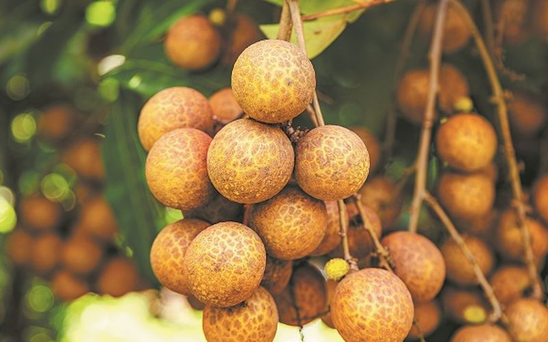
🔥Không phải sầu riêng, Thái Lan quyết tâm làm giàu với loại quả Việt Nam trồng rất nhiều: Giá đầu vụ tăng 20%, sẽ xuất khẩu sang cả Trung Đông
TIN MỚI Ảnh minh họa Nhãn mật ong vàng, còn gọi là Puang Thong tại Thái Lan, đang từng bước tạo dựng chỗ đứng riêng trên thị trường xuất khẩu nhờ đặc điểm hương vị và phương thức xử lý sau thu hoạch khác biệt so với giốn
🔥
⚡
Coca-Cola thu hồi nhiều dòng nước đóng chai tại Australia do nguy cơ gây hóc
Facebook Twitter Lưu bài viết Bản in Copy link Hàng loạt sản phẩm nước đóng chai nhãn hiệu Pump của tập đoàn nước giải khát Coca-Cola đang được bày bán tại các siêu thị ở Australia vừa bị thu hồi khẩn cấp do nguy cơ gây
⚡
Việt Nam - Lào hướng tới kỷ niệm những dấu mốc quan trọng trong quan hệ hai nước
Chủ tịch Quốc hội Trần Thanh Mẫn và Chủ tịch Quốc hội Lào Sonexay Siphandone chụp ảnh chung. (Ảnh: Minh Châu) Tại cuộc hội đàm, hai Chủ tịch Quốc hội bày tỏ vui mừng trước những bước phát triển tích cực của quan hệ Việt
⚡
⚡
Phường Tam Thắng đạt kết quả tích cực trong công tác phòng, chống AIDS, ma túy, mại dâm
Tổ kiểm tra tiền trạm của Ban Chỉ đạo phòng, chống AIDS, ma túy, mại dâm TPHCM làm việc tại phường Tam Thắng Thời gian qua, BCĐ phường Tam Thắng tập trung triển khai đồng bộ nhiều giải pháp nhằm nâng cao hiệu quả công tá
⚡
Mười tháng qua, các chính sách an sinh xã hội tiếp tục được quan tâm triển khai
Kết quả sơ bộ Điều tra lao động việc làm chỉ ra, tỷ lệ hộ đánh giá có thu nhập trong tháng 10 không thay đổi và tăng lên so với tháng cùng kỳ năm 2025 là 96,8%; tỷ lệ hộ đánh giá có thu nhập giảm và không biết là 3,2%. T
⚡
⚡
⚡
[Video] Dự báo thời tiết đêm nay và ngày mai 4/11: Bắc Bộ nắng trở lại, Nam Bộ mưa dông
Do khối khí lạnh ở phía bắc suy yếu và di chuyển dần về phía Đông trong đêm nay và ngày mai, mưa ở Bắc Bộ giảm rõ rệt sau một ngày có mưa rào và dông rải rác. Đêm nay, cả Tây Bắc Bộ và Đông Bắc Bộ chủ yếu chỉ có mưa ở mộ
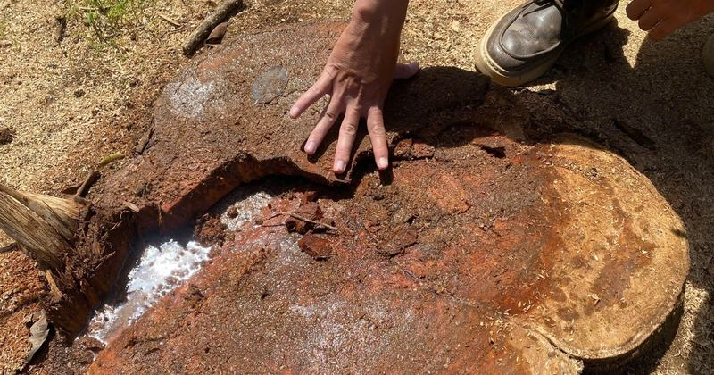
⚡
⚡
⚡
⚡
⚡
⚡
Một tỉnh miền Trung chuẩn bị khởi công khu công nghiệp 52,5 triệu USD, quy mô hơn 181 ha, mở ra loạt cơ hội việc làm mới
Một tỉnh miền Trung chuẩn bị khởi công khu công nghiệp 52,5 triệu USD, quy mô hơn 181 ha, mở ra loạt cơ hội việc làm mới Theo Ngọc Khánh | 03/11/2026 19:30 PM | Kinh doanh Theo dõi Cafebiz.vn trên Dự án Khu công nghiệp V
⚡
Tìm thấy bé trai 14 tuổi bị người lạ dụ dỗ rời nhà bằng lời hứa lương 20 triệu đồng
Ngày 3/11, Công an xã Yên Sơn (tỉnh Sơn La) thông tin, đơn vị phối hợp với các lực lượng chức năng tìm thấy cháu L.V.T (SN 2011, trú tại bản Đán, xã Yên Sơn) bị người lạ dụ dỗ rời khỏi nhà để đi làm “việc nhẹ lương cao”
⚡
⚡
⚡
Hoàn thiện quy định về giám sát dịch tễ học HIV/AIDS phù hợp mô hình chính quyền địa phương 2 cấp
Theo đó, sẽ hoàn thiện dự thảo Thông tư sửa đổi, bổ sung một số điều của Thông tư số 07/2023/TT-BYT hướng dẫn quy trình, phương pháp giám sát dịch tễ học HIV/AIDS và giám sát các bệnh lây truyền qua đường tình dục; Thông
⚡
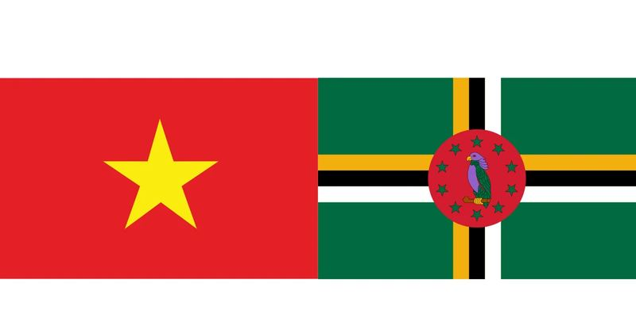
⚡
⚡
⚡
Hai Phu nhân Chủ tịch Quốc hội Việt Nam và Lào thăm Làng trẻ em Birla Hà Nội
Facebook Twitter Lưu bài viết Bản in Copy link Trong khuôn khổ chuyến thăm chính thức Việt Nam của Chủ tịch Quốc hội Lào và Phu nhân, chiều 3/11, Phu nhân Chủ tịch Quốc hội Việt Nam Nguyễn Thị Thanh Nga và Phu nhân Chủ t
⚡
Đánh giá cao vai trò của TTXVN và Yonhap trong thúc đẩy quan hệ Việt-Hàn
Facebook Twitter Lưu bài viết Bản in Copy link Theo phóng viên TTXVN tại Hàn Quốc, trong khuôn khổ chuyến làm việc tại Hàn Quốc, ngày 3/11, Đoàn đại biểu Thông tấn xã Việt Nam (TTXVN) do Tổng Giám đốc Vũ Việt Trang làm T
🔥
🔥
Bộ trưởng Lê Mạnh Hùng: Khung giá phát điện sẽ do đơn vị độc lập xây dựng
Bộ trưởng Bộ Công Thương Lê Mạnh Hùng cho biết, dự thảo Luật Điện lực (sửa đổi) đã tiếp thu ý kiến đại biểu Quốc hội, giao đơn vị độc lập xây dựng khung giá phát điện, đồng thời tăng cường minh bạch chi phí, hoàn thiện c
🔥
🔥
🔥
🔥
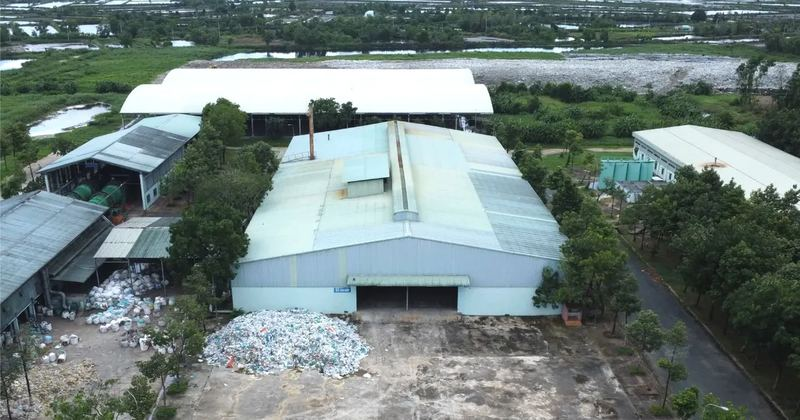
🔥
🔥
🔥
🔥
Tai nạn liên hoàn trên đường Hồ Chí Minh, 2 người tử vong, 1 người nguy kịch
Chiều 3.11, Công an xã A Lưới 4 (thành phố Huế) đang phối hợp các đơn vị liên quan tiến hành điều tra, làm rõ nguyên nhân vụ tai nạn giao thông liên hoàn xảy ra trên địa bàn. Hiện trường vụ tai nạn ẢNH: N.T Theo thông ti
🔥
Bộ Tài chính đào tạo, nâng cao năng lực chuyển đổi số cho hơn 15.000 doanh nghiệp
Giai đoạn 2021-2025, hơn 15.000 doanh nghiệp đã tham gia các chương trình đào tạo chuyển đổi số, khoảng 500 doanh nghiệp được tư vấn xây dựng lộ trình ứng dụng công nghệ. Kết quả này góp phần nâng cao năng lực quản trị,
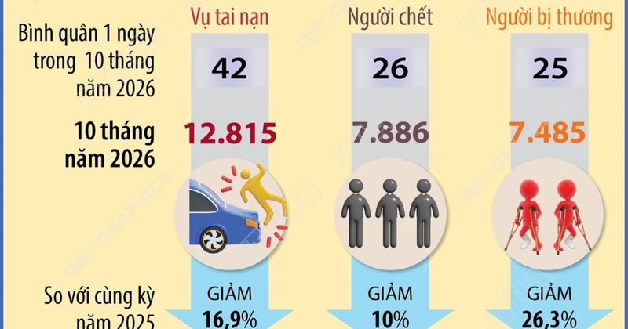
🔥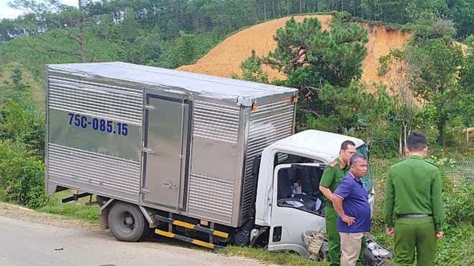
🔥
🔥
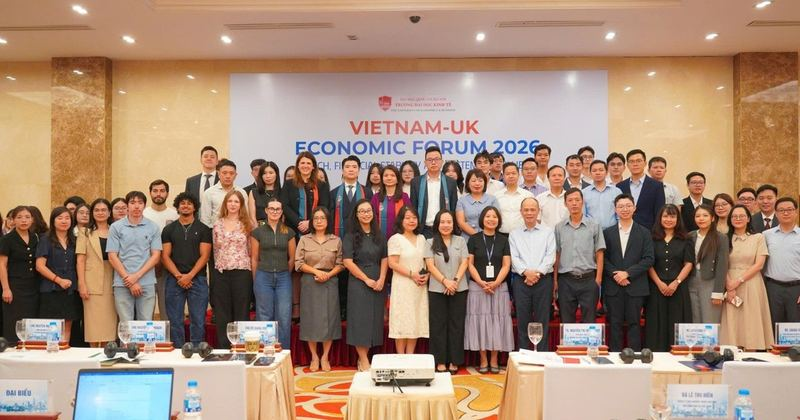
🔥Chuyển đổi số ngân hàng: Năng suất tăng, trải nghiệm khách hàng vẫn cần cải thiện
Ngày 3/11, phát biểu tại Diễn đàn Kinh tế Việt - Anh 2026 , ông Đỗ Quang Vinh, Phó Chủ tịch HĐQT Ngân hàng TMCP Sài Gòn - Hà Nội (SHB) đã đưa ra góc nhìn về mức độ sẵn sàng chuyển đổi số của các ngân hàng Việt Nam. Theo
🔥
Chuyển nhầm lương cho người nghỉ việc từ 2 năm trước, công ty cay đắng đệ đơn kiện: Vụ việc phơi ra lỗ hổng của nhiều doanh nghiệp
Chuyển nhầm lương cho người nghỉ việc từ 2 năm trước, công ty cay đắng đệ đơn kiện: Vụ việc phơi ra lỗ hổng của nhiều doanh nghiệp Pa Dun | 03/11/2026 15:00 PM | Sống Theo dõi Cafebiz.vn trên Một khoản lương 5.000 tệ (kh
🔥
Vietcombank được Ngân hàng Nhà nước chấp thuận tăng vốn điều lệ thêm 5.431 tỷ đồng
TIN MỚI Ngân hàng Thương mại Cổ phần Ngoại thương Việt Nam (Vietcombank, mã: VCB) cho biết đã nhận được Công văn của Ngân hàng Nhà nước (NHNN) về việc chấp thuận tăng vốn điều lệ theo phương án phát hành cổ phiếu riêng l
🔥
Khơi thông các động lực đóng góp vào mục tiêu tăng trưởng kinh tế 2 con số năm 2026
Sản xuất công nghiệp, đầu tư, tiêu dùng, xuất nhập khẩu và du lịch duy trì đà tăng trong 10 tháng năm 2026, tạo động lực cho kinh tế. Kết quả này góp phần mở rộng năng lực sản xuất, thị trường và nguồn lực, qua đó đóng g
🔥
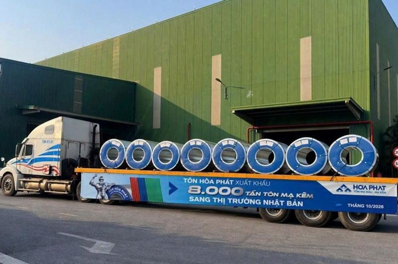
🔥Tài chính doanh nghiệp 24/7: Doanh nghiệp tăng lợi nhuận, mở rộng thị trường và đầu tư nhân lực
Tài chính doanh nghiệp 24/7 ngày 3/11 ghi nhận các thông tin về tăng lợi nhuận, mở rộng thị trường và đầu tư nhân lực. BSR, Petrolimex, FECON và nhiều doanh nghiệp ghi nhận kết quả kinh doanh tăng trưởng sau 9 tháng năm
🔥
🔥
🔥
🔥
🔥
🔥
Hà Nội mời gọi nhà đầu tư làm bãi xe ngầm tại loạt công viên lớn như Thống Nhất, Tuổi Trẻ
Trước nhu cầu giao thông tĩnh tại khu vực nội đô Hà Nội ngày càng trở nên bức thiết, trong khi nguồn lực ngân sách còn hạn hẹp, Sở Xây dựng Hà Nội vừa có văn bản kêu gọi các doanh nghiệp, nhà đầu tư có tiềm lực tài chính
🔥
🔥
Lần đầu tiên Việt Nam xây dựng thành công công trình gần 12.000 tỷ đồng nằm sâu trong lòng núi: Đào hơn 1 triệu m³ đất đá ngầm, xây 2 đường hầm xuyên núi dài hơn 8km
TIN MỚI Nằm trên dòng sông Nậm Mu, thuộc khu vực hai tỉnh Lai Châu và Sơn La, Nhà máy Thủy điện Huội Quảng là một trong những công trình thủy điện có thiết kế đặc biệt tại Việt Nam. Khác với những nhà máy có khu vực phát
🔥
 🔥
🔥
Thế Giới Di Động, GELEX và Hoàng Anh Gia Lai bất ngờ ghi thêm hàng nghìn tỷ đồng lợi nhuận chưa phân phối nhưng không đến từ kinh doanh: Nguồn gốc từ đâu?
MWG: Giá hiện tại Thay đổi Xem hồ sơ doanh nghiệp TIN MỚI Báo cáo tài chính quý III/2026 của Thế Giới Di Động (MWG) xuất hiện một con số đáng chú ý. Lợi nhuận sau thuế chưa phân phối đạt 32.611 tỷ đồng vào cuối tháng 9,
⚡
⚡
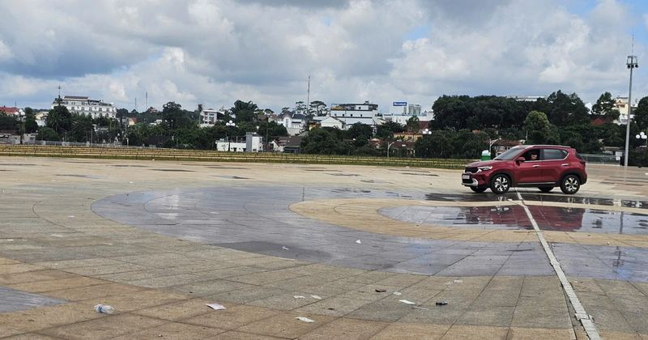
⚡Quảng trường lớn nhất khu vực Tây Nguyên tạm đóng cửa sau hơn 3 tháng khánh thành
Ngày 3/11, Ban Quản lý dự án đầu tư xây dựng số 3 (Ban QLDA3) tỉnh Lâm Đồng đã có thông báo kế hoạch rào chắn toàn bộ mặt sân và các lối vào Quảng trường Trung tâm Gia Nghĩa , phường Bắc Gia Nghĩa để phục vụ thi công, kh
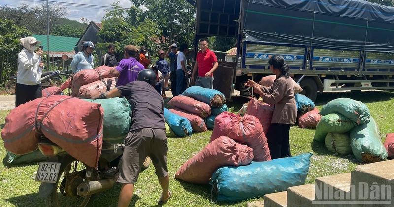
⚡Sản xuất nông, lâm nghiệp và thủy sản tháng 10/2026 đạt kết quả tích cực
Các địa phương tập trung thu hoạch lúa mùa, gieo cấy lúa thu đông và gieo trồng cây vụ đông. Chăn nuôi lợn , đàn gia cầm tiếp tục tăng trưởng khá. Sản lượng gỗ khai thác tăng, đáp ứng nhu cầu nguyên liệu gỗ phục vụ chế b
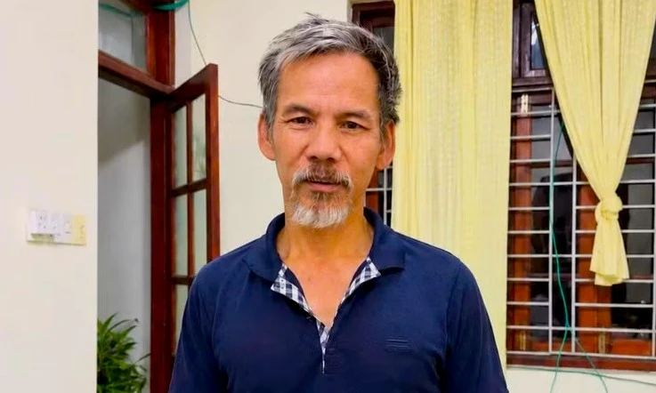
⚡
🔥
🔥
Đề xuất đầu tư thiết bị phát hiện UAV hoạt động trái phép khu vực sân bay
Thời gian qua, hoạt động của UAV tại khu vực các cảng hàng không diễn biến phức tạp Thời gian gián đoạn khai thác do các vụ việc này gây ra có thể kéo dài, cá biệt lên tới 4 giờ. Tại các cảng hàng không quốc tế Cát Bi, N
🔥
CEO Apple tuyên bố không làm AI chỉ để "làm màu", khẳng định hướng đi khác biệt
CEO Apple tuyên bố không làm AI chỉ để "làm màu", khẳng định hướng đi khác biệt Theo Thiên Minh | 03/11/2026 17:51 PM | Công nghệ Theo dõi Cafebiz.vn trên Trước áp lực từ giới công nghệ về việc tụt hậu trong cuộc đua AI,
M
🔥
Kết nối doanh nghiệp Việt Nam - Campuchia hướng tới 60 năm quan hệ hữu nghị
Hội Phát triển Hợp tác kinh tế Việt Nam - ASEAN (VASEAN) tới thăm và làm việc tại Đại sứ quán Vương quốc Campuchia tại Hà Nội nhân dịp Quốc khánh Campuchia (9/11). Ảnh: Thu Thảo/Mekong ASEAN. Sáng 3/11, đoàn đại biểu Hội
🔥
🔥
30 tập đoàn lớn gồm Vingroup, Hòa Phát, Sovico... tạo ra hơn nửa triệu việc làm
30 tập đoàn đầu tư chiến lược tạo ra 560.000 việc làm cho nền kinh tế - Ảnh: D.N. Công ty cổ phần Báo cáo đánh giá Việt Nam (Vietnam Report) vừa công bố nghiên cứu ALPHA30 - Top 30 tập đoàn đầu tư chiến lược Việt Nam năm
🔥
🔥
Emeralda Resort Tam Cốc giành Giải Vàng ‘VMARK Hospitality · F&B Excellence Award 2026’
Emeralda Resort Tam Cốc – dấu ấn kiến trúc biệt phủ Bắc Bộ. Ngôn ngữ kiến trúc: Dấu ấn biệt phủ xứ kinh kỳ Từng đường nét chạm khắc thủ công tôn vinh kiến trúc Việt tại Emeralda Resort Tam Cốc. Lấy cảm hứng từ phong cách
🔥
Không phải Sa Pa, Việt Nam có một nơi nằm ở độ cao hơn 1.500m được xây dựng thành khu nghỉ dưỡng rộng hơn 45ha, khởi công ngay tháng sau do công ty của nữ doanh nhân sinh năm 2003 đầu tư
TIN MỚI Chiều ngày 02/11, Đảng ủy xã Tà Xùa (Sơn La) tổ chức Hội nghị Ban Thường vụ Đảng ủy, Ban Chấp hành Đảng bộ xã phiên chuyên đề tháng 11/2026, nghe thuyết minh đồ án quy hoạch chi tiết tỷ lệ 1/500 dự án khu du lịch
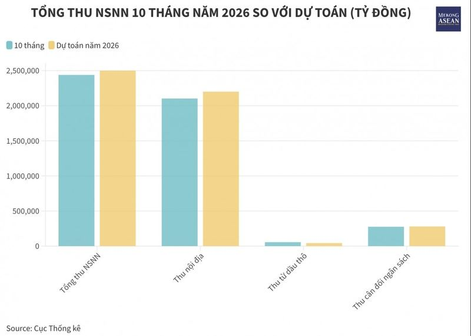
🔥
🔥
🔥
Tác động SCB cho Công ty BMC vay hơn 4.000 tỉ, nữ trợ lý giúp bà Trương Mỹ Lan lấy 1/3 số tiền vay ra sao?
Bà Nguyễn Thị Thu Sương, nguyên Chủ tịch HĐQT Ngân hàng SCB - Ảnh: Tư liệu Cơ quan Cảnh sát điều tra (C03) Bộ Công an vừa hoàn thành bản kết luận điều tra bổ sung, đề nghị Viện Kiểm sát nhân dân tối cao truy tố 27 bị can
🔥
Ông Trump cân nhắc ký lệnh ân xá trước cho Elon Musk và các quan chức thân cận
Theo tờ USA Today, Tổng thống Mỹ Donald Trump ngày 2/11 cho biết ông đang cân nhắc ký lệnh ân xá trước cho tỷ phú Elon Musk và các trợ lý khác tại Nhà Trắng, những người có thể trở thành mục tiêu điều tra của đảng Dân ch
🔥
🔥
Sếp công ty chứng khoán nói về điều quan trọng hơn việc VN-Index tăng bao nhiêu điểm
TIN MỚI Sau 30 năm hình thành và phát triển, vốn hóa thị trường cổ phiếu trên HOSE, HNX và UPCoM đạt hơn 10,57 triệu tỷ đồng, tương đương 82,3% GDP ước tính năm 2025. Thanh khoản duy trì ở mức cao với giá trị giao dịch b
🔥
Đại diện FTSE Russell: Việt Nam cần tăng số doanh nghiệp trong các bộ chỉ số
Bà Wanming Du cùng ông Dominic Scriven - Chủ tịch Dragon Capital (bên phải) - trong phiên thảo luận tại Diễn đàn Thị trường vốn - Ảnh: QUANG ĐỊNH Trao đổi với Tuổi Trẻ bên lề Diễn đàn Thị trường vốn Việt Nam 2026 do báo
🔥
Nga ghi nhận vụ AI tự tấn công mạng, xâm nhập hơn 10 máy chủ trong 3 giờ
Các tác nhân AI được cho là đã tự thực hiện toàn bộ quá trình của một vụ tấn công mạng tại Nga - Ảnh minh họa: Magnific Theo trang tin công nghệ CNews (Nga) ngày 2-11, các chuyên gia an ninh mạng thuộc bộ phận ứng phó to
🔥
🔥
🔥
🔥
Ông Trump dọa tấn công 'pháo đài hạt nhân' của Iran nếu không đạt thỏa thuận
Tổng thống Mỹ Donald Trump - Ảnh: AFP Chia sẻ với Đài Fox News ngày 2-11, Tổng thống Mỹ Donald Trump mô tả xung đột với Iran là một cuộc chiến “rất nhẹ nhàng”, đồng thời cảnh báo quân đội Mỹ có thể tấn công thêm các mục
🔥
🔥
Mỹ cảnh báo tấn công "pháo đài hạt nhân" Iran, dọa hành động trong một giờ
(Dân trí) - Tổng thống Donald Trump cảnh báo Mỹ có thể nhắm mục tiêu vào cơ sở hạt nhân của Iran nếu không đạt được thỏa thuận. Tổng thống Mỹ Donald Trump (Ảnh: Reuters). Trong cuộc trao đổi với kênh Fox News ngày 2/11,
🔥
Tỷ lệ ủng hộ Tổng thống Trump thấp kỷ lục vào đêm trước bầu cử giữa nhiệm kỳ
Tỷ lệ ủng hộ Tổng thống Trump thấp kỷ lục vào đêm trước bầu cử giữa nhiệm kỳ Theo Kông Anh | 03/11/2026 10:44 AM | Xã hội Theo dõi Cafebiz.vn trên Cuộc khảo sát của Reuters/Ipsos cho thấy tỷ lệ ủng hộ Tổng thống Mỹ Donal
🔥
🔥
Mỹ tìm kiếm hơn 25.000 hải lý không thấy, 5 người mất tích bất ngờ xuất hiện tại Thái Bình Dương
Năm người sống sót, trong đó có hai trẻ em, được giải cứu sau khi con thuyền của họ được phát hiện cách điểm xuất phát hàng ngàn km - Ảnh: THE TELEGRAPH/Dennis Patrick Tatireta Ngày 2-11, báo The Telegraph đưa tin năm ng
🔥
Cập nhật mới nhất về tiến độ tuyến đường sắt tốc độ cao hơn 147.000 tỷ của Vingroup
TIN MỚI Dự án tuyến đường sắt tốc độ cao Hà Nội - Quảng Ninh đang từng bước được triển khai trên địa bàn Quảng Ninh. Cùng với việc tổ chức thi công các vị trí cầu, trụ cầu, công tác GPMB tiếp tục được tập trung đẩy nhanh
🔥
🔥
🔥
🔥
Tỷ phú hụt viral Trung Quốc: Lãnh thưởng hụt 43 tỷ còn phải nộp 340 triệu tiền án phí!
Tỷ phú hụt viral Trung Quốc: Lãnh thưởng hụt 43 tỷ còn phải nộp 340 triệu tiền án phí! Long Văn | 03/11/2026 10:01 AM | Sống Theo dõi Cafebiz.vn trên Một người đàn ông họ Hoàng ở Trung Quốc bỏ ra 32 tệ (khoảng 124.000 đồ
🔥
🔥
🔥
🔥
Cận cảnh công viên gần 100 tỷ đồng ở trung tâm tỉnh Lào Cai sắp hình thành
TIN MỚI Dự án Công viên phường Yên Bái tại khu vực hồ Cung Thiếu nhi được phê duyệt với tổng mức đầu tư sơ bộ khoảng 90 tỷ đồng từ nguồn ngân sách tỉnh, trên tổng diện tích quy hoạch khoảng 6,8 ha, công viên được thiết
🔥
Sự cố nghi điện giật tại bể bơi khách sạn 5 sao ở Ấn Độ khiến 2 du khách tử vong
TIN MỚI Hai công dân nước ngoài đã tử vong trong một sự cố nghi bị điện giật tại bể bơi khách sạn Conrad ở thành phố Bengaluru, bang Karnataka, Ấn Độ, vào tối 30/10. Vụ việc xảy ra tại bể bơi trên tầng 3 của khách sạn, k
🔥
Ranh giới mong manh giữa phát triển trí tuệ nhân tạo và kiểm soát rủi ro
Các chính phủ và doanh nghiệp đang đứng trước lựa chọn khó khăn, khi lợi ích về kinh tế, công nghệ va chạm với trách nhiệm thắt chặt quản trị AI . Khi các doanh nghiệp vốn đang đứng ở “tuyến đầu” trong cuộc đua phát triể
🔥
🔥
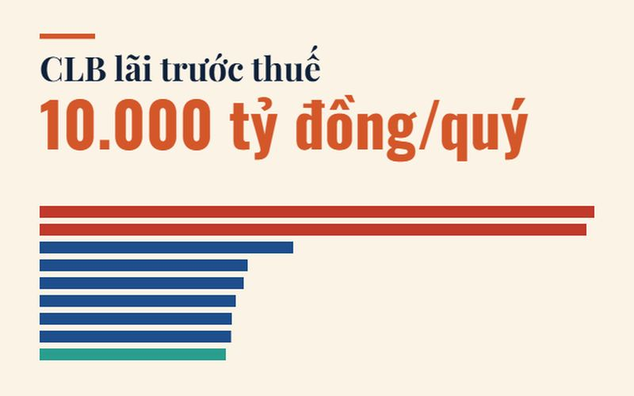
🔥Lần đầu tiên có 9 doanh nghiệp Việt Nam lãi trên 10.000 tỷ trong một quý
VIC&VHM&VCB&CTG&VPB&BID&TCB&MBB&BSR: Giá hiện tại Thay đổi Xem hồ sơ doanh nghiệp TIN MỚI Theo thống kê từ báo cáo tài chính quý 3/2026 của các doanh nghiệp niêm yết, quý vừa qua ghi nhận 9 doanh nghiệp có lợi nhuận trướ
 🔥
🔥
🔥
Chân dung Quyền Tổng Giám đốc Sacombank Nguyễn Thị Kiều Anh: Từ chuyên viên tín dụng VPBank đến ghế điều hành ngân hàng tư nhân hàng đầu Việt Nam
TIN MỚI Hội đồng quản trị Sacombank bổ nhiệm bà Nguyễn Thị Kiều Anh, Phó Tổng Giám đốc ngân hàng, giữ chức Quyền Tổng Giám đốc, phụ trách điều hành hoạt động từ ngày 2/11/2026. Quyết định được đưa ra cùng thời điểm ông L
🔥
🔥
Chi tiền tỷ cho mỗi ca sinh - nước cờ đảo ngược khủng hoảng ngại có con của Hàn Quốc
Chi tiền tỷ cho mỗi ca sinh - nước cờ đảo ngược khủng hoảng ngại có con của Hàn Quốc Giữa lúc Hàn Quốc chật vật với tỷ lệ sinh thấp nhất thế giới, khoản thưởng 75.000 USD (hơn 100 triệu won) cùng chính sách nghỉ thai sản
🔥
Cận cảnh công viên gần 100 tỷ đồng ở trung tâm tỉnh Lào Cai sắp hình thành
Dự án Công viên phường Yên Bái tại khu vực hồ Cung Thiếu nhi được phê duyệt với tổng mức đầu tư sơ bộ khoảng 90 tỷ đồng từ nguồn ngân sách tỉnh, trên tổng diện tích quy hoạch khoảng 6,8 ha, công viên được thiết kế hài
🔥
Bầu cử giữa kỳ Mỹ, nơi thử sức cho tham vọng vào Nhà Trắng của Phó Tổng thống Vance?
Giới quan sát chỉ ra rằng vào những tuần cuối cùng trước ngày bầu cử giữa nhiệm kỳ 3/11 ở Mỹ, ông Vance đã tập trung hoàn thiện thông điệp tranh cử, động thái được nhiều người xem là bước chuẩn bị cho cuộc đua vào ghế lã
🔥
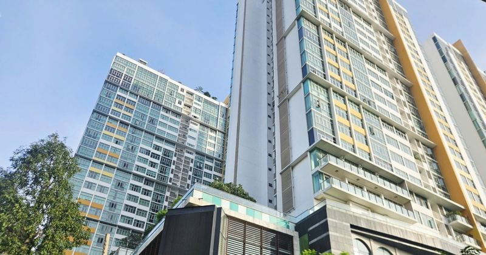
🔥
🔥
🔥
Tin đồn máy bay thương gia rơi do tên lửa quanh khu Mar-a-Lago của ông Trump bắn, có lý không?
Chiếc máy bay rơi xuống hạt Palm Beach, bang Florida, Mỹ vào đầu giờ chiều 1-11 (theo giờ địa phương) là máy bay tư nhân Learjet 60 - Ảnh minh họa: AviationCircle Chỉ cách khu nghỉ dưỡng Mar-a-Lago của Tổng thống Mỹ Dona
🔥
🔥
🔥
🔥
Phiên giao dịch đầu tiên của thị trường chứng khoán Việt Nam diễn ra như thế nào?
TIN MỚI Đúng 9h sáng ngày 28/7/2000, tại Trung tâm Giao dịch Chứng khoán TP.HCM, những lệnh mua bán cổ phiếu đầu tiên chính thức được thực hiện, đánh dấu sự ra đời của thị trường chứng khoán Việt Nam. Khi ấy, thị trường
🔥
Một cổ đông lớn liên quan đến bà Thủy Tiên muốn bán hơn 2,6 triệu cổ phiếu công ty ông Hạnh Nguyễn làm Chủ tịch
SAS: Giá hiện tại Thay đổi Xem hồ sơ doanh nghiệp TIN MỚI Công ty Cổ phần Dịch vụ Hàng không Sân bay Tân Sơn Nhất (Sasco, mã chứng khoán: SAS) vừa công bố thông tin về giao dịch cổ phiếu của Công ty TNHH Thời trang và Mỹ
⚡
Ngay tuần sau, một doanh nghiệp đầu ngành "lăn chốt" cổ tức tiền mặt 65%, đại gia Thái Lan vớ bẫm
Ngay tuần sau, một doanh nghiệp đầu ngành "lăn chốt" cổ tức tiền mặt 65%, đại gia Thái Lan vớ bẫm Theo Ngọc Ly | 03/11/2026 21:00 PM | Kinh doanh Theo dõi Cafebiz.vn trên Thời gian thanh toán dự kiến vào 8/12. CTCP Nhựa
⚡
Hà Nội điều chỉnh lộ trình xe máy, xe đạp qua khu vực ga S9 trên đường Kim Mã
TIN MỚI Khu vực thi công ga ngầm S9. Ảnh: Tuấn Lương Theo Sở Xây dựng Hà Nội, việc điều chỉnh nhằm tổ chức giao thông trong thời gian rào chắn thi công ga ngầm S9, khu vực đường Nguyễn Chí Thanh và đường Kim Mã (đoạn từ
⚡
⚡
⚡
⚡
⚡
⚡
⚡
Motorola lần đầu ra mắt máy tính bảng tại Việt Nam, bắt tay Thế Giới Di Động, giá từ 6,59 triệu đồng
Motorola lần đầu ra mắt máy tính bảng tại Việt Nam, bắt tay Thế Giới Di Động, giá từ 6,59 triệu đồng Theo Thái Huy | 03/11/2026 19:03 PM | Công nghệ Theo dõi Cafebiz.vn trên Sau khi trở lại thị trường Việt Nam với các dò
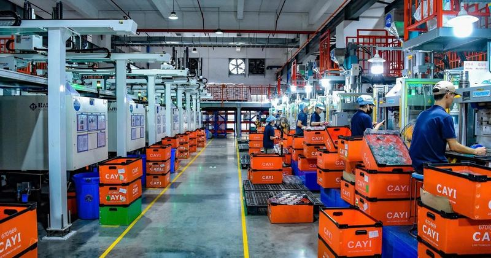
⚡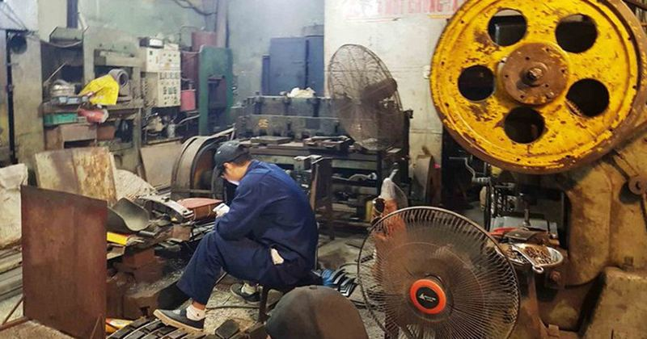
⚡Thủ tục xác định dự án sử dụng công nghệ lạc hậu, tiềm ẩn nguy cơ ô nhiễm môi trường
Quyết định số 49/2026/QĐ-TTg quy định trình tự, thủ tục xác định dự án sử dụng công nghệ lạc hậu, nguy cơ gây ô nhiễm môi trường Quyết định này quy định hồ sơ, trình tự, thủ tục xác định dự án đầu tư sử dụng công nghệ lạ
🔥
🔥
🔥
Bắt người phụ nữ lừa đảo 1,8 tỉ đồng bằng chiêu vay tiền đáo hạn ngân hàng
Ngày 3.11, thông tin từ Công an tỉnh Quảng Ngãi cho biết Phòng Cảnh sát hình sự đã thi hành lệnh bắt tạm giam và lệnh khám xét chỗ ở đối với bị can Nguyễn Thị Thoa (40 tuổi, trú xã Ngọk Bay, Quảng Ngãi) để điều tra về hà
🔥
🔥
🔥
Tin nhắn cuối cùng của nữ cơ phó Learjet 60 gửi bạn trai trước khi gặp nạn
Tin nhắn cuối cùng của nữ cơ phó Learjet 60 gửi bạn trai trước khi gặp nạn Theo Kông Anh/VTC News | 03/11/2026 17:36 PM | Xã hội Theo dõi Cafebiz.vn trên Nữ cơ phó Nathalia Gadelha Filgueiras nhắn tin cho bạn trai chỉ và
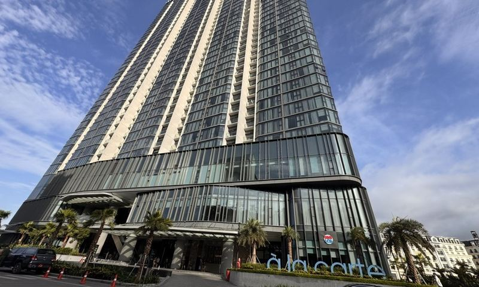
🔥
🔥
Nghiên cứu Singapore phát hiện điều kỳ lạ về 8 tỷ phú USD Việt Nam: Trái ngược hoàn toàn với 4 nước Đông Nam Á
Nghiên cứu Singapore phát hiện điều kỳ lạ về 8 tỷ phú USD Việt Nam: Trái ngược hoàn toàn với 4 nước Đông Nam Á Theo Linh Linh | 03/11/2026 17:15 PM | Kinh doanh Theo dõi Cafebiz.vn trên Trong khi 26/32 vị trí trong nhóm
🔥
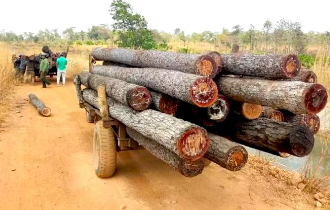
🔥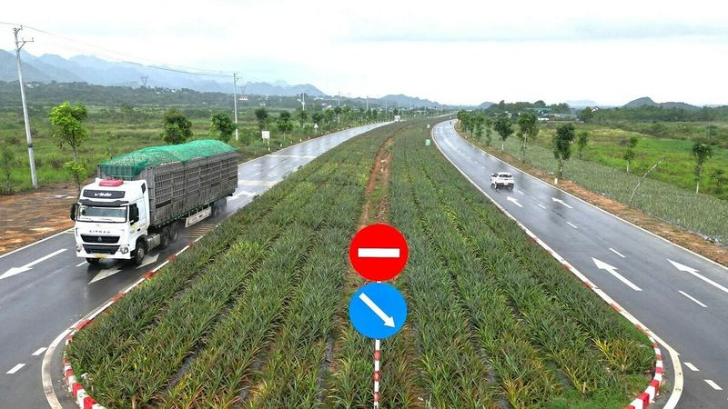
🔥
🔥
Kế hoạch triển khai thi hành Luật sửa đổi, bổ sung một số điều của 09 luật về quân sự, quốc phòng
Luật sửa đổi, bổ sung một số điều của 09 luật về quân sự, quốc phòng được Quốc hội khóa XVI, Kỳ họp không thường lệ thứ Nhất thông qua ngày 23/8/2026, có hiệu lực thi hành từ ngày 01/9/2026. Mục đích của Kế hoạch nhằm bả
🔥
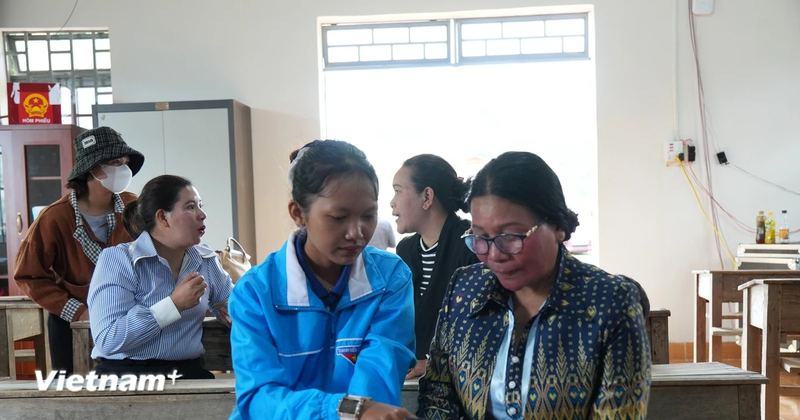
🔥Phát huy vai trò của cán bộ thôn “đưa” chuyển đổi số về buôn làng ở Lâm Đồng
Facebook Twitter Lưu bài viết Bản in Copy link Chuyển đổi số không chỉ dừng lại ở cơ quan hành chính mà còn được “đưa” về tận những buôn làng ở xã vùng sâu Tà Năng (Lâm Đồng). Đây là kết quả của việc phát huy vai trò của
🔥
🔥
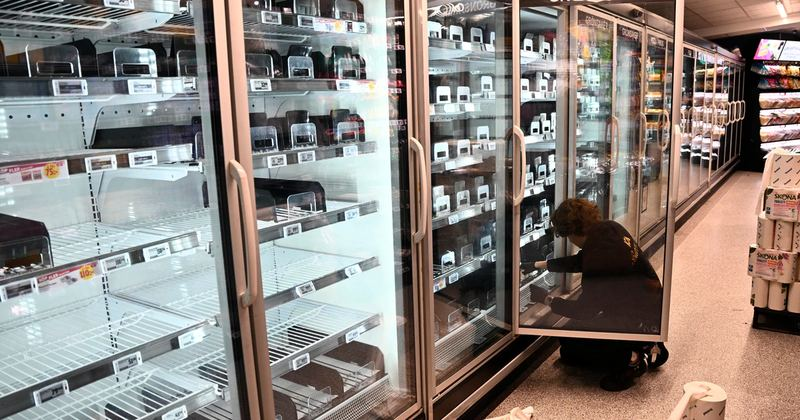
🔥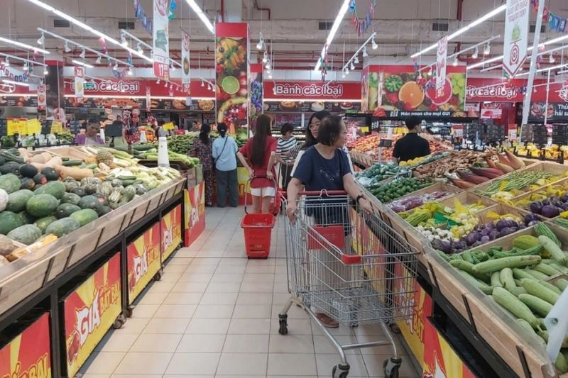
🔥Tiền lương, tiền công giữ vai trò quan trọng trong cải thiện thu nhập của hộ gia đình
Thu nhập của phần lớn hộ gia đình trong tháng 10/2026 được duy trì hoặc cải thiện so với cùng kỳ năm trước, chủ yếu nhờ tiền lương, tiền công và sản xuất. Tuy nhiên, do chi phí đầu vào sản xuất tăng, quy mô sản xuất giảm
🔥
🔥
Kỷ luật nhiều Đảng viên sai phạm trong kỳ thi tốt nghiệp tại Trường THPT Lê Trực
Ủy ban Kiểm tra Tỉnh ủy Quảng Trị nhận thấy, Đảng ủy Trường THPT Lê Trực nhiệm kỳ 2025-2030 và một số tổ chức đảng đã có vi phạm, khuyết điểm trong lãnh đạo, chỉ đạo, giáo dục, rèn luyện cán bộ, đảng viên, giáo viên tron
🔥
🔥
Lâm Đồng: Hơn 98% hộ dân đồng ý điều chỉnh địa giới hành chính với TP Đồng Nai
Lâm Đồng: Hơn 98% hộ dân đồng ý điều chỉnh địa giới hành chính với TP Đồng Nai Nhật Lê | 03/11/2026 15:57 PM | Kinh doanh Theo dõi Cafebiz.vn trên UBND tỉnh Lâm Đồng vừa báo cáo kết quả lấy ý kiến nhân dân và kết quả họp
🔥
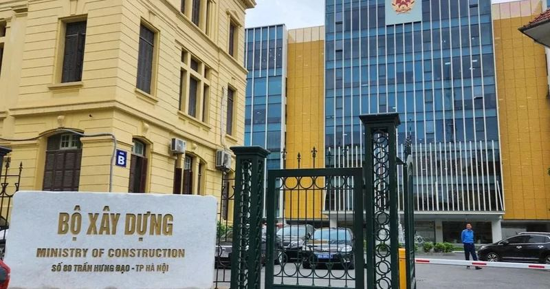
🔥
🔥
Thuê 5 ô tô của chủ doanh nghiệp, người phụ nữ đem 2 chiếc đi bán và cầm cố
Ngày 3/11, TAND TPHCM tuyên phạt bị cáo Đinh Thị Liễu (53 tuổi, ngụ TPHCM) 12 năm tù về tội “Lạm dụng tín nhiệm chiếm đoạt tài sản”; bị cáo Trần Thị Dung (59 tuổi, ngụ phường Chánh Hưng, TPHCM) 9 năm tù và Tạ Minh Tùng (
🔥
🔥
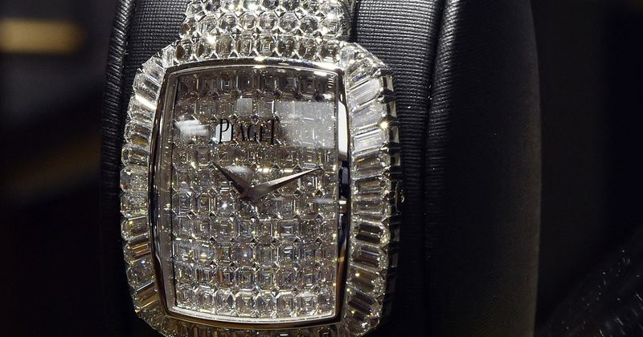
🔥
🔥
🔥
Tất cả người dùng Samsung cần phải biết những điều sau khi sử dụng điện thoại trong lúc lái xe
Tất cả người dùng Samsung cần phải biết những điều sau khi sử dụng điện thoại trong lúc lái xe Theo Thùy Anh | 03/11/2026 14:42 PM | Công nghệ Theo dõi Cafebiz.vn trên Một vài thao tác đã có thể giúp ích rất nhiều. Nhiều
🔥
🔥
Chốt khung giá phát điện cao nhất 2.230,51 đồng/kWh cho nhà máy điện than dưới 200MW
Theo Quyết định số 2887 ngày 30.10.2026 do Thứ trưởng Bộ Công thương Trương Thanh Hoài ký ban hành, khung giá phát điện năm 2026 áp dụng đối với loại hình nhà máy nhiệt điện than có công suất dưới 200 MW được xác định từ
🔥
Vụ Mr Pips: Phó Đức Nam khai tiền khách hàng thua lỗ là lợi nhuận của sàn
TIN MỚI Sáng 2/11, phiên tòa xét xử sơ thẩm 188 bị cáo trong vụ án "Lừa đảo chiếm đoạt tài sản; Rửa tiền; Chứa chấp hoặc tiêu thụ tài sản do người khác phạm tội mà có; Trốn thuế", xảy ra tại Hà Nội và một số tỉnh, thành
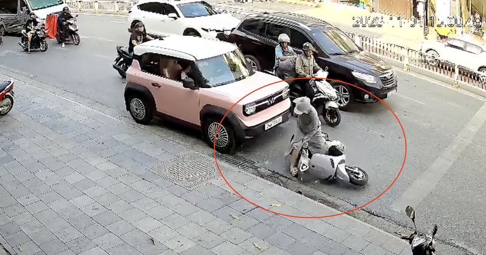
🔥Công an vào cuộc vụ nữ tài xế ô tô chèn ép, tông đổ xe máy của phụ nữ mang thai
Tài xế ô tô tông đổ xe máy của người phụ nữ mang bầu khi đang dừng chờ đèn đỏ - Ảnh cắt từ clip Trao đổi với Tuổi Trẻ trưa 3-11, một lãnh đạo UBND phường Lào Cai (tỉnh Lào Cai) cho biết đơn vị đã giao công an phường mời
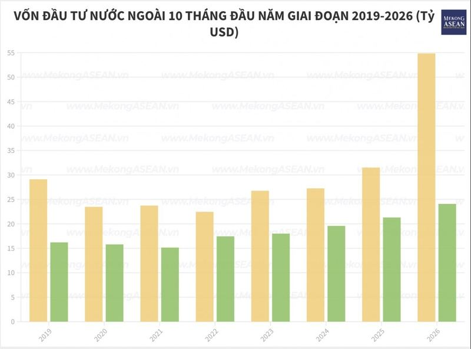
🔥
🔥
🔥
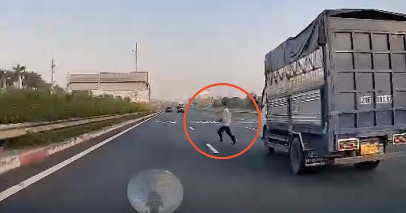
🔥Tài xế ô tô có phải chịu trách nhiệm với tai nạn khi người đi bộ bất ngờ băng qua cao tốc?
Người đàn ông chạy băng qua đường cao tốc - Ảnh: D.C. Tai nạn xảy ra sáng 2-11 trên cao tốc Pháp Vân - Cầu Giẽ, đoạn qua xã Hồng Vân, Hà Nội, theo hướng Ninh Bình - Hà Nội. Thời điểm này, một ô tô con đang lưu thông trên
🔥
Đầu tư bất động sản khách sạn: Tìm thêm giá trị ngoài tăng trưởng doanh thu
Tuy nhiên, sức hấp dẫn của phân khúc này không chỉ phụ thuộc vào tiềm năng tăng doanh thu, mà còn ở hiệu quả vận hành, khả năng tạo lợi nhuận và dư địa gia tăng giá trị tài sản trong trung và dài hạn. Khả năng thích ứng
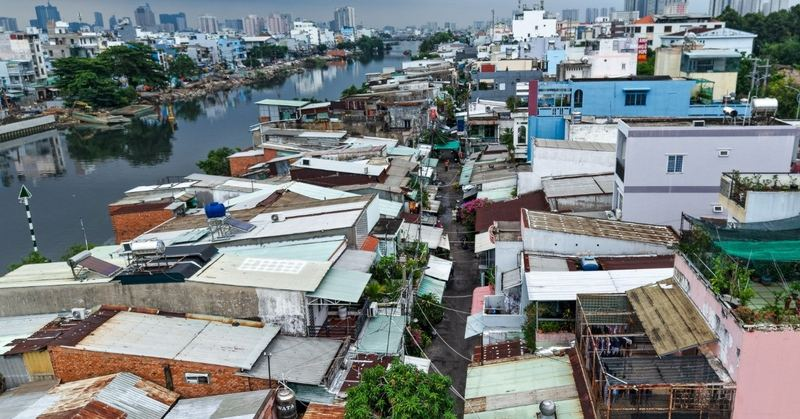
🔥TPHCM tăng tốc thủ tục giải phóng mặt bằng để triển khai 2 dự án chỉnh trang đô thị trọng điểm
UBND TPHCM vừa ban hành kế hoạch triển khai công tác bồi thường, hỗ trợ, tái định cư để thu hồi đất thực hiện hai dự án hạ tầng và chỉnh trang đô thị tại khu vực phía Nam. Thành phố yêu cầu các đơn vị liên quan hoàn thàn
🔥
Cận cảnh hai cây nghìn tỷ cầu vượt sông Hồng trên Vành đai 4 đang dần thành hình
TIN MỚI Cận cảnh hai công trình cầu vượt sông Hồng trên tuyến Vành đai 4. Cầu Mễ Sở bắc qua sông Hồng, kết nối khu vực Hồng Vân (Hà Nội) với Văn Giang (Hưng Yên). Cầu Mễ Sở và đường dẫn dài gần 14km, có điểm đầu tại nút
🔥
Thế Giới Di Động, GELEX và Hoàng Anh Gia Lai bất ngờ ghi thêm hàng nghìn tỷ đồng lợi nhuận chưa phân phối nhưng không đến từ kinh doanh: Nguồn gốc từ đâu?
Thế Giới Di Động, GELEX và Hoàng Anh Gia Lai bất ngờ ghi thêm hàng nghìn tỷ đồng lợi nhuận chưa phân phối nhưng không đến từ kinh doanh: Nguồn gốc từ đâu? Theo Anh Khôi | 03/11/2026 06:59 AM | Kinh doanh Theo dõi Cafebiz
🔥
“Bị cáo đi tù là chắc rồi ạ” và 9 lời khai gây chú ý ở phiên tòa vụ Mr Pips
Sau một tuần xét xử Phó Đức Nam (32 tuổi, tức Mr Pips), cùng 187 bị cáo, HĐXX đã kết thúc phần xét hỏi và chuyển sang tranh tụng. Tại tòa, lời khai của các bị cáo đã cho thấy cách thức lôi kéo nhà đầu tư, lợi ích của nhữ
🔥
Việt Nam có 1 tỷ phú từng làm nghề sửa ô tô thuê: Giờ đứng sau giải thưởng 50.000 USD ở Đường Lên Đỉnh Olympia
TIN MỚI Chung kết Đường Lên Đỉnh Olympia năm thứ 26 đã khép lại với chiến thắng thuộc về Đoàn Lê Anh Đức, học sinh Trường THPT chuyên Hà Nội - Amsterdam. Nam sinh đã vượt qua ba đối thủ Nguyễn Huy Quang Minh, Trần Võ Gia
🔥
🔥
Thói quen mang 2 bình xăng của tài xế công nghệ khiến triệu người vui lây
(Dân trí) - Một tài xế xe ôm công nghệ ở TPHCM giữ thói quen mang theo 2 bình xăng khi đi làm để giúp người đi đường gặp sự cố. Hành động nhỏ của anh nhận hơn 1,6 triệu lượt xem, ủng hộ từ cộng đồng mạng. Mạng xã hội mới
🔥
🔥
Tin tức sáng 3-11: Chủ tịch PNJ cho... PNJ vay 700 tỉ đồng, lãi suất 10%/năm
Ảnh minh họa Chủ tịch PNJ cho... PNJ vay 700 tỉ đồng, lãi suất 10%/năm Theo tin tức từ thuyết minh báo cáo tài chính hợp nhất quý 3-2026, tại ngày 30-9, Công ty CP Vàng bạc đá quý Phú Nhuận (PNJ) ghi nhận dư nợ vay 700 t
🔥
🔥
Ngành chứng khoán trước vận hội mới: Vốn lớn hơn, cho vay mạnh hơn, cạnh tranh khốc liệt hơn
TIN MỚI Ngành chứng khoán đang trong một giai đoạn bản lề khi Việt Nam chính thức được nâng hạng lên thị trường mới nổi thứ cấp của FTSE Russell. Thị trường vốn ngày càng phát triển đòi hỏi các công ty chứng khoán không
🔥
⚡
Vì sao nhiều quốc gia khuyến cáo người dân chuẩn bị 'thực phẩm sinh tồn'?
Vì sao nhiều quốc gia khuyến cáo người dân chuẩn bị 'thực phẩm sinh tồn'? Theo Phương Anh | 03/11/2026 21:00 PM | Xã hội Theo dõi Cafebiz.vn trên Trước những căng thẳng địa chính trị gia tăng, thời tiết cực đoan và nguy
⚡
⚡
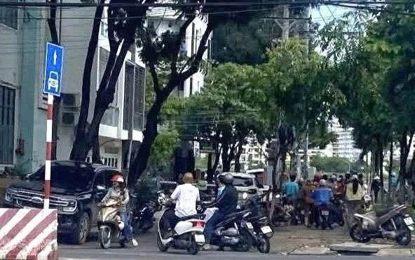
⚡Sau khi sát hại người tình, người đàn ông bị rơi ngã khi đu dây cáp trốn khỏi khách sạn
Chiều 3/11, các đơn vị chức năng đã hoàn tất công tác khám nghiệm hiện trường và khám nghiệm tử thi trong vụ người phụ nữ bị đâm nhiều nhát bằng kéo, tử vong tại một khách sạn trên đường Ngọc Hân Công Chúa ( phường Nam N
⚡
⚡
Nâng cao chuyển đổi số trong công tác phòng cháy, chữa cháy cho nhân dân
Người dân hưởng ứng tham gia Mini App "Tư vấn an toàn phòng cháy, chữa cháy t rong quản lý, sử dụng điện" Theo thống kê mới nhất của Công an thành phố Hà Nội, trong 154 vụ cháy trên địa bàn thành phố ở quý III năm nay, n
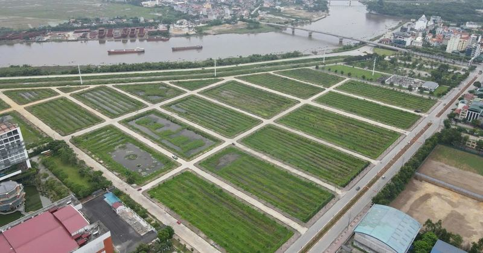
⚡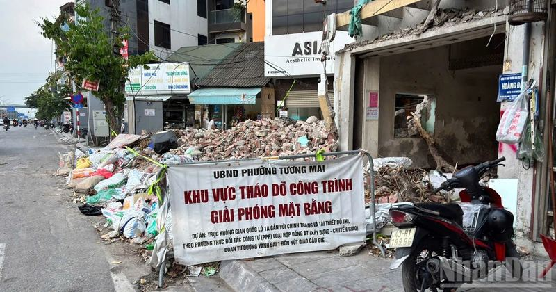
⚡
⚡
Bệnh viện Trung ương Huế cơ sở 2 thực hiện thành công ca ghép thận đầu tiên
Dấu mốc mới trong phát triển kỹ thuật chuyên sâu Bệnh viện Trung ương Huế cơ sở 2 vừa ghi dấu mốc quan trọng trong hoạt động khám, chữa bệnh khi lần đầu tiên thực hiện thành công ca ghép thận, với sự hỗ trợ trực tiếp của
 ⚡
⚡
Bulgaria khẩn trương xác minh nguy cơ đánh bom máy bay tại sân bay Sofia
Facebook Twitter Lưu bài viết Bản in Copy link Ngày 3/11, các đơn vị chống khủng bố Bulgaria đã tiến hành kiểm tra một máy bay tại sân bay Sofia để xác minh nguy cơ có thiết bị nổ trên máy bay, sau khi nhiều cơ quan nhận
⚡
⚡
Chủ tịch Quốc hội Trần Thanh Mẫn hội đàm với Chủ tịch Quốc hội Lào Sonexay Siphandone
Chủ tịch Quốc hội Trần Thanh Mẫn nhiệt liệt chào mừng Chủ tịch Quốc hội Sonexay Siphandone thăm chính thức Việt Nam; chúc mừng đồng chí Sonexay Siphandone được Đảng, Nhà nước và nhân dân Lào tín nhiệm bầu giữ chức vụ Chủ
⚡
⚡
Tiền đạo giải hạng Nhì Tây Ban Nha qua đời vì hứng chịu cú đạp của đối thủ
Tiền đạo giải hạng Nhì Tây Ban Nha qua đời vì hứng chịu cú đạp của đối thủ Theo Đặng Lai | 03/11/2026 20:20 PM | Sống Theo dõi Cafebiz.vn trên Tenerife, đội bóng đang thi đấu tại giải hạng Nhì Tây Ban Nha, vừa đưa ra một
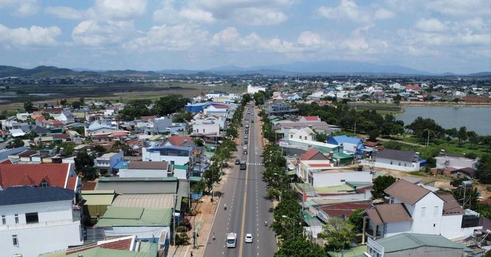
⚡
⚡
⚡
Chủ tịch Quốc hội Trần Thanh Mẫn hội đàm với Chủ tịch Quốc hội Lào Sonexay Siphandone
Chủ tịch Quốc hội Trần Thanh Mẫn nhiệt liệt chào mừng Chủ tịch Quốc hội Sonexay Siphandone thăm chính thức Việt Nam; chúc mừng đồng chí Sonexay Siphandone được Đảng, Nhà nước và nhân dân Lào tín nhiệm bầu giữ chức vụ Chủ
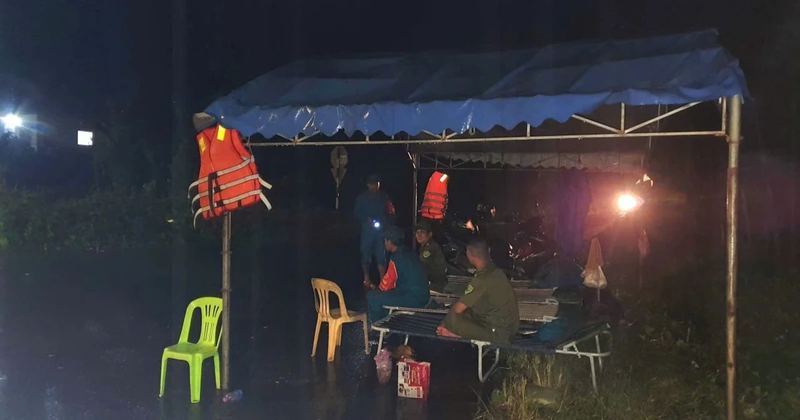
⚡Cảnh sát dầm mưa suốt đêm truy bắt phạm nhân cuối cùng trong vụ trốn Trại giam A2
Tối 3/11, các đơn vị nghiệp vụ của Bộ Công an và Công an tỉnh Khánh Hòa tiếp tục triển khai lực lượng truy bắt Hồ Văn Tình, phạm nhân cuối cùng trong nhóm 4 người trốn khỏi Trại giam A2 . Hồ Văn Tình hiện được xác định l
⚡
⚡
 ⚡
⚡
Ngày 3/11, gửi 200 triệu đồng kỳ hạn 12 tháng tại MB, VPBank, Techcombank, Sacombank, SHB, HDBank và ACB nhận được bao nhiêu tiền lãi?
Ngày 3/11, gửi 200 triệu đồng kỳ hạn 12 tháng tại MB, VPBank, Techcombank, Sacombank, SHB, HDBank và ACB nhận được bao nhiêu tiền lãi? Theo Mạnh Đức | 03/11/2026 19:45 PM | Kinh doanh Theo dõi Cafebiz.vn trên Với khoản t
⚡
[Video] Thời sự 24h ngày 3/11/2026: Đại biểu Quốc hội đề xuất chặn độc quyền kéo dài để người bệnh không phải mua thuốc giá đắt
Tiếp tục chương trình Kỳ họp thứ hai, Quốc hội khóa XVI, sáng 3/11, Quốc hội thảo luận tại hội trường về dự án Luật sửa đổi, bổ sung một số điều của Luật Sở hữu trí tuệ. Các đại biểu nêu ý kiến về việc duy trì thời gian
⚡
⚡
⚡
Chủ quán cơm ‘chặt chém’ đăng lời xin lỗi khách hàng và người dân Quảng Ngãi
Chủ quán cơm ‘chặt chém’ đăng lời xin lỗi khách hàng và người dân Quảng Ngãi Theo Nguyễn Ngọc | 03/11/2026 19:38 PM | Xã hội Theo dõi Cafebiz.vn trên Quán cơm Bà Chín (xã Nghĩa Giang, tỉnh Quảng Ngãi) bị xử phạt hơn 8,2
⚡
⚡
Ngày 3/11, gửi 200 triệu đồng kỳ hạn 12 tháng tại MB, VPBank, Techcombank, Sacombank, SHB, HDBank và ACB nhận được bao nhiêu tiền lãi?
TIN MỚI Gửi tại quầy: VPBank có mức lãi suất cao nhất Theo biểu lãi suất áp dụng ngày 3/11, VPBank niêm yết lãi suất tiền gửi tại quầy kỳ hạn 12 tháng ở mức 6,4%/năm đối với khoản tiền dưới 1 tỷ đồng. Với 200 triệu đồng
⚡
⚡
⚡
Thường trực Ban Bí thư Trần Cẩm Tú tiếp Chủ tịch Quốc hội Lào Sonexay Siphandone
Việc nâng tầm quan hệ gắn kết chiến lược thể hiện tầm nhìn dài hạn Đồng chí Thường trực Ban Bí thư nhiệt liệt chào mừng đồng chí Sonexay Siphandone và Đoàn đại biểu cấp cao Quốc hội Lào; chúc mừng đồng chí Sonexay Siphan
⚡
🔥
⚡
Lịch thi đấu C1: Atletico Madrid đại chiến Bayern Munich, MU tiếp đón AS Roma
Tâm điểm loạt trận rạng sáng 4/11 là cuộc đối đầu giữa Atletico Madrid và Bayern Munich trên sân Metropolitano lúc 3 giờ. Đây là màn so tài đáng chú ý giữa hai đội bóng sở hữu lối chơi giàu tính cạnh tranh và có tham vọn
⚡
⚡
⚡
⚡
⚡
⚡
⚡
⚡
Thủ tướng Lê Minh Hưng hội kiến Chủ tịch Quốc hội Lào: Việt Nam luôn ưu tiên cao nhất cho quan hệ với Lào
Thủ tướng Lê Minh Hưng hội kiến Chủ tịch Quốc hội Lào - Ảnh: chinhphu.vn/Nhật Bắc Thay mặt Chính phủ và Nhân dân Việt Nam, Thủ tướng Chính phủ Lê Minh Hưng nhiệt liệt chào mừng Chủ tịch Quốc hội Sonexay Siphandone thăm c
⚡
⚡
Chủ tịch Quốc hội Trần Thanh Mẫn hội đàm với Chủ tịch Quốc hội Lào Sonexay Siphandone
Facebook Twitter Lưu bài viết Bản in Copy link Ngày 3/11, Lễ đón chính thức Chủ tịch Quốc hội Lào Sonexay Siphandone và Phu nhân đã diễn ra trọng thể tại Nhà Quốc hội với sự chủ trì của Chủ tịch Quốc hội Trần Thanh Mẫn v
⚡
Thường trực Ban Bí thư Trần Cẩm Tú tiếp Đoàn cán bộ cấp cao Đảng Nhân dân cách mạng Lào
T ạo nền tảng và động lực để hai nước tiếp tục phát triển trong giai đoạn mới Tại buổi tiếp, thay mặt Bộ Chính trị , Ban Bí thư Trung ương Đảng Cộng sản Việt Nam, đồng chí Trần Cẩm Tú nhiệt liệt chào mừng Đoàn cán bộ cấp
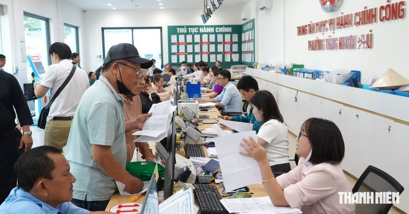
⚡
⚡
Tiền đạo giải hạng Nhì Tây Ban Nha qua đời vì hứng chịu cú đạp của đối thủ
Anh đã trút hơi thở cuối cùng sau một tai nạn kinh hoàng trên sân cỏ, để lại niềm tiếc thương vô hạn cho người hâm mộ . Bi kịch bắt nguồn từ trận đấu thuộc vòng 12 giải hạng Nhì diễn ra vào tối hôm qua (2/11), khi Teneri
⚡
'Trung tâm tài chính TP HCM không nên cạnh tranh trực tiếp với Singapore'
'Trung tâm tài chính TP HCM không nên cạnh tranh trực tiếp với Singapore' Trưởng đại diện khu vực châu Á - Thái Bình Dương Viện Tài chính Quốc tế cho rằng Trung tâm tài chính TP HCM nên đóng vai trò bổ trợ trong hệ sinh
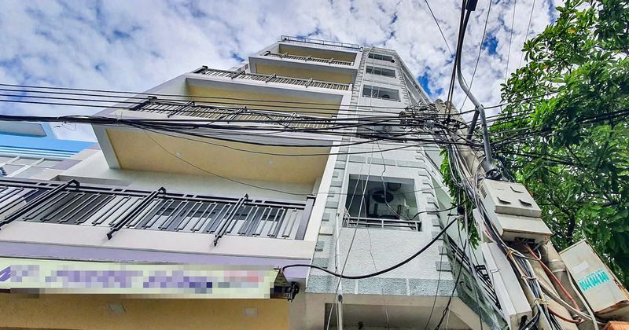
⚡Vụ 1 phụ nữ tử vong trong khách sạn: Nghi phạm sát hại người tình rồi đu dây cáp bỏ trốn
Ông P. có ý định đu dây cáp xuống đất bỏ trốn, nhưng bị rơi từ độ cao khoảng 10m - Ảnh: XUÂN HOÁT Chiều 3-11, Cơ quan Cảnh sát điều tra Công an tỉnh Khánh Hòa cho biết bước đầu xác định người đàn ông bị thương trong vụ m
⚡
Phó Thủ tướng Lê Tiến Châu: Con người luôn là chủ thể định hướng giá trị và kiểm soát công nghệ
Với chủ đề “Tái phân bổ trí tuệ: Chuyển đổi giáo dục vì tương lai hợp tác giữa con người và trí tuệ nhân tạo”, hội thảo quy tụ gần 400 đại biểu là lãnh đạo các trường đại học, nhà khoa học, chuyên gia và đại diện các tổ
Vụ clip nhạy cảm bắt ghen trên ô tô: Luật sư cảnh báo việc đăng tải, chia sẻ có thể bị xử phạt
Mới đây, trên mạng xã hội lan truyền đoạn clip ghi lại cảnh nhạy cảm giữa đôi nam nữ trong xe ô tô khi bị bắt ghen. Sau đó clip kèm thông tin được nhiều tài khoản cũng như hội nhóm chia sẻ gây xôn xao dư luận. Trao đổi v
Tác giả Việt hồi sinh ứng dụng Messenger trên máy tính, cho phép đổi sang giao diện Zalo và WhatsApp
Tác giả Việt hồi sinh ứng dụng Messenger trên máy tính, cho phép đổi sang giao diện Zalo và WhatsApp Theo Đức Khương | 03/11/2026 15:57 PM | Công nghệ Theo dõi Cafebiz.vn trên Sau khi Meta khai tử ứng dụng Messenger trên
🔥
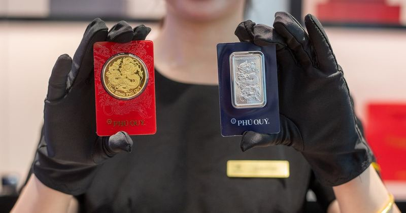
🔥Giá vàng bạc 3/11 tiếp tục tăng mạnh: Doji, Phú Quý, SJC, BTMH đồng loạt "lấy lại những gì đã mất"
TIN MỚI Sau chuỗi ngày biến động sụt giảm, giá vàng trong nước hôm nay đồng loạt quay đầu bật tăng mạnh từ 1,2 đến 1,5 triệu đồng mỗi lượng. Cùng lúc đó, giá vàng thế giới vững vàng áp sát cột mốc 3.950 USD/ounce. Bên cạ
🔥
Vốn đầu tư nước ngoài vào Việt Nam 10 tháng lập kỷ lục cao nhất từ năm 2009 đến nay
Dòng vốn đầu tư nước ngoài vào Việt Nam tiếp tục đà công phá chinh phục các dấu mốc mới với tổng vốn đăng ký 10 tháng năm 2026 đạt 54,85 tỷ USD, tăng 74% so với cùng kỳ năm trước, lập kỷ lục cao nhất trong vòng 20 năm tr
🔥
🔥
🔥
Hoàn thiện cơ chế định giá đất để giảm áp lực lên thị trường bất động sản
Việc áp dụng bảng giá đất kết hợp hệ số K được kỳ vọng tháo gỡ điểm nghẽn trong định giá đất, tuy nhiên, cơ chế mới cần kiểm soát nghĩa vụ tài chính, bảo đảm minh bạch và ổn định thị trường bất động sản. Cơ chế áp dụng b
🔥
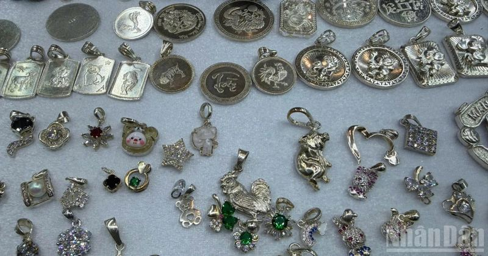
🔥
🔥
Công an sẽ điều tra nếu phát hiện tài khoản ngân hàng có giao dịch nhận và chuyển tiền như sau
Công an sẽ điều tra nếu phát hiện tài khoản ngân hàng có giao dịch nhận và chuyển tiền như sau Theo Huỳnh Duy | 03/11/2026 09:56 AM | Công nghệ Theo dõi Cafebiz.vn trên Những giao dịch nhận, chuyển tiền này có thể khiến
🔥
🔥
🔥
Xe container tông trúng hai người đàn ông đi bộ, một nạn nhân tử vong tại chỗ
Ngày 3/11, nguồn tin của PV VietNamNet cho biết, Công an xã Quỳnh Phú đang phối hợp với các lực lượng chức năng tỉnh Nghệ An bảo vệ hiện trường, điều tra nguyên nhân vụ tai nạn giao thông khiến 2 người thương vong. Hiện
🔥
Chứng khoán 3-11: VN-Index có thể lùi về 1.680 điểm, ưu tiên giữ tiền mặt?
VN-Index giảm mạnh trong phiên đầu tuần - Ảnh: QUANG ĐỊNH Thị trường chứng khoán tiếp tục điều chỉnh trong phiên đầu tuần 2-11, với áp lực bán gia tăng trên diện rộng. VN-Index giảm 31,90 điểm (-1,8%), xuống 1.710,72 điể
🔥
🔥
Tên lửa Iskander-M Mach 7, quỹ đạo quasi-ballistic, ‘ác mộng’ với mọi hệ thống phòng không
‘Thảm bay’ Air Cover: Công nghệ ngụy trang tinh vi chưa từng có, thay đổi cục diện chiến tranh định vị Công nghệ ‘thảm bay’ Air Cover của Mỹ vừa ra mắt đã gây kinh ngạc: tự lơ lửng trên không, vô hiệu hóa hoàn toàn camer
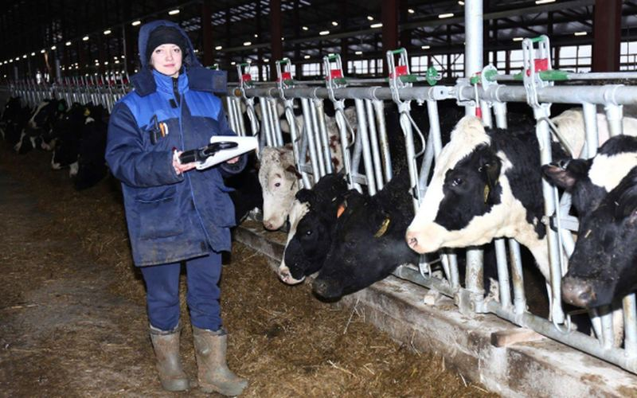
🔥Việt Nam có một ‘nữ đại gia' sang Nga xây dựng đế chế sữa: Xây nhà máy 1.000 tấn/ngày, làm trang trại nuôi 12.000 con bò
TIN MỚI Từ một doanh nghiệp phát triển ngành sữa trong nước, Tập đoàn TH đang mở rộng hoạt động sang thị trường Nga thông qua mô hình kết hợp trang trại bò sữa, vùng nguyên liệu và nhà máy chế biến. Dự án được triển khai
🔥
🔥
🔥
🔥
🔥
Tether bất ngờ giảm nắm giữ vàng lần đầu sau gần 3 năm, nhưng một “kho vàng” khác lại phình to
TIN MỚI Sau thời gian dài nổi lên như một trong những tổ chức tư nhân gom vàng mạnh nhất thế giới, Tether vừa ghi nhận diễn biến trái ngược với xu hướng tích lũy trước đó. Dữ liệu cho thấy lượng vàng vật chất thuộc danh
⚡
Vụ clip nhạy cảm bắt ghen trên ô tô: Luật sư cảnh báo việc đăng tải, chia sẻ có thể bị xử phạt
Vụ clip nhạy cảm bắt ghen trên ô tô: Luật sư cảnh báo việc đăng tải, chia sẻ có thể bị xử phạt Theo Thanh Hà | 03/11/2026 20:33 PM | Xã hội Theo dõi Cafebiz.vn trên Đoạn clip nhạy cảm khi bắt ghen ghi lại trong xe ô tô s
⚡
⚡
⚡
Hà Nội điều chỉnh tổ chức giao thông xe đạp, xe máy trên đường Nguyễn Chí Thanh
Facebook Twitter Lưu bài viết Bản in Copy link Ngày 3/11, Sở Xây dựng Hà Nội cho biết sẽ thực hiện điều chỉnh tổ chức giao thông cho các phương tiện xe đạp, xe máy đi qua khu vực nhà ga S9 trên đường Kim Mã thuộc dự án t
⚡
Hơn 800 huấn luyện viên, vận động viên Quân đội sẵn sàng tranh tài tại Đại hội Thể thao toàn quốc
Đoàn tuyển thủ Quân đội có tổng quân số 810 đồng chí, tham gia thi đấu 32 trong tổng số 48 môn thể thao của đại hội, gồm 19 môn Olympic, 4 môn ASIAD và 9 môn SEA Games, thể thao dân tộc. Tính đến ngày 2/11, sau khi tham
⚡
Công bố Chip VGC v1.0 - bước đột phá công nghệ bán dẫn bảo mật Make in Vietnam
Sự kiện đánh dấu bước tiến lịch sử của ngành vi mạch bán dẫn và an ninh mật mã quốc gia, khẳng định trí tuệ Việt Nam trong việc chủ động bảo vệ chủ quyền số quốc gia. Đại tướng Phan Văn Giang, Ủy viên Bộ Chính trị, Phó T
⚡
Trước khi giám đốc bị bắt, Trung tâm Anh ngữ Thiên Lập Nhân từng bị xử lý ra sao?
Thiên Lập Nhân từng có 3 cơ sở... nhiều lần bị kiểm tra, chấn chỉnh Ngày 3.11, Sở Giáo dục và Đào tạo thành phố Đà Nẵng thông tin về công tác quản lý Nhà nước đối với Trung tâm Anh ngữ Thiên Lập Nhân do Trương Văn Thiên
⚡
⚡
Đề xuất phạt một doanh nghiệp 180 triệu đồng vì vi phạm về quảng cáo sữa
Trước đó, tiếp nhận phản ánh từ Ủy ban Cạnh tranh quốc gia (Bộ Công thương) và công văn của Cục Quản lý và Phát triển thị trường trong nước, Chi cục Quản lý thị trường TPHCM giao Đội Quản lý thị trường số 14 xác minh một
Công an xã Tân An Hội xác minh vụ việc trong các clip lan truyền trên mạng xã hội
Công an xã Tân An Hội xác minh vụ việc trong các clip lan truyền trên mạng xã hội Theo NGUYỄN TÂN - SONG MAI | 03/11/2026 17:43 PM | Xã hội Theo dõi Cafebiz.vn trên Ngày 3-11, theo lãnh đạo UBND xã Tân An Hội (TPHCM), cô
Đa dạng hóa thị trường xuất nhập khẩu, nâng cao hiệu quả quản trị thương mại
Facebook Twitter Lưu bài viết Bản in Copy link Ngày 3/11, chủ trì cuộc họp với các bộ, ngành về dự thảo Nghị quyết của Chính phủ liên quan đến thúc đẩy thương mại cân bằng, phòng ngừa nguy cơ dư thừa công suất, ngăn chặn
Phó Thủ tướng Thường trực Phạm Gia Túc: Hoàn thiện các giải pháp quản trị thương mại, đa dạng hóa thị trường xuất nhập khẩu
Phó Thủ tướng Thường trực Chính phủ Phạm Gia Túc chủ trì cuộc họp - Ảnh: chinhphu.vn/Phương Nguyên Báo cáo tại cuộc họp, Thứ trưởng Bộ Công Thương Lương Hoàng Thái cho biết, thực hiện chỉ đạo của Thủ tướng Chính phủ, Bộ
VinFast VF 9 thu hút doanh nhân bằng thiết kế sang trọng, tiện nghi cao cấp
Thiết kế Ý, khoang ghế sang trọng cho doanh nhân VinFast VF 9 sở hữu vẻ ngoài bề thế với chiều dài 5.119 mm, được chắp bút bởi studio thiết kế Pininfarina của Ý. Cảm hứng từ du thuyền thể hiện ở phần nóc nghiêng dần về p
Chuyển đổi số tài chính không chỉ là thêm dịch vụ mới, mà phải vận hành an toàn
Chuyển đổi số giúp các giao dịch tài chính nhanh hơn, thuận tiện hơn nhưng cũng làm gia tăng rủi ro về dữ liệu, an ninh mạng và gián đoạn dịch vụ. Các chuyên gia cho rằng, bên cạnh phát triển sản phẩm mới, các tổ chức tà
Thực trạng quản trị rủi ro doanh nghiệp tại Việt Nam trong bối cảnh chuyển đổi số và phát triển
Quản trị rủi ro doanh nghiệp trên thế giới đang chuyển dịch từ mô hình truyền thống theo từng bộ phận riêng lẻ sang mô hình tích hợp, chủ động và tạo lập giá trị, với 3 xu hướng nổi bật: chuyển đổi số và quản trị rủi ro
Đề xuất ứng dụng để tỷ phú trả nợ hộ, ông Elon Musk nói gì: "Xin lỗi tôi không nói vậy"
Đề xuất ứng dụng để tỷ phú trả nợ hộ, ông Elon Musk nói gì: "Xin lỗi tôi không nói vậy" Theo Nguyễn Hải | 03/11/2026 15:55 PM | Công nghệ Theo dõi Cafebiz.vn trên Hóa ra tất cả chỉ là một cú lừa, khởi đầu từ một dòng twe
Bộ Xây dựng đề xuất đầu tư thiết bị phát hiện, áp chế UAV xâm nhập sân bay
Facebook Twitter Lưu bài viết Bản in Copy link Cùng với việc hoàn thiện quy trình phối hợp xử lý, tăng cường tuyên truyền, Bộ Xây dựng kiến nghị các cơ quan chức năng đầu tư thiết bị phát hiện, áp chế thiết bị bay không
Ninh Bình đấu giá 360 lô đất 'vàng’, giá khởi điểm cao nhất 95 triệu đồng/m²
TIN MỚI Ngày 3/11, Phòng Nông nghiệp và Môi trường phường Hoa Lư công bố phương án, quy chế đấu giá quyền sử dụng đất đối với 360 lô đất ở liền kề thuộc khu dân cư mới phía Đông Nhà thi đấu Thể dục thể thao tỉnh Ninh Bìn
🔥
🔥
🔥
🔥
🔥
🔥
🔥
🔥
Làm rõ vụ đe dọa tài xế xe ôm hỗ trợ vá xe cho người đi đường ở Thành phố Hồ Chí Minh
Bản tin 60s ngày 3/11/2026 gồm những nội dung sau: Làm rõ vụ đe dọa tài xế xe ôm hỗ trợ vá xe cho người đi đường ở Thành phố Hồ Chí Minh. Bắt được phạm nhân thứ ba trong vụ trốn Trại giam A2 sau hơn 12 ngày lẩn trốn. Tri
🔥
🔥
Khởi tố 7 bị can trong vụ dùng xuồng máy trộm, cướp tài sản trên sông Đồng Nai
Ngày 3-11, Phòng Tham mưu Công an TPHCM thông tin, Cơ quan Cảnh sát điều tra (CSĐT) Công an TPHCM đã khởi tố vụ án, khởi tố bị can và ra lệnh bắt 7 người để điều tra về các hành vi "Trộm cắp tài sản", "Cướp tài sản" và "
🔥
AI Arena: Viet Nam 2026 – 'sân chơi' vận dụng AI giải quyết các bài toán thực tiễn
Phó Thủ tướng Chính phủ Lê Tiến Châu cùng các đại biểu dự sự kiện - Ảnh: chinhphu.vn/Thu Sa AI Arena: Viet Nam 2026 được xây dựng từ ý tưởng tạo nên một "đấu trường AI", nơi sinh viên vận dụng AI tạo sinh để giải quyết c
🔥
🔥
🔥
Hà Nội: Cưỡng chế thu hồi 290,5m² đất ở Quảng Oai để thực hiện dự án hồ điều hòa
Ngày 3/11, UBND xã Quảng Oai (Hà Nội) phối hợp với các lực lượng chức năng tổ chức cưỡng chế thu hồi 290,5m² đất tại thôn Tây Đằng để giải phóng mặt bằng, phục vụ dự án cải tạo cảnh quan, hạ tầng kỹ thuật và xây dựng hệ
🔥
🔥
Lãnh đạo Saigontourist Group gặp gỡ với Đại sứ Việt Nam tại Anh nhân dịp WTM London 2026
Tổng Giám đốc Saigontourist Group Cao Văn Chóng trân trọng cảm ơn Đại sứ Đỗ Minh Hùng đã dành thời gian tiếp đón đoàn một cách trọng thị. Ông Cao Văn Chóng đã gửi lời chúc sức khỏe đến tập thể cán bộ Đại sứ quán, trong n
🔥
🔥
🔥
🔥
🔥
🔥
🔥
🔥
🔥
Thế giới sáng 3-11: Trung Quốc thúc đẩy đối thoại hòa bình tại Trung Đông, châu Phi
Trung Quốc thúc đẩy đối thoại tại Trung Đông, châu Phi Bộ Ngoại giao Trung Quốc thông báo các đặc phái viên và đại diện đặc biệt của nước này sẽ công du một số nước Trung Đông và châu Phi trong tháng 11 nhằm thúc đẩy đối
🔥
🔥
🔥
🔥
Người mẹ suy thận giai đoạn cuối, 6 năm sống xa 2 con để duy trì sự sống
6 năm bám trụ ở "xóm chạy thận" Tối muộn cuối tháng 10, trong căn phòng trọ chỉ rộng chừng 7m² tại “xóm chạy thận”, đối diện cổng Bệnh viện Đa khoa TP Vinh (cơ sở 2), chị Chu Thị Lợi (39 tuổi) nằm co ro trên giường. Ngồi
🔥
🔥
 🔥
🔥
🔥
🔥
🔥
🔥
Lãnh tụ Tối cao Iran cho phép chính phủ đàm phán chấm dứt xung đột với Mỹ
(Dân trí) - Lãnh tụ Tối cao Iran Mojtaba Khamenei đã trao "thẩm quyền" cho chính phủ tiến hành đàm phán với Mỹ nhằm chấm dứt cuộc chiến ở Trung Đông. Lãnh tụ Tối cao Iran Mojtaba Khamenei (Ảnh: Reuters). "Chúng tôi đang
🔥
🔥
🔥
Chuyển hộ khẩu theo chồng, con gái không được chia 1.500m2 đất mẹ khai hoang
Mẹ khai hoang đất, hai chị em phát sinh tranh chấp Theo trình bày của bà H. (ngụ TP Đà Nẵng), bố mẹ bà có hai người con, gồm bà và em trai S. Sau khi bố qua đời, mẹ đưa hai chị em về quê ngoại, thuộc tỉnh Quảng Nam trước
🔥
🔥
🔥
Lần đầu gặp mẹ vợ tương lai, tôi lập tức nghĩ đến chuyện chia tay bạn gái
(Dân trí) - Tôi đang nghĩ có nên bàn bạc trước với bạn gái về tương lai hay không. Tôi chỉ sợ, với tính cách cô ấy, nếu nói ra chuyện này, tôi chưa bỏ cô ấy, cô ấy đã bỏ tôi trước rồi. Tôi năm nay 29 tuổi, có công việc ổ
🔥
Thót tim với cảnh ghế đá bật ngửa đè lên 2 bé trai: Người lớn ở ngay gần vẫn không kịp trở tay
TIN MỚI Hai trẻ nhỏ bám vào ghế khiến ghế lật ngửa: Đừng nghĩ đồ to, nặng thì con không thể làm đổ “Đừng chủ quan chỉ vì chiếc ghế to, nặng mà nghĩ rằng nó sẽ không đổ” là lời cảnh báo đi kèm một đoạn video được chia sẻ
🔥
Chàng trai Việt "cưa đổ" cô mẫu Tây xinh như thiên thần trên Tà Xùa, chuyện 7 năm hôn nhân mà toàn là ấn tượng "ngủ trưa"
TIN MỚI Một đoạn video ghi lại cuộc trò chuyện của một cặp đôi vợ ngoại quốc, chồng Việt Nam nhân dịp kỷ niệm 7 năm gắn bó thu hút sự chú ý bởi những chia sẻ gần gũi, hài hước về cuộc sống hôn nhân. Không phải những lời
 🔥
🔥
Công an sẽ điều tra nếu phát hiện tài khoản ngân hàng có giao dịch nhận và chuyển tiền như sau
TIN MỚI Tài khoản ngân hàng được sử dụng để nhận, chuyển tiền hộ, hưởng hoa hồng đang trở thành một trong những phương thức được các đối tượng tội phạm lợi dụng để che giấu dòng tiền bất hợp pháp. Đáng chú ý, người đứng
⚡
⚡
⚡
Động thái tiếp theo của Chủ tịch Vũ Văn Tiền trong lĩnh vực giáo dục, liên quan đến khoản tiền 20 tỷ đồng
Động thái tiếp theo của Chủ tịch Vũ Văn Tiền trong lĩnh vực giáo dục, liên quan đến khoản tiền 20 tỷ đồng Theo Đinh Anh | 03/11/2026 20:30 PM | Kinh doanh Theo dõi Cafebiz.vn trên Cú bắt tay của Chủ tịch Vũ Văn Tiền tiếp
⚡
Sân khấu chung kết Hoa hậu Việt Nam tại Quảng trường Danh Vọng sắp hoàn thiện
Chiều 2/11, sân khấu chung kết Hoa hậu Việt Nam 2026 tại Đồi Rồng, Hải Phòng dần thành hình. Công trình bắt đầu thi công từ ngày 26/10. Nhìn từ trên cao, sân khấu chung kết Hoa hậu Việt Nam 2026 nằm giữa những dãy nhà, m
Phu nhân Chủ tịch Quốc hội Việt Nam và Lào thăm Làng trẻ em Birla Hà Nội
Hai Phu nhân đã nghe đại diện Làng trẻ em Birla giới thiệu về quá trình hình thành, phát triển và hoạt động chăm sóc, nuôi dưỡng trẻ em có hoàn cảnh đặc biệt, giúp các em có điều kiện học tập, rèn luyện và phát triển toà
Công bố vương miện Hoa hậu Việt Nam 2026 lấy cảm hứng từ hoa sen đón ánh dương
Ngày 3/11, Ban tổ chức Hoa hậu Việt Nam 2026 tổ chức họp báo chung kết tại Hà Nội, công bố vương miện dành cho người đẹp đăng quang và chia sẻ những thông tin về đêm thi quyết định. Ban tổ chức giới thiệu bộ vương miện v
Thường trực Ban Bí thư Trần Cẩm Tú tiếp Đoàn cán bộ cấp cao Đảng Nhân dân Cách mạng Lào
Thường trực Ban Bí thư Trần Cẩm Tú phát biểu tại buổi tiếp - Ảnh: TTXVN Tại buổi tiếp, thay mặt Bộ Chính trị, Ban Bí thư Trung ương Đảng Cộng sản Việt Nam, đồng chí Trần Cẩm Tú nhiệt liệt chào mừng Đoàn cán bộ cấp cao củ
Tạo nền tảng để phát triển công nghiệp hàng hải theo hướng hiện đại, đồng bộ
Phát triển hệ sinh thái công nghiệp hàng hải, cơ khí biển hiện đại, xanh, số và nâng cao năng lực tự chủ Mục đích của Kế hoạch nhằm tổ chức triển khai thực hiện đầy đủ, kịp thời, hiệu quả các quan điểm, mục tiêu, nhiệm v
Chiến dịch 500 ngày đêm đạt gần 60% mục tiêu tìm kiếm, quy tập hài cốt liệt sĩ
Lễ viếng, truy điệu và an táng hài cốt liệt sĩ tại Lào Cai, tháng 9/2026 - Ảnh: chinhphu.vn/Thu Giang Theo số liệu cập nhật đến ngày 3/11, toàn chiến dịch đã tìm kiếm, quy tập được 4.196 hài cốt liệt sĩ, đạt 59,94% mục t
[Ảnh] Phu nhân Chủ tịch Quốc hội Nguyễn Thị Thanh Nga và Phu nhân Chủ tịch Quốc hội Lào thăm các em nhỏ tại Làng trẻ em Birla Hà Nội
Các em nhỏ tại Làng trẻ em Birla tặng hoa hai Phu nhân. Phu nhân Chủ tịch Quốc hội Nguyễn Thị Thanh Nga và Phu nhân Chủ tịch Quốc hội Lào Vandara Siphandone tại Làng trẻ em Birla. Phu nhân Chủ tịch Quốc hội Nguyễn Thị
Đà Nẵng rà soát các trung tâm ngoại ngữ sau vụ khởi tố Giám đốc Trung tâm Thiên Lập Nhân
Facebook Twitter Lưu bài viết Bản in Copy link Liên quan vụ Giám đốc Trung tâm Anh ngữ Thiên Lập Nhân Trương Văn Thiên Tư bị khởi tố, bắt tạm giam để điều tra về hành vi lừa đảo chiếm đoạt tài sản, ngày 3/11, Sở Giáo dục
Định vị trung tâm tài chính quốc tế tại Việt Nam trong hệ sinh thái tài chính ASEAN: Lợi thế cạnh tranh và định hướng phát triển
Trong bối cảnh cạnh tranh giữa các trung tâm tài chính quốc tế tại ASEAN, việc xác định vị thế và lợi thế cạnh tranh có ý nghĩa quan trọng đối với quá trình phát triển trung tâm tài chính quốc tế tại Việt Nam. Nghiên cứu
Jeff Bezos bị nghi sang Thổ Nhĩ Kỳ cấy tóc: Nỗi sợ hói đầu ám ảnh cả giới tinh hoa siêu giàu
Jeff Bezos bị nghi sang Thổ Nhĩ Kỳ cấy tóc: Nỗi sợ hói đầu ám ảnh cả giới tinh hoa siêu giàu Long Văn | 03/11/2026 16:45 PM | Sống Theo dõi Cafebiz.vn trên Đầu tháng 10/2026, khối tài sản của Jeff Bezos đạt mốc 371,2 tỷ
Cuộc truy bắt phạm nhân cuối cùng trốn Trại giam A2 giữa rừng sâu Khánh Hoà
Cuộc truy bắt phạm nhân cuối cùng trốn Trại giam A2 giữa rừng sâu Khánh Hoà Theo MINH MINH | 03/11/2026 16:24 PM | Xã hội Theo dõi Cafebiz.vn trên Hàng trăm cán bộ, chiến sĩ công an chia nhiều mũi, đi bộ xuyên rừng núi h
Vụ 2 bé tử vong ở King Group Center: Quặn lòng cảnh ông chạy khắp nơi tìm cháu
Trưa 3/11, không khí tang thương bao trùm căn nhà nhỏ chưa đầy 20m2 nằm sâu trong hẻm 18, đường Nguyễn Trãi (phường Ninh Kiều, TP Cần Thơ). Bên bàn thờ nghi ngút khói hương, hai di ảnh nhỏ của bé P.N.Q.K (9 tuổi) và em g
M
Vùng Trung du và miền núi phía Bắc kiên định mục tiêu tăng trưởng 2 con số
Vùng Trung du và miền núi phía Bắc kiên định mục tiêu tăng trưởng "2 con số" Tăng trưởng GRDP toàn vùng Trung du và miền núi phía Bắc đạt 9,43% Thông báo nêu: Thay mặt Chính phủ, Phó Thủ tướng Chính phủ ghi nhận, biểu dư
Cơ hội của Việt Nam trong làn sóng dịch chuyển chuỗi cung ứng ở Đông Nam Á
Facebook Twitter Lưu bài viết Bản in Copy link Trước những biến động địa chính trị, căng thẳng thương mại và xu hướng đa dạng hóa nguồn cung ứng toàn cầu, Đông Nam Á đang trở thành điểm đến ngày càng quan trọng của dòng
Công tác quy tập hài cốt liệt sĩ: Quân khu 9 đạt hơn 78% chỉ tiêu Chiến dịch 500 ngày đêm
Thủ trưởng Bộ Tư lệnh Quân khu 9 tặng thưởng cho tập thể, cá nhân có thành tích xuất sắc trong thực hiện Chiến dịch 500 ngày đêm - Ảnh: chinhphu.vn/Lê Sơn Ngày 3/11, Ban Chỉ đạo về tìm kiếm, quy tập và xác định danh tính
Tránh đồng nhất mọi trường hợp từ chối kết quả trúng đấu giá với hành vi thao túng
Đại biểu Quốc hội đề nghị phân biệt rõ trường hợp từ chối kết quả trúng đấu giá do nguyên nhân khách quan với hành vi cố ý làm sai lệch kết quả, nhằm bảo đảm xử lý nghiêm hành vi thao túng nhưng không đồng nhất mọi trườn
Đập ngăn mặn sông Cái Nha Trang gây ngập: Yêu cầu điều chỉnh quy trình vận hành
Ngày 3.11, UBND tỉnh Khánh Hòa cho biết đã có văn bản yêu cầu các sở, ngành, đơn vị liên quan khẩn trương xử lý những vấn đề phát sinh trong quá trình vận hành đập ngăn mặn sông Cái Nha Trang . Theo chỉ đạo của UBND tỉnh
Nhộn nhịp hoạt động khởi động tháng chào mừng Ngày Nhà giáo Việt Nam 20-11
Học sinh Trường THPT Gia Định (phường Thạnh Mỹ Tây) tham gia chuyên đề "Công cha, nghĩa mẹ, ơn thầy" "Công cha, nghĩa mẹ, ơn thầy" Tri ân Ngày Nhà giáo Việt Nam 20-11 không chỉ là tri ân thầy cô giáo ở trường mà tri ân c
Trường THCS công lập thứ 2 ở khu vực Bà Rịa - Vũng Tàu vận hành mô hình bán trú
Ông Hoàng Đình Kê, Trưởng Phòng Văn hóa - Xã hội phường Tam Thắng kiểm tra công tác tổ chức bán trú tại Trường THCS Võ Trường Toản. Thầy Trương Văn Hổ, Hiệu trưởng Trường THCS Võ Trường Toản cho biết, đây là tuần đầu tiê
Tên cha mẹ, anh em trong lá đơn 6 trang từ Campuchia hé lộ manh mối liệt sĩ
Những dòng chữ khiến người thân bật khóc Trong ngôi nhà nhỏ ở khối Nghi Hải 2, phường Cửa Lò (Nghệ An), anh Vương Đình Ninh (50 tuổi) vẫn chưa hết xúc động khi nhắc đến thông tin vừa nhận được từ Đội K72 (Bộ Chỉ huy Quân
Sẽ chấm điểm bộ ngành, địa phương về cải cách thủ tục hành chính, xếp loại 5 mức
100% chỉ số đánh giá, chấm điểm cải cách thủ tục hành chính được số hóa, thực hiện, theo dõi và giám sát trên môi trường điện tử - Ảnh minh họa: GIAO QUỲNH Phó thủ tướng Phạm Thị Thanh Trà vừa ký quyết định phê duyệt đề
Đường 70 phía Nam Hà Nội khởi động giải phóng mặt bằng, chờ diện mạo mới
TIN MỚI Dự án cải tạo, nâng cấp đường 70 đoạn Hà Đông - Văn Điển - nút giao Tứ Hiệp có tổng mức đầu tư gần 8.127 tỷ đồng, tuyến đường dài khoảng 7km được quy hoạch mở rộng lên 50m Dự án đang được triển khai công tác giải
Viện Địa công nghệ và Môi trường cảnh báo nếu san phẳng núi Một ở Quy Nhơn
TIN MỚI Núi Một, "ngọn núi mồ côi" giữa lòng đô thị Quy Nhơn (tỉnh Gia Lai), cao hơn 40m với diện tích khoảng 68.786m 2 , hiện có khoảng 228 hộ dân có nhà đang sinh sống trên khu vực núi, sườn núi và dưới chân núi. Những
Diện mạo sân vận động 60.000 chỗ với mái vòm khổng lồ sau hơn 1 năm thi công
TIN MỚI Sân vận động 60.000 chỗ với mái vòm nặng 8.600 tấn đang thành hình ở Hưng Yên Sân vận động PVF do Bộ Công an làm chủ đầu tư, nằm trong tổ hợp thể thao - dịch vụ có quy mô khoảng 92 ha. Công trình được thiết kế vớ
Vụ bắt ghen trên xe ô tô: Vô tư phát tán clip, coi chừng vi phạm pháp luật
Từ tối 2-11, mạng xã hội lan truyền đoạn video clip ghi lại cảnh được cho là bắt ghen một cặp nam nữ có hành vi nhạy cảm trên ô tô mang biển số TP.HCM, gây xôn xao dư luận. Thu thập hình ảnh cá nhân trái phép có dấu hiệu
Hà Nội thu ngân sách vượt dự toán, dư nợ tín dụng tăng hơn 17% sau 10 tháng
Theo Thống kê thành phố Hà Nội , tổng thu ngân sách Nhà nước trên địa bàn đến hết tháng 10/2026 ước đạt 652.220 tỷ đồng, bằng 100,3% dự toán năm và tăng 11,2% so với cùng kỳ năm 2025 (YoY). Ở chiều chi, ngân sách địa phư
Chính thức từ hôm nay (3/11), người nắm giữ cổ phiếu VPBank đón một thay đổi đáng chú ý
TIN MỚI Theo thông báo của Sở Giao dịch Chứng khoán TP.HCM (HoSE), ngày 3/11/2026, hơn 2,066 tỷ cổ phiếu VPB của Ngân hàng TMCP Việt Nam Thịnh Vượng ( VPBank ) chính thức được đưa vào giao dịch bổ sung. Đây là lượng cổ p
Phân cấp trưng mua, trưng dụng tài sản: Chủ động ứng phó tình huống khẩn cấp
Thảo luận tại hội trường về dự án Luật Trưng mua, trưng dụng tài sản (sửa đổi), các đại biểu Quốc hội đồng tình với việc phân cấp thẩm quyền trưng mua, trưng dụng tài sản cho Chủ tịch UBND cấp xã, góp phần chủ động huy đ
4 con giáp có vận trình hanh thông, tài lộc đủ đầy nhất trong tuần mới từ 2/11 - 8/11
TIN MỚI Con giáp tuổi Mùi: Khơi thông dòng chảy tài lộc Tuần mới từ 2/11 - 8/11 sẽ chứng kiến bước chuyển mình ngoạn mục của người tuổi Mùi khi cát tinh chủ quản tài lộc đồng loạt quy tụ tại cung mệnh. Nguồn năng lượng t
Tiền sử dụng đất tăng từ 639 triệu lên gần 2,6 tỷ đồng, người dân kiện ra tòa
Từ thông báo thuế gần 640 triệu đến khoản tiền gần 2,6 tỷ đồng Ông Nguyễn Văn T. (Đồng Nai) quản lý, sử dụng thửa đất số 21, tờ bản đồ số 151 tại phường L., tỉnh Đồng Nai, từ ngày 2/3/2005 do nhận chuyển nhượng. Ngày 27/
Nữ thủ khoa trường Dược đạt 8.0 IELTS, cùng lúc giành 3 học bổng thạc sĩ châu Âu
Từ nữ sinh chuyên Hóa đến thủ khoa ngành Dược Sinh ra trong gia đình có bố mẹ đều là dược sĩ, Nguyễn Trần Mai Phương (sinh năm 2003) thường được nghe nhiều câu chuyện trong ngành Dược và sớm hình thành niềm yêu thích với
Ông Nguyễn Đức Tài tung “chiêu” bán hàng mới: Không cần vốn, không cần nhập hàng vẫn có thể kiếm hoa hồng hơn 20%
MWG: Giá hiện tại Thay đổi Xem hồ sơ doanh nghiệp TIN MỚI Bách Hóa Xanh, chuỗi bán lẻ thuộc hệ sinh thái của ông Nguyễn Đức Tài , mới đây triển khai chương trình tiếp thị liên kết (Affiliate), mở thêm một cách bán hàng k
Phát hiện Việt Nam có hầm đặc biệt dài 4.885m nằm sâu trong lòng núi, sử dụng công nghệ hiện đại bậc nhất phục vụ công trình 60 năm tuổi
TIN MỚI Nằm giữa vùng núi cao của Nam Tây Nguyên và khu vực duyên hải Nam Trung Bộ, Nhà máy Thủy điện Đa Nhim là một trong những công trình thủy điện lâu đời tại Việt Nam. Điểm đặc biệt của nhà máy không chỉ nằm ở lịch s
⚡
Thành phố Hồ Chí Minh xây dựng hệ giá trị con người thấm sâu vào đời sống
Việc xác lập các phẩm chất cốt lõi cần đi cùng những chuẩn mực cụ thể để mỗi người có thể nhận diện, thực hành và tự điều chỉnh hành vi trong đời sống hằng ngày. Tại hội nghị lấy ý kiến đội ngũ trí thức, nhà khoa học, ch
⚡
⚡
⚡
Tạo điều kiện để Việt-Lào chia sẻ kinh nghiệm xây dựng khối đại đoàn kết dân tộc
Đồng chí Bùi Thị Minh Hoài, Chủ tịch Ủy ban Trung ương Mặt trận Tổ quốc Việt Nam, tiếp xã giao Chủ tịch Quốc hội Lào Sonexay Siphandone - Ảnh: TTXVN Tại cuộc tiếp, Chủ tịch Ủy ban Trung ương Mặt trận Tổ quốc Việt Nam Bùi
⚡
Tuyên Quang: Rộn ràng sắc màu văn hóa trong chuỗi sự kiện Ngày Văn hóa Việt Nam
Facebook Twitter Lưu bài viết Bản in Copy link Từ những làn điệu dân ca, điệu múa truyền thống, không gian trưng bày di sản đến lễ hội Nhảy lửa độc đáo của người Pà Thẻn, chuỗi hoạt động chào mừng Ngày Văn hóa Việt Nam n
⚡
Cao nguyên đá Đồng Văn được nhất trí kiến nghị gia hạn danh hiệu Công viên địa chất toàn cầu UNESCO
Ngày 3/11, tại Trụ sở UNESCO ở Paris (Pháp), Kỳ họp lần thứ 11 Hội đồng Công viên địa chất toàn cầu UNESCO đã xem xét và thống nhất bỏ phiếu tuyệt đối trao “Thẻ xanh”, mức đánh giá cao nhất trong quy trình tái thẩm định
⚡
⚡
Thường trực Ban Bí thư Trần Cẩm Tú tiếp Chủ tịch Quốc hội Lào Sonexay Siphandone
Thường trực Ban Bí thư khẳng định Việt Nam trước sau như một ủng hộ mạnh mẽ công cuộc đổi mới, xây dựng và bảo vệ Tổ quốc của Lào, sẵn sàng đồng hành, hỗ trợ Đảng, Nhà nước và nhân dân Lào. Thường trực Ban Bí thư Trần Cẩ
⚡
⚡
Chốt mức lương tối thiểu vùng mới từ 1/1/2027, cao nhất 5,7 triệu đồng/tháng
Chốt mức lương tối thiểu vùng mới từ 1/1/2027, cao nhất 5,7 triệu đồng/tháng Theo Anh Văn | 03/11/2026 20:17 PM | Xã hội Theo dõi Cafebiz.vn trên Từ ngày 1/1/2027, lương tối thiểu vùng tăng thêm 310.000 đến 390.000 đồng/
⚡
⚡
Bộ trưởng Tư pháp bảo lưu quy định áp tiền đặt cọc đến 50% để ngăn chặn bỏ cọc, thao túng trong đấu giá
TIN MỚI Tăng tiền đặt cọc chưa chắc đã ngăn được thao túng giá Chiều 3/11, thảo luận tại Quốc hội về dự án Luật Đấu giá tài sản (sửa đổi), đại biểu Nguyễn Thị Yến Nhi (đoàn Vĩnh Long) bày tỏ quan tâm đến quy định về mức
⚡
Nhiều hãng dược kéo dài độc quyền, nguy cơ thuốc giá rẻ chậm đến tay người bệnh
Nhiều hãng dược kéo dài độc quyền, nguy cơ thuốc giá rẻ chậm đến tay người bệnh Theo Anh Văn | 03/11/2026 20:09 PM | Kinh doanh Theo dõi Cafebiz.vn trên ĐBQH Nguyễn Lân Hiếu nêu tình trạng nhiều hãng dược chỉ đổi dạng mu
⚡
MyTV sở hữu bản quyền phát sóng VCK FIFA U17 World Cup Qatar 2026 tại Việt Nam
MyTV sở hữu bản quyền VCK FIFA U-17 World Cup Qatar 2026 MyTV – Điểm hẹn trực tiếp và trọn vẹn cùng U17 Việt Nam MyTV vừa chính thức sở hữu bản quyền phát sóng VCK FIFA U17 World Cup Qatar 2026™ tại Việt Nam, trở thành đ
⚡
Đề xuất cho phép bệnh viện dùng bằng sáng chế làm tài sản thế chấp vay vốn
Đề xuất cho phép bệnh viện dùng bằng sáng chế làm tài sản thế chấp vay vốn Theo Luân Dũng - Trường Phong | 03/11/2026 20:05 PM | Xã hội Theo dõi Cafebiz.vn trên Nhấn mạnh yếu tố quan trọng để bệnh viện tự chủ, đại biểu N
⚡
Hội chứng lão nhi Hutchinson–Gilford là gì? Rối loạn di truyền khiến trẻ mang những dấu hiệu lão hóa từ rất sớm
Hội chứng lão nhi Hutchinson–Gilford là gì? Rối loạn di truyền khiến trẻ mang những dấu hiệu lão hóa từ rất sớm Theo Mạn Ngọc | 03/11/2026 20:05 PM | Sống Theo dõi Cafebiz.vn trên Trẻ mắc hội chứng lão nhi Hutchinson–Gil
⚡
⚡
⚡
Cơ hội nhận giải thưởng giá trị tại cuộc thi sáng tạo video “Go with Vexere”
(Dân trí) - Với thông điệp “Mở lối hành trình - Nghìn câu chuyện kể”, cuộc thi sáng tạo nội dung video “Go with Vexere” do Vexere tổ chức thu hút các bạn trẻ, nhà sáng tạo nội dung và những tâm hồn đam mê “xê dịch” trên
⚡
Báo Indonesia lo ngại khi tuyển Việt Nam sắp trình làng sao nhập tịch mới
(Dân trí) - Cầu thủ nhập tịch gốc Nigeria, Olaha Mạnh Đức chính thức được triệu tập lên đội tuyển Việt Nam trong đợt tập trung vào tháng 11. Truyền thông Indonesia có sự e dè nhất định với cầu thủ này. “Bóng đá Việt Nam
⚡
⚡
Tạo điều kiện để Việt-Lào chia sẻ kinh nghiệm xây dựng khối đại đoàn kết dân tộc
Facebook Twitter Lưu bài viết Bản in Copy link Chiều 3/11, tại Hà Nội, trong khuôn khổ chuyến thăm chính thức Việt Nam, đồng chí Sonexay Siphandone, Chủ tịch Quốc hội nước Cộng hòa Dân chủ Nhân dân Lào đã tiếp đồng chí B
⚡
⚡
⚡
Lo biểu tình ở Đức, người Việt mua đồ ăn cả tuần, dặn nhau hạn chế ra ngoài
Lo biểu tình ở Đức, người Việt mua đồ ăn cả tuần, dặn nhau hạn chế ra ngoài Theo Phương Anh | 03/11/2026 19:41 PM | Xã hội Theo dõi Cafebiz.vn trên Trước thông tin về các cuộc biểu tình quy mô lớn tại nhiều thành phố ở Đ
⚡
Hơn 10.000 tấn heo dùng chất cấm ra thị trường, TPHCM siết bữa ăn học đường
(Dân trí) - Từ vụ hơn 10.000 tấn heo sử dụng Salbutamol được đưa ra thị trường, Sở GD&ĐT TPHCM yêu cầu trường học ngừng dùng thực phẩm nghi chứa chất cấm. Sở Giáo dục và Đào tạo (GD&ĐT) TPHCM vừa có văn bản gửi hiệu trưở
⚡
Đoàn tuyển thủ Quân đội xuất quân tranh tài Đại hội thể thao toàn quốc lần thứ X
Chiều 3/11, tại TPHCM, Bộ Tổng Tham mưu Quân đội nhân dân Việt Nam tổ chức lễ xuất quân Đoàn tuyển thủ Quân đội tham gia Đại hội Thể thao toàn quốc lần thứ X - năm 2026. Dự buổi lễ có: Thượng tướng Phạm Trường Sơn - Phó
⚡
Bị dọa đánh bom, 2 máy bay chở khách từ Anh và Đan Mạch hạ cánh khẩn xuống Ba Lan
Sân bay xác nhận chuyến bay L0286 khởi hành từ Anh tới Ba Lan, chở 181 người, đã hạ cánh an toàn xuống sân bay Modlin - Ảnh minh họa: THE GUARDIAN/SOPA Images Theo Hãng tin Reuters, ngày 3-11, một chiếc máy bay chở khách
⚡
Phố cổ Hà Nội: Gần 30 năm sống trong căn phòng 5m², đi vệ sinh cách nhà 150m
Phố cổ Hà Nội: Gần 30 năm sống trong căn phòng 5m², đi vệ sinh cách nhà 150m Theo Minh Quang | 03/11/2026 19:24 PM | Xã hội Theo dõi Cafebiz.vn trên Giữa Hà Nội sầm uất, nhiều gia đình vẫn sống trong căn phòng chỉ vài mé
⚡
Việt Nam-Lào cụ thể hóa nội hàm gắn kết chiến lược, tăng cường hợp tác thực chất, hiệu quả
Facebook Twitter Lưu bài viết Bản in Copy link Chiều 3/11, tại trụ sở Chính phủ, Thủ tướng Chính phủ Lê Minh Hưng đã hội kiến Chủ tịch Quốc hội Lào Sonexay Siphandone và Đoàn đại biểu cấp cao Quốc hội Lào nhân dịp sang t
⚡
Bộ trưởng Tư pháp làm rõ các giải pháp ngăn đẩy giá, bỏ cọc trong đấu giá
Tại phiên thảo luận về dự án Luật Đấu giá tài sản (sửa đổi) chiều ngày 3/11, nhiều đại biểu quan tâm đến các giải pháp nhằm hạn chế tình trạng bỏ cọc, thao túng trong đấu giá tài sản, đặc biệt là đấu giá đất. Bộ trưởng T
⚡
⚡
Cà Mau: Bí thư Tỉnh ủy yêu cầu xử lý dứt điểm các dự án tồn đọng, không né tránh trách nhiệm
Cuộc họp đánh giá tiến độ thực hiện nhiệm vụ tháo gỡ khó khăn, vướng mắc cho các dự án tồn đọng, kéo dài trên địa bàn - Ảnh: chinhphu.vn/ Lê Sơn Chiều 3/11, ông Nguyễn Hồ Hải, Ủy viên Trung ương Đảng, Bí thư Tỉnh ủy Cà M
 ⚡
⚡
Bộ trưởng Tư pháp bảo lưu quy định áp tiền đặt cọc đến 50% để ngăn chặn bỏ cọc, thao túng trong đấu giá
Bộ trưởng Tư pháp bảo lưu quy định áp tiền đặt cọc đến 50% để ngăn chặn bỏ cọc, thao túng trong đấu giá Theo Trường Phong - Luân Dũng | 03/11/2026 19:14 PM | Kinh doanh Theo dõi Cafebiz.vn trên TPO - Bộ trưởng Bộ Tư pháp
⚡
⚡
⚡
Đấu giá 5 lô đất tại Khu đô thị mới Thủ Thiêm, khởi điểm hơn 18.250 tỷ đồng
Đấu giá 5 lô đất tại Khu đô thị mới Thủ Thiêm, khởi điểm hơn 18.250 tỷ đồng .Theo Pv | 03/11/2026 19:00 PM | Kinh doanh Theo dõi Cafebiz.vn trên UBND TP.HCM đã phê duyệt giá khởi điểm đấu giá 5 lô đất tại Khu đô thị mới
⚡
Ngôi làng Nhật Bản có 70% dân số trên 65 tuổi: Mỗi năm có 60 người qua đời, chỉ 2-3 trẻ chào đời
Ngôi làng Nhật Bản có 70% dân số trên 65 tuổi: Mỗi năm có 60 người qua đời, chỉ 2-3 trẻ chào đời Giả Hủ | 03/11/2026 19:00 PM | Xã hội Theo dõi Cafebiz.vn trên Với khoảng 1.300 người, trong đó 7/10 cư dân từ 65 tuổi trở
⚡
⚡
⚡
Thường trực Ban Bí thư Trần Cẩm Tú tiếp Chủ tịch Quốc hội Lào Sonexay Siphandone
Facebook Twitter Lưu bài viết Bản in Copy link Chiều 3/11, tại Trụ sở Trung ương Đảng, đồng chí Trần Cẩm Tú, Ủy viên Bộ Chính trị, Thường trực Ban Bí thư đã tiếp đồng chí Sonexay Siphandone, Ủy viên Bộ Chính trị, Chủ tịc
⚡
Chủ tịch Viettel Tào Đức Thắng nói gì về con chip bảo mật đầu tiên của Việt Nam?
Chủ tịch Viettel Tào Đức Thắng nói gì về con chip bảo mật đầu tiên của Việt Nam? Theo Đại Phú | 03/11/2026 18:47 PM | Kinh doanh Theo dõi Cafebiz.vn trên Chính thức ra mắt mắt chip và nền tảng bán dẫn bảo mật đầu tiên tạ
⚡
⚡
Lượng mưa ở đồng bằng sông Cửu Long có thể thấp hơn trung bình nhiều năm 30%-60%
Người dân vùng ven biển TP Cần Thơ lấy nước sinh hoạt tại các điểm cấp nước sạch miễn phí. Ảnh minh họa: TUẤN QUANG Trung tâm Dự báo khí tượng - thủy văn quốc gia dự báo, từ tháng 11-2026 đến tháng 1-2027, lượng mưa trên
⚡
Chủ tịch Quốc hội Trần Thanh Mẫn hội đàm với Chủ tịch Quốc hội Lào Sonexay Siphandone
Chủ tịch Quốc hội Trần Thanh Mẫn và Chủ tịch Quốc hội Lào Sonexay Siphandone - Ảnh: chinhphu.vn/Nhật Bắc Chủ tịch Quốc hội Trần Thanh Mẫn nhiệt liệt chào mừng Chủ tịch Quốc hội Sonexay Siphandone thăm chính thức Việt Nam
⚡
⚡
Tự ý đăng hình ảnh người khác lên mạng để 'bóc phốt' có thể bị xử lý hình sự
Không khó để bắt gặp những bài viết, video ghi lại hình ảnh cá nhân kèm theo lời bình luận, cáo buộc nhằm “bóc phốt” một người hoặc một sự việc trên mạng xã hội. Nhiều nội dung nhanh chóng thu hút hàng nghìn lượt tương t
⚡
Học sinh trường chuyên Hà Nội đưa vở kịch tự dàn dựng lên sân khấu chuyên nghiệp
Facebook Twitter Lưu bài viết Bản in Copy link Ngày 22/11 tới đây, chương trình kịch nghệ On Stage 2026 do Câu lạc bộ Life’s So Drama (LSD), Trường THPT chuyên Hà Nội - Amsterdam tổ chức, sẽ diễn ra tại Trung tâm Nghệ th
⚡
Bộ trưởng Tư pháp bảo lưu quy định áp tiền đặt cọc đến 50% để ngăn chặn bỏ cọc, thao túng trong đấu giá
Tăng tiền đặt cọc chưa chắc đã ngăn được thao túng giá Chiều 3/11, thảo luận tại Quốc hội về dự án Luật Đấu giá tài sản (sửa đổi), đại biểu Nguyễn Thị Yến Nhi (đoàn Vĩnh Long) bày tỏ quan tâm đến quy định về mức đặt tiền
⚡
Tăng lương tối thiểu từ 1/1/2027 đối với người lao động làm việc theo hợp đồng
Facebook Twitter Lưu bài viết Bản in Copy link Thay mặt Chính phủ, Phó Thủ tướng Phạm Thị Thanh Trà ký Nghị định số 399/2026/NĐ-CP quy định mức lương tối thiểu đối với người lao động làm việc theo hợp đồng lao động. Nghị
⚡
Đào tạo công chức xã, phường phải sát việc, đi kèm với đãi ngộ tương xứng
Đại biểu dự hội thảo. Ảnh: PHƯƠNG UYÊN Theo TS Bùi Ngọc Hiền, Học viện Cán bộ TPHCM, Luật Phát triển đô thị cùng các cơ chế, chính sách thí điểm, phân cấp đã tạo nên không gian thể chế, chính sách của TPHCM rộng lớn hơn
Nghệ sĩ Ưu tú Võ Minh Lâm “sánh đôi” cùng ca sĩ Nguyễn Duyên Quỳnh trong MV “Gấm hoa Việt Nam”
“Gấm hoa Việt Nam” là sản phẩm nghệ thuật tâm huyết, được ê-kíp dày công nghiên cứu và đầu tư chỉn chu để hướng tới chào mừng năm đầu tiên Ngày Văn hóa Việt Nam (24/11) ra đời. Không dừng lại ở một tác phẩm ngợi ca non s
Đề xuất Bộ Công an trang bị thêm thiết bị phát hiện, vô hiệu hóa drone tại sân bay
Cần sớm đầu tư hệ thống giám sát và chế áp drone hiện đại, đồng thời có biện pháp siết chặt, chế tài để ngăn chặn việc sử dụng trái phép gây nguy hiểm cho hàng không - Ảnh: TL Thông tin từ Cục Hàng không Việt Nam , Bộ Xâ
Chưa bao giờ người mua nhà lại sợ nhận căn hộ sớm như hiện nay: Chuyện gì đang xảy ra?
TIN MỚI Chủ đầu tư báo nhận nhà sớm, người mua lo xoay hàng tỷ đồng Mới đây, nhiều cư dân tại dự án The Sola Park ở phía Tây Hà Nội cho biết đã nhận được thông báo từ chủ đầu tư về việc bàn giao căn hộ sớm hơn dự kiến kh


Tính năng quan trọng nhất trên Zalo, cứu tin nhắn mà người dùng nên bật ngay
Tính năng quan trọng nhất trên Zalo, cứu tin nhắn mà người dùng nên bật ngay Theo Khả Văn | 03/11/2026 13:53 PM | Công nghệ Theo dõi Cafebiz.vn trên Tin nhắn Zalo đã xóa hoặc mất theo điện thoại cũ gần như không thể lấy
Đầu tư gần 3.200 tỷ đồng nâng cấp đường Hồ Chí Minh đoạn Pác Bó – Cao Bằng
TIN MỚI Đường Hồ Chí Minh đoạn qua tỉnh Cao Bằng. (Ảnh minh hoạ) Dự án có chiều dài gần 39km, điểm đầu tại Km0, trước Nhà tưởng niệm Chủ tịch Hồ Chí Minh tại Pác Bó, xã Trường Hà; điểm cuối giao với quốc lộ 3 cũ (nay là
Bộ sưu tập 42 tư dinh biển Đồi Rồng: Nhận nhà ngay với 30% vốn, tự do “may đo” không gian sống
Dòng tiền đầu tư cuối năm 2026 đang hướng bến đỗ về các tài sản hiện hữu để đảm bảo tính an toàn. Bắt trúng “khẩu vị” này, 42 căn biệt thự Dream Dragon Villas lập tức tạo sóng thị trường nhờ lợi thế bàn giao ngay cùng đò
Đã có ứng dụng gõ tiếng Anh - Việt không cần bấm chuyển đổi mà dân văn phòng nào cũng sẽ cần
Đã có ứng dụng gõ tiếng Anh - Việt không cần bấm chuyển đổi mà dân văn phòng nào cũng sẽ cần Theo Đức Khương | 03/11/2026 12:03 PM | Công nghệ Theo dõi Cafebiz.vn trên Việc phải chuyển đổi chế độ gõ phím vô số lần mỗi ng
Phó Thủ tướng Hồ Quốc Dũng chỉ đạo tháo gỡ vướng mắc trong thi hành Luật Chuyển giao công nghệ
Phó Thủ tướng Hồ Quốc Dũng chủ trì cuộc họp về xử lý vướng mắc trong áp dụng quy định của Nghị định số 101/2026/NĐ-CP ngày 31/3/2026 của Chính phủ - Ảnh: chinhphu.vn/Gia Huy Dự cuộc họp có Thứ trưởng Bộ Khoa học và Công
T
Bài cuối: Kiến tạo “động lực của động lực”, hiện thực hóa khát vọng Việt Nam
Sau khi xác lập bốn nguyên tắc cốt lõi cho mục tiêu tăng trưởng 2 con số, con đường phát triển của Việt Nam tiếp tục được định hình rõ nét bằng quyết sách đổi mới mô hình phát triển đất nước. Từ những thành tựu bước đầu
Bên trong nhà máy Kiểm thử và Đóng gói chip bán dẫn FPT vừa đưa vào vận hành
TIN MỚI Nhà máy kiểm thử và đóng gói chip bán dẫn tiên phong của Việt Nam đi vào vận hành thử nghiệm giai đoạn 01 (Ảnh: FPT) Tập đoàn FPT đưa nhà máy Kiểm thử và Đóng gói chip bán dẫn vào vận hành thử nghiệm tại Bắc Ninh
Ít nhất 12 doanh nghiệp tuyển dụng công nhân do Công ty TNHH ECCO VN giải thể
Trao đổi với PV Thanh Niên , ông Trương Văn Phong, Phó ban quản lý (BQL) các Khu chế xuất và công nghiệp TP.HCM, cho biết trước tình hình chấm dứt hoạt động của Công ty TNHH ECCO VN, BQL phối hợp cùng với Liên đoàn Lao đ
Hơn 321.000 trường hợp 'dính' phạt nguội qua camera, cảnh sát nêu lỗi phổ biến
Ngày 3/11, Phòng CSGT, Công an TPHCM cho biết, nhằm nâng cao hiệu quả công tác bảo đảm trật tự, an toàn giao thông (TTATGT) và kéo giảm tai nạn, đơn vị đã tăng cường lực lượng tuần tra kiểm soát, đồng thời đẩy mạnh xử lý
Xây siêu đường sắt hơn 3 triệu tỷ đồng, một cây cầu giữa thủ đô phải cải tạo: Sẽ có nhiều đợt đóng đường kéo dài tới năm 2031, người dân phải đi bằng đường dựng tạm
TIN MỚI Một cây cầu nằm trên tuyến đường quan trọng ở thủ đô London, Anh, đang trở thành tâm điểm của kế hoạch xây dựng kéo dài nhiều năm. Để phục vụ dự án đường sắt cao tốc HS2, đơn vị thi công không chỉ phải mở rộng kế
Trường đại học do Chủ tịch Nguyễn Thanh Việt đầu tư đạt doanh thu kỷ lục: Tăng gấp 20 lần chỉ sau 1 năm, từ hụt hơn 7 tỷ đồng thành dư đến hơn 100 tỷ
TIN MỚI Tháng 7/2025 đánh dấu bước ngoặt của Trường Đại học Intracom (tiền thân là Trường Đại học Chu Văn An) khi Intracom Group của ông Nguyễn Thanh Việt trở thành nhà đầu tư chiến lược của trường, sau thương vụ M&A với
iOS thật đã chạy được trên hàng loạt máy Android, đến cả Surface Duo 2 cũng có mặt, nhưng câu hỏi lớn nhất là: Để làm gì?
iOS thật đã chạy được trên hàng loạt máy Android, đến cả Surface Duo 2 cũng có mặt, nhưng câu hỏi lớn nhất là: Để làm gì? Theo Thế Duyệt | 03/11/2026 15:34 PM | Công nghệ Theo dõi Cafebiz.vn trên Dự án mã nguồn mở HackiO
Thái Lan kêu gọi người dân chuẩn bị 'túi sinh tồn' 72 giờ giữa căng thẳng Trung Đông
Người dân lội qua khu vực ngập lụt sau trận mưa lớn ở Bangkok, Thái Lan - Ảnh: REUTERS Theo báo Khaosod ngày 2-11, Cục Phòng chống và giảm nhẹ thiên tai Thái Lan (DDPM) vừa kêu gọi các hộ gia đình chủ động chuẩn bị túi c
Chủ tịch Quốc hội và phu nhân chủ trì lễ đón Chủ tịch Quốc hội Lào và phu nhân
Nhận lời mời của Chủ tịch Quốc hội Trần Thanh Mẫn và phu nhân, Chủ tịch Quốc hội Lào Sonexay Siphandone và phu nhân đang có chuyến thăm chính thức Việt Nam từ ngày 2-5/11. Tham gia đoàn đại biểu cấp cao Quốc hội Lào có:
Từ ngày 15/11, tổ chức nước ngoài muốn tuyển người Việt Nam phải làm một việc
Từ ngày 15/11, tổ chức nước ngoài muốn tuyển người Việt Nam phải làm một việc Theo Minh Hằng | 03/11/2026 14:12 PM | Kinh tế vĩ mô Theo dõi Cafebiz.vn trên Đây là quy định mới mà các tổ chức, cá nhân nước ngoài tuyển dụn
Chiến dịch 500 ngày đêm: 29.000 hài cốt liệt sĩ còn nằm lại trên địa bàn Quân khu 5
Ngày 3.11, tại thành phố Đà Nẵng, Quân khu 5 tổ chức hội nghị tổng kết công tác tìm kiếm, quy tập và xác định danh tính hài cốt liệt sĩ năm 2026, sơ kết giai đoạn 1 "Chiến dịch 500 ngày đêm". Quân khu 5 tổ chức hội nghị
Bài cuối: Kiên định mục tiêu, tạo đà, tạo thế, tạo lực để tăng tốc, bứt phá
Hành động, hành động, hành động! Đó không chỉ là khí thế, quyết tâm mà đã trở thành tinh thần xuyên suốt trong công tác lãnh đạo, chỉ đạo và tổ chức thực hiện của toàn hệ thống chính trị từ đầu năm đến nay. Những thành q
Thái Lan kêu gọi mỗi gia đình chuẩn bị “túi sinh tồn” cho 72 giờ khẩn cấp
Facebook Twitter Lưu bài viết Bản in Copy link Ngày 2/11, Cục Phòng chống và Giảm nhẹ thiên tai (DDPM) thuộc Bộ Nội vụ Thái Lan đã khuyến cáo người dân chuẩn bị túi đồ khẩn cấp, nhằm chủ động ứng phó với các tình huống t
Thẻ VPBank rút ngắn khoảng cách giữa khán giả Việt và các huyền thoại quốc tế
TIN MỚI Không còn nằm ngoài cuộc chơi, fan Việt ngày càng được gần thần tượng hơn Nhìn lại hơn hai thập kỷ phát triển của làn sóng Hallyu tại Đông Nam Á, fan Việt từng không ít lần phải đứng ngoài cuộc chơi khi các world
Quân khu 9 quy tập 1.132 hài cốt liệt sĩ, hoàn thành lấy mẫu tại 107 nghĩa trang
Tìm kiếm, quy tập 1.132 hài cốt liệt sĩ Sáng 3/11, Quân khu 9 tổ chức Hội nghị tổng kết thực hiện nhiệm vụ tìm kiếm, quy tập và xác định danh tính hài cốt liệt sĩ năm 2026 và sơ kết giai đoạn 1 “Chiến dịch 500 ngày đêm đ
Chủ tịch Quốc hội Trần Thanh Mẫn và Phu nhân chủ trì lễ đón Chủ tịch Quốc hội Lào và Phu nhân
Chủ tịch Quốc hội hai nước và hai Phu nhân chụp ảnh chung tại lễ đón. Ảnh: VIẾT CHUNG Đây là chuyến thăm chính thức Việt Nam đầu tiên của đồng chí Sonexay Siphandone trên cương vị Chủ tịch Quốc hội Lào. Chuyến thăm thể h
Hoàn thiện Luật Sở hữu trí tuệ, bảo đảm an toàn giao dịch và chất lượng giám định
Quang cảnh phiên thảo luận tại hội trường - Ảnh: chinhphu.vn/Nhật Bắc Cắt giảm thủ tục phải thực chất, bảo đảm quyền lợi các chủ thể Góp ý dự thảo, đại biểu Nguyễn Thị Mai Phương (tỉnh Gia Lai) cho rằng, việc sửa đổi Luậ
Đi bộ 75 triệu bước chân qua 30 nước, người đàn ông Anh về nhà với mẹ sau 28 năm
Nhà thám hiểm người Anh Karl Bushby (giữa) hoàn thành chặng cuối hành trình đi bộ 50.000km vào ngày 2-11 - Ảnh: AFP Theo Hãng tin AFP ngày 2-11, nhà thám hiểm Karl Bushby (57 tuổi) đã hoàn thành hành trình đi bộ vòng qua
Đại biểu Nguyễn Thái Học: Nếu giao lại Bộ Tư pháp tổ chức thi sát hạch luật sư là chưa phù hợp
Chiều 2/11, Quốc hội thảo luận tại hội trường về dự án Luật Luật sư (sửa đổi) và dự án Luật Nuôi con nuôi (sửa đổi). Cần đề cập đúng mức vai trò của MTTQ Việt Nam đối với tổ chức luật sư Tham gia ý kiến về dự án Luật Luậ
Giám đốc công ty chiếm giữ tiền của người phụ nữ chuyển khoản nhầm rồi chặn liên lạc
Ngày 3/11, Công an TP Quảng Ninh cho biết tạm giữ hình sự đối với Nguyễn Xuân Hưng (SN 1983, trú xã Đông Anh, TP Hà Nội, Giám đốc Công ty TH) để điều tra về hành vi Chiếm giữ trái phép tài sản. Theo kết quả xác minh ban
Một người thừa kế không đồng ý ký tên, có rút được tiền tiết kiệm của người đã mất?
TIN MỚI Thời báo Ngân hàng xin cảm ơn bạn đã gửi câu hỏi. Sau đây là phần tư vấn: Khi người thân qua đời và để lại khoản tiền tiết kiệm tại ngân hàng, việc thực hiện thủ tục nhận thừa kế có thể gặp khó khăn nếu những ngư
Rơi máy bay ở Florida: Chiếc Learjet có thể đã vỡ tung trước khi đâm xuống đất
Quả cầu lửa bốc lên sau khi chiếc Learjet đâm xuống khu dân cư của hạt Palm Beach (bang Florida, Mỹ) hôm 1.11 ảnh: reuters Đài ABC News dẫn lời thành viên NTSB Tom Chapman thông tin tại cuộc họp báo ở West Palm Beach (ba
3 món ăn giòn ngon tuyệt vời từ loại rau giúp làm dịu gan, thanh nhiệt và loại bỏ mỡ thừa
TIN MỚI Cần tây là một loại rau quen thuộc, có hàm lượng nước trên 94%, cực kỳ ít calo và giàu chất xơ, caroten, vitamin C, vitamin nhóm B và axit folic. Về các nguyên tố vi lượng, nó là một loại rau điển hình giàu kali,
Trường THPT bị 'tố' thưởng 845 triệu bất thường, Sở Giáo dục báo công an
TIN MỚI Ngày 2/11, Sở Giáo dục và Đào tạo tỉnh Đắk Lắk cho biết, đã có văn bản đề nghị Công an tỉnh phối hợp xác minh, xử lý thông tin đăng tải trên Facebook liên quan đến việc chi trả tiền thưởng năm 2025 tại Trường THP
Đấu giá tài sản dôi dư ở Quy Nhơn, khởi điểm cao nhất hơn 86 triệu đồng/m2
(Dân trí) - Nhiều trụ sở công dôi dư tại các tuyến đường trung tâm đô thị Quy Nhơn (Gia Lai) được đưa ra đấu giá quyền sử dụng đất, với giá khởi điểm từ gần 70 triệu đồng đến hơn 86 triệu đồng/m2. UBND tỉnh Gia Lai đã ph
Chuyển tư duy phát triển dịch vụ logistics sang xây dựng năng lực logistics quốc gia
Sau khi nghe báo cáo và các ý kiến trao đổi tại buổi làm việc, phát biểu kết luận, Tổng Bí thư, Chủ tịch nước Tô Lâm nhấn mạnh, phải chuyển mạnh từ tư duy phát triển dịch vụ logistics sang xây dựng năng lực logistics quố
Chặn bỏ cọc, lập lại kỷ cương đấu giá đất: “Lỗ hổng” sau những phiên đấu giá
Nhiều phiên đấu giá đất kết thúc với mức giá trúng cao gấp nhiều lần giá khởi điểm, nhưng bên trúng không thực hiện đầy đủ nghĩa vụ tài chính. Hệ quả là ngân sách hụt thu, quỹ đất chậm đưa vào khai thác, mặt bằng giá đất
Hoa hậu Việt Nam giữ chuẩn mực riêng giữa thời kỳ bùng nổ cuộc thi nhan sắc
Đại biểu, khách mời tham dự họp báo chung kết Hoa hậu Việt Nam 2026: Ông Trần Hướng Dương - Phó Cục trưởng Cục Nghệ thuật biểu diễn - Bộ VHTTDL Ông Đỗ Công Tuân - Phó Trưởng Ban Tuyên giáo cơ quan Trung ương MTTQ Việt Na
45 năm, 9 kỳ đại hội và hành trình xây dựng ngôi 'nhà chung' Phật giáo Việt Nam
Trải qua chặng đường 45 năm (1981 - 2026) xây dựng và trưởng thành, Giáo hội Phật giáo (GHPG) Việt Nam đã khẳng định mạnh mẽ vai trò là “ngôi nhà chung” đại diện cho tăng ni, Phật tử trong và ngoài nước. Chặng đường ấy t
Việt Nam chính thức gia nhập top 30 nền cờ vua mạnh nhất, vượt nhiều cường quốc
Nguyễn Thị Mai Hưng là một trong những kỳ thủ có phong độ cực cao của cờ vua Việt Nam - Ảnh: LĐCVN Theo bảng xếp hạng mới nhất của FIDE, Việt Nam đã tăng thêm 3 bậc so với tháng 10, chính thức gia nhập nhóm 30 nền cờ vua
Báo Thái nói cổ động viên xúc phạm ông Park Hang Seo không phải người Thái
HLV Park Hang Seo nổi giận sau trận đấu - Ảnh: ASEAN FOOTBALL Theo Ball Thai, vụ xúc phạm HLV Park Hang Seo sau trận Pattaya United hòa Kanchanaburi Power FC 2-2 vào tối 1-11 không xuất phát từ CĐV địa phương. Nhiều tờ b
Không cần ăn cá hồi đắt tiền, 2 loại cá bình dân này cũng giàu omega-3, chợ Việt bán đầy
TIN MỚI Cá là thực phẩm được khuyến khích bổ sung trong chế độ ăn lành mạnh nhờ hàm lượng protein và các dưỡng chất có lợi. Đặc biệt, những loại cá béo còn cung cấp EPA và DHA – hai dạng axit béo omega-3 được quan tâm nh
Lần đầu tiên trong lịch sử, Việt Nam dìm thành công 4 khối bê tông nặng gần 110.000 tấn xuống lòng sông, sâu tới 27 m dưới mặt nước: Tạo đường hầm dài gần 1,5 km với 38 cửa thoát hiểm, tuổi thọ thiết kế 100 năm
TIN MỚI Ít ai biết rằng, bên dưới dòng sông Sài Gòn nhộn nhịp có một công trình được tạo nên từ bốn khối bê tông khổng lồ, với tổng trọng lượng gần 110.000 tấn. Đó là Hầm Thủ Thiêm, hay còn gọi là Đường hầm sông Sài Gòn,
VNeID vừa có thay đổi mới, những người thuộc trường hợp dưới đây cần kiểm tra ngay kẻo lỡ quyền lợi
TIN MỚI Theo Quy trình điện tử giải quyết thủ tục Thu, nộp đảng phí ban hành kèm Quyết định 762-QĐ/VPTW ngày 31/10/2026 của Văn phòng Trung ương Đảng, Đảng viên có thể đăng nhập để thực hiện việc nộp đảng phí qua ứng dụn
Siết chặt chế tài, bịt lỗ hổng thông đồng và bỏ cọc trong đấu giá tài sản
Facebook Twitter Lưu bài viết Bản in Copy link Chiều 3/11, tiếp tục Chương trình Kỳ họp thứ 2, Quốc hội họp phiên toàn thể tại Hội trường, thảo luận về dự án Luật Đấu giá tài sản (sửa đổi). Chuyển từ ngăn chặn thụ động s
Đề xuất nhiều điểm mới trong phối hợp tìm kiếm, cứu nạn hàng không dân dụng
Bộ Xây dựng đề xuất nhiều điểm mới trong phối hợp tìm kiếm, cứu nạn hàng không dân dụng - Ảnh minh họa Bộ Xây dựng cho biết, dự thảo Quy chế kế thừa các quy định còn phù hợp của Quyết định số 33/2012/QĐ-TTg , đồng thời s
Đảng ủy Dân vận, Mặt trận và các đoàn thể Trung ương tổ chức hội nghị thông tin chuyên đề
Tại hội nghị, các đại biểu đã nghe ông Phan Anh Sơn, Bí thư Đảng ủy, Chủ tịch Liên hiệp các tổ chức hữu nghị Việt Nam thông tin chuyên đề về tình hình phong trào nhân dân thế giới quý II/2026, những vấn đề đặt ra đối với
Đắk Lắk: Bàn giao 4 nhà Đại đoàn kết do Tổng Bí thư, Chủ tịch nước Tô Lâm trao tặng cho gia đình hoàn cảnh khó khăn
Các hộ được hỗ trợ nhà Đại đoàn kết gồm: Ông Nguyễn Đông, ông Nguyễn Đức Bản và bà Đặng Thị Hải, cùng ở thôn Ba Phường; ông Nguyễn Tý, ở thôn Hòa Phong. Đắk Lắk phát động chương trình hỗ trợ xây dựng 300 căn nhà Đại đoàn
Hàn Quốc điều tra vụ rò rỉ thông tin mật của Tổng thống và nhiều quan chức
(Dân trí) - Thông tin hộ chiếu của Tổng thống Hàn Quốc Lee Jae-myung cùng 167 người khác, vốn liên quan đến chuyến công du nước ngoài hồi tháng 6 của ông, bị đăng tải trên một trang web. Tổng thống Hàn Quốc Lee Jae-myung
Hoàn thiện cơ chế nhận diện, xử lý hành vi thông đồng, dìm giá trong đấu giá tài sản
Chiều 3/11, tiếp tục chương trình Kỳ họp thứ 2, Quốc hội thảo luận tại hội trường về dự án Luật Đấu giá tài sản (sửa đổi) . Nhận diện sớm, ngăn chặn hành vi thông đồng, dìm giá Một trong những nội dung được các đại biểu
[Ảnh] Thường trực Ban Bí thư Trần Cẩm Tú tiếp Đoàn cán bộ cấp cao Đảng Nhân dân Cách mạng Lào
Thường trực Ban Bí thư Trần Cẩm Tú chủ trì cuộc tiếp Đoàn cán bộ cấp cao Đảng Nhân dân Cách mạng Lào. (Ảnh: DUY LINH) Đoàn cán bộ cấp cao Đảng Nhân dân Cách mạng Lào dự cuộc tiếp. (Ảnh: DUY LINH) Đồng chí Lê Hải Bình, Ph
Điều tra vụ nam sinh lớp 10 bị nhóm người đưa ra chỗ khuất camera đánh hội đồng
Ngày 3/11, trao đổi với PV VietNamNet , chị N.D.T.L (trú phường Tam Thanh, mẹ học sinh H., lớp 10A3, Trường THPT Đồng Đăng, tỉnh Lạng Sơn) cho biết, vụ việc xảy ra vào khoảng 21h ngày 29/10. Lúc này, cháu H. đang ở nhà t
[Ảnh] Thường trực Ban Bí thư Trần Cẩm Tú hội kiến Chủ tịch Quốc hội Lào Sonexay Siphandone
Thường trực Ban Bí thư Trần Cẩm Tú đón Chủ tịch Quốc hội Cộng hòa Dân chủ Nhân dân Lào Sonexay Siphandone. (Ảnh: DUY LINH) Chủ tịch Quốc hội Cộng hòa Dân chủ Nhân dân Lào Sonexay Siphandone với các đại biểu Việt Nam. (Ả
Thường trực Ban Bí thư tiếp Đoàn cán bộ cấp cao Đảng Nhân dân Cách mạng Lào
Facebook Twitter Lưu bài viết Bản in Copy link Ngày 3/11, tại Trụ sở Trung ương Đảng, đồng chí Trần Cẩm Tú, Ủy viên Bộ Chính trị, Thường trực Ban Bí thư đã tiếp Đoàn cán bộ cấp cao Đảng Nhân dân Cách mạng Lào do đồng chí
Luật Đấu giá tài sản (sửa đổi): Ngăn chặn hành vi thông đồng, dìm giá và bỏ cọc
Đại biểu Nguyễn Văn Huy (tỉnh Hưng Yên) nêu ý kiến tại hội trường - Ảnh: chinhphu.vn/Nhật Bắc Làm rõ trách nhiệm, xử lý dấu hiệu thông đồng, dìm giá Đại biểu Nguyễn Văn Huy (tỉnh Hưng Yên) cho rằng, để phòng ngừa hiệu qu
Đã có đơn vị sở hữu bản quyền phát sóng FIFA U17 World Cup 2026 tại Việt Nam
FPT Play công bố là đơn vị sở hữu bản quyền phát sóng VCK FIFA U17 World Cup Qatar 2026 tại Việt Nam. Đây là lần đầu tiên đội tuyển U17 Việt Nam góp mặt ở vòng chung kết giải đấu. Với mục tiêu đưa giải đấu đến gần hơn vớ
Từ tranh cãi ở Olympia: Gen Z đang phải đối diện những chuẩn mực vô hình?
Khi một biểu cảm trở thành thước đo nhân cách Chung kết Đường lên đỉnh Olympia 26 khép lại với chiến thắng của Quán quân Đoàn Lê Anh Đức (trường THPT chuyên Hà Nội - Amsterdam). Với tổng điểm 240, nam sinh trường THPT ch
Xã Hồ Tràm, Hòa Hội, Xuyên Mộc, Phước Hải kiến nghị tháo gỡ khó khăn trong quản lý rừng và nguồn nước
Đoàn khảo sát Ban Thường trực Ủy ban MTTQ Việt Nam TP.HCM có chuyến đi thực tế tại rừng phòng hộ khu vực Hồ Tràm và hồ chứa nước Xuyên Mộc trước buổi làm việc - Ảnh: NGỌC LÂN Trước buổi làm việc, đoàn khảo sát Ban Thường
Dịch tả heo châu Phi diễn biến phức tạp, nhiều tỉnh ĐBSCL khẩn trương ứng phó
Cơ quan chức năng tỉnh Tây Ninh tiêu độc, khử trùng chuồng trại chăn nuôi Chủ tịch UBND tỉnh Cà Mau yêu cầu, các sở, ban, ngành có liên quan và UBND các xã, phường tuyệt đối không để xảy ra tình trạng bỏ sót nhiệm vụ, bả
Trung tâm thương mại bất ngờ thành đường chạy giữa mùa khói mù ở Malaysia
Trung tâm thương mại bất ngờ thành đường chạy giữa mùa khói mù ở Malaysia Minh Ngọc | 03/11/2026 16:50 PM | Xã hội Theo dõi Cafebiz.vn trên Khói mù khiến những cung đường quen thuộc trở nên không còn phù hợp để chạy bộ,
Lịch sử hàng không thế giới: Máy bay rụng 2 động cơ, lao thẳng xuống tòa chung cư 11 tầng khiến 39 người dưới mặt đất thiệt mạng
Lịch sử hàng không thế giới: Máy bay rụng 2 động cơ, lao thẳng xuống tòa chung cư 11 tầng khiến 39 người dưới mặt đất thiệt mạng Theo Chi Chi | 03/11/2026 16:49 PM | Xã hội Theo dõi Cafebiz.vn trên Cột khói lửa bốc cao h
Tạm giữ hình sự 1 Giám đốc công ty nhận 322 triệu đồng chuyển khoản nhầm, trả lại 10% rồi chặn liên lạc
Tạm giữ hình sự 1 Giám đốc công ty nhận 322 triệu đồng chuyển khoản nhầm, trả lại 10% rồi chặn liên lạc Hân Ly | 03/11/2026 16:46 PM | Xã hội Theo dõi Cafebiz.vn trên Nhận được 322 triệu đồng do người khác chuyển khoản n
Áp dụng tiền đặt trước 20-50%, tỷ lệ hủy kết quả đấu giá đất do bỏ cọc giảm mạnh
Việc áp dụng mức tiền đặt trước 20-50% giá khởi điểm đối với đấu giá đất ở đã góp phần giảm tỷ lệ hủy kết quả do bỏ cọc từ 8,6% năm 2025 xuống còn 3,1% trong 9 tháng đầu năm 2026. Thông tin được Bộ trưởng Bộ Tư pháp Hoàn
Hơn 22.000 sinh viên tìm hiểu pháp luật, nhận diện đa cấp bất chính qua thực tiễn
Đại diện Trường Đại học Quy Nhơn nhận Giải Nhất trị giá 65 triệu đồng tại Chung kết Cuộc thi “Sinh viên thông thái 2026” ( Ảnh: VCC) Từ hơn 22.000 sinh viên đến cuộc tranh tài của 5 trường đại học Vòng Chung kết Cuộc thi
[Ảnh] Thủ tướng Lê Minh Hưng hội kiến Chủ tịch Quốc hội Lào Sonexay Siphandone
Thủ tướng Lê Minh Hưng và Chủ tịch Quốc hội Cộng hòa Dân chủ Nhân dân Lào Sonexay Siphandone. Thủ tướng Lê Minh Hưng phát biểu tại hội kiến với Chủ tịch Quốc hội Cộng hòa Dân chủ Nhân dân Lào Sonexay Siphandone. Thủ tướn
Chung kết Hoa hậu Việt Nam 2026: Kiên định với tiêu chí nhan sắc nguyên bản
Ban Tổ chức cuộc thi Hoa hậu Việt Nam 2026 tổ chức họp báo công bố các nội dung của đêm Chung kết toàn quốc. Sáng nay (3/11), Ban Tổ chức cuộc thi Hoa hậu Việt Nam 2026 tổ chức họp báo công bố các nội dung của đêm Chung
Quảng Trị kỷ luật 15 đảng viên vi phạm trong kỳ thi tốt nghiệp trung học phổ thông năm 2026
Trong các ngày 27/10 và 30/10, Ủy ban Kiểm tra Tỉnh ủy Quảng Trị họp kỳ thứ 15 và 16, dưới sự chủ trì của Ủy viên Ban Thường vụ, Chủ nhiệm Ủy ban Kiểm tra Tỉnh ủy Phạm Thị Minh Huệ. Tại các kỳ họp này, sau xem xét báo cá

Đấu giá 5 lô đất tại Khu đô thị mới Thủ Thiêm, khởi điểm hơn 18.250 tỷ đồng
TIN MỚI Ảnh: Cổng TTĐT TP.HCM UBND TP.HCM ban hành Quyết định phê duyệt giá đất cụ thể, giá trị công trình xây dựng trên đất và giá trị phân bổ hạ tầng để xác định giá khởi điểm đấu giá quyền sử dụng đất và tài sản gắn l
Quy định chức năng, nhiệm vụ, tổ chức bộ máy của Ban Tuyên giáo Trung ương
Đồng chí Trịnh Văn Quyết, Ủy viên Bộ Chính trị, Bí thư Trung ương Đảng, Trưởng Ban Tuyên giáo Trung ương - Ảnh: TTXVN Căn cứ Điều lệ Đảng; căn cứ Quy chế làm việc của Ban Chấp hành Trung ương, Bộ Chính trị và Ban Bí thư
Tình tiết mới vụ người phụ nữ tử vong trong phòng khách sạn ở Nam Nha Trang
Chiều 3.11, cơ quan chức năng thông tin đã xác định được danh tính người phụ nữ tử vong tại khách sạn N.L, thuộc tổ dân phố Phú Thọ Cường, phường Nam Nha Trang. Thông tin ban đầu, nạn nhân tử vong là bà T.T.T (46 tuổi, ở
Kiểm soát quan hệ lợi ích, ngăn thao túng, bảo vệ tài sản nhà nước trong đấu giá
Đại biểu Quốc hội đề nghị kiểm soát cả bản chất quan hệ lợi ích phía sau mỗi cuộc đấu giá, chủ động phát hiện, ngăn chặn hành vi thông đồng, dìm giá, bảo đảm kết quả đấu giá phản ánh đúng giá trị tài sản và hạn chế thất
Chung kết hoa hậu Việt Nam 2026: Công chúng góp 4.000 câu hỏi cho phần thi ứng xử
Với chủ đề “Miền hương sắc”, cuộc thi năm nay tiếp tục đặt ra 4 tiêu chí Nhan sắc - Văn hóa - Trí tuệ - Cống hiến. Sau vòng chung khảo, từ 53 thí sinh, Ban giám khảo đã chọn 25 gương mặt vào vòng chung kết. Trong thời gi

Từ 1-1-2027: Mức lương tối thiểu tháng tăng thêm từ 310.000 - 390.000 đồng
Từ 1-1-2027, mức lương tối thiểu tháng của người lao động tăng thêm từ 310.000 đến 390.000 đồng tùy vùng. Ảnh minh họa >> Toàn văn Nghị định số 399/2026/NĐ-CP Nghị định này có hiệu lực thi hành từ ngày 1-1-2027, thay thế
Chủ tịch Đà Nẵng nêu 52 nhiệm vụ tồn đọng, truy trách nhiệm người đứng đầu
Hơn một nửa số nhiệm vụ quá hạn "mất hút" báo cáo Theo kết quả rà soát từ Văn phòng UBND TP Đà Nẵng đối với các Thông báo kết luận của lãnh đạo thành phố (tính từ ngày 1/1 đến 25/10/2026), hiện toàn thành phố vẫn còn 52
Không để cây thuốc Việt Nam bị mang ra nước ngoài tách chiết, đăng ký rồi mang quay về sử dụng
Đại biểu Nguyễn Lân Hiếu - Ảnh: QUỐC HỘI Ngày 3-11, Quốc hội thảo luận dự luật sửa đổi, bổ sung một số điều của Luật Sở hữu trí tuệ. Đề xuất cho phép bệnh viện dùng bằng sáng chế làm tài sản thế chấp vay vốn Từ thực tiễn
Đề xuất 'chặn' độc quyền kéo dài để người bệnh không phải mua thuốc giá đắt
Quan điểm này được đại biểu Nguyễn Lân Hiếu , Giám đốc Bệnh viện Đại học Y Hà Nội, nêu khi góp ý vào dự án luật sửa đổi, bổ sung một số điều của luật Sở hữu trí tuệ , sáng 3.11. Liên quan quy định chống độc quyền kéo dài
Mức lương tối thiểu từ ngày 1/1/2027 đối với người lao động làm việc theo hợp đồng
Mức lương tối thiểu mới đối với người lao động làm việc theo hợp đồng lao động từ ngày 1/1/2027 Nghị định số 399/2026/NĐ-CP nêu rõ đối tượng áp dụng gồm: 1- Người lao động làm việc theo hợp đồng lao động theo quy định củ
Công ty của ông Johnathan Hạnh Nguyễn vừa bổ nhiệm nữ lãnh đạo sinh năm 1997, giao nhiệm vụ đặc biệt
Công ty của ông Johnathan Hạnh Nguyễn vừa bổ nhiệm nữ lãnh đạo sinh năm 1997, giao nhiệm vụ đặc biệt Phan Trang | 03/11/2026 12:00 PM | Kinh doanh Theo dõi Cafebiz.vn trên Công ty SASCO do ông Johnathan Hạnh Nguyễn làm c

Tỷ phú Phạm Nhật Vượng tuyển dụng 100.000 công nhân xây dựng lương tới 47 triệu đồng/tháng, không cần kinh nghiệm, bao ăn ở miễn phí
TIN MỚI Theo thông tin từ VinCons - thành viên Tập đoàn Vingroup, doanh nghiệp đang có nhu cầu tuyển dụng 200.000 công nhân xây dựng với nhiều vị trí khác nhau, từ lao động có tay nghề đến người chưa có kinh nghiệm. Theo
Trung tâm văn hóa gần 70 tỉ đồng xây xong chưa sử dụng, kính bị nứt, tường bị vẽ bậy
Trung tâm Văn hóa - Truyền thông huyện Lộc Hà (cũ) - Ảnh: LÊ MINH Công trình Trung tâm Văn hóa - Truyền thông huyện Lộc Hà do UBND huyện Lộc Hà (cũ) làm chủ đầu tư với tổng mức đầu tư gần 70 tỉ đồng. Trong đó, nguồn vốn
Một công ty giày ở TP.HCM giải thể, hàng nghìn công nhân nghỉ việc từ ngày 3/11
Một công ty giày ở TP.HCM giải thể, hàng nghìn công nhân nghỉ việc từ ngày 3/11 Theo Nam An (t/h) | 03/11/2026 08:29 AM | Kinh doanh Theo dõi Cafebiz.vn trên Công ty TNHH ECCO Việt Nam quyết định giải thể, chấm dứt hoạt

Tất cả người dân cả nước chú ý quy định mới nhất về cư trú sắp áp dụng từ 15/11
TIN MỚI Ngày 15/11/2026, Nghị định số 392/2026/NĐ-CP chính thức có hiệu lực, sửa đổi, bổ sung nhiều quy định quan trọng liên quan đến thủ tục hành chính và điều kiện đầu tư kinh doanh trong lĩnh vực an ninh, trật tự. Điể
Theo nghề ‘giữ hồn Sài Gòn xưa’, 8X TPHCM thu nhập 30-60 triệu đồng/tháng
Anh Thuyên vẽ bảng hiệu thủ công theo phong cách Sài Gòn xưa Bảng hiệu Sài Gòn xưa Đội chiếc mũ phớt vải vành ngắn, anh Hoàng Đức Thuyên (SN 1987, phường Long Bình, TPHCM ) trải tấm bảng nhỏ đã sơn sẵn nền vàng lên mặt b
TP.HCM xác định ba mục tiêu khi tổ chức môn golf tại Đại hội Thể thao toàn quốc
Ông Lý Đại Nghĩa, Giám đốc Trung tâm Huấn luyện và Thi đấu Thể dục Thể thao TP.HCM. Tại họp báo công bố Giải Vô địch Golf Quốc gia 2026 - Cúp VinFast, ông Lý Đại Nghĩa, Giám đốc Trung tâm Huấn luyện và Thi đấu Thể dục Th

Top 10 cổ phiếu tăng/giảm mạnh nhất tháng 10: Một mã tăng gần 330%, loạt cổ phiếu bốc hơi hơn nửa giá trị
TIN MỚI Thị trường chứng khoán Việt Nam khép lại tháng 10/2026 với diễn biến kém tích cực khi VN-Index dừng tại 1.741,62 điểm, giảm khoảng 27 điểm so với cuối tháng 9. Tuy nhiên, phía sau biến động tương đối khiêm tốn củ
Siêu bom H mạnh nhất lịch sử loài người có thể tạo "cú lội ngược dòng" cho ngành năng lượng toàn cầu
TIN MỚI Những nghiên cứu từng dùng để chế tạo "Tsar Bomba" - Bom Sa Hoàng, quả bom nhiệt hạch (bom H) có sức công phá lớn nhất lịch sử loài người - bất ngờ đứng trước cơ hội tái sinh trong ngành năng lượng hòa bình, truy
Sửa Luật Sở hữu trí tuệ: Bảo vệ sáng tạo, khơi thông giá trị tài sản trí tuệ
Đại biểu Nguyễn Lân Hiếu – Đoàn ĐBQH TP Hà Nội. Ảnh: Media Quốc hội. Sáng 3/11, tiếp tục chương trình kỳ họp thứ 2, Quốc hội khóa XVI, Quốc hội thảo luận tại hội trường về dự án Luật sửa đổi, bổ sung một số điều của Luật
Sửa Luật Sở hữu trí tuệ: Bảo đảm chất lượng giám định khi bỏ điều kiện kinh doanh
Việc bãi bỏ điều kiện kinh doanh đối với dịch vụ giám định sở hữu trí tuệ cần đi đôi với cơ chế hậu kiểm hiệu quả, bảo đảm tính độc lập, khách quan và độ tin cậy của kết luận giám định. Đây là nội dung được các đại biểu
Sau Pháp, hacker tiếp tục đánh úp siêu thị tại 7 nước châu Âu: Tủ lạnh nóng đến 50 độ C, hàng tỷ đồng thực phẩm bị hư hỏng
Sau Pháp, hacker tiếp tục đánh úp siêu thị tại 7 nước châu Âu: Tủ lạnh nóng đến 50 độ C, hàng tỷ đồng thực phẩm bị hư hỏng Theo Nguyễn Hải | 03/11/2026 11:09 AM | Công nghệ Theo dõi Cafebiz.vn trên Sau khi hàng trăm siêu

Nóng: Hôm nay 3/11, chip bảo mật “Make in Việt Nam” đầu tiên sẽ chính thức lộ diện
TIN MỚI Ảnh minh họa Hôm nay, lễ công bố ra mắt chip bảo mật VGC v1.0 và Nền tảng bán dẫn bảo mật sẽ diễn ra. Theo Ban Cơ yếu Chính phủ, thực hiện định hướng tại Nghị quyết số 57-NQ/TW của Bộ Chính trị về phát triển khoa
Nóng: Hôm nay 3/11, con chip và nền tảng bán dẫn bảo mật đầu tiên “Make in Việt Nam” chính thức lộ diện
Nóng: Hôm nay 3/11, con chip và nền tảng bán dẫn bảo mật đầu tiên “Make in Việt Nam” chính thức lộ diện Theo Minh Tiến | 03/11/2026 06:22 AM | Công nghệ Theo dõi Cafebiz.vn trên Chip VGC v1.0 - đột phá công nghệ bán dẫn
Vì sao Hoa hậu Việt Nam 2026 kiên định với tiêu chí nhan sắc nguyên bản?
Facebook Twitter Lưu bài viết Bản in Copy link Vẻ đẹp nguyên bản, không có sự can thiệp làm thay đổi diện mạo tự nhiên, vẫn là tiêu chí Hoa hậu Việt Nam kiên định theo đuổi. Nhưng ngoại hình không phải thước đo duy nhất.
Đoàn luật sư TP.HCM tổ chức tư vấn pháp luật miễn phí cho người dân nhân Ngày Pháp luật Việt Nam 9-11
Tư vấn pháp luật - Ảnh: ĐLS TP.HCM Nhân kỷ niệm 81 năm Ngày truyền thống luật sư Việt Nam (10-10-1945 - 10-10-2026) và hưởng ứng Ngày Pháp luật Việt Nam 9-11, Đoàn luật sư TP.HCM tổ chức chuỗi hoạt động chào mừng,
Lợi nhuận liên doanh tăng mạnh, Gemadept lãi hơn 2.500 tỷ đồng sau 9 tháng
Một góc cảng Nam Đình Vũ của Gemadept. Ảnh: Trọng Tùng Theo báo cáo tài chính hợp nhất quý 3/2026, CTCP Tập đoàn Gemadept (HoSE: GMD) thu về gần 2.210 tỷ đồng doanh thu thuần, tăng 42% so với cùng kỳ năm trước (
Nâng cao chất lượng, hiệu quả kiểm tra, giám sát ngay từ chi bộ, người đứng đầu
Sáng 3/11, tại Hà Nội , Đảng ủy Công an Trung ương tổ chức Hội nghị thông qua dự thảo báo cáo kết quả giám sát của Đoàn kiểm tra, giám sát số 1 đối với Đảng ủy Công an thành phố Hà Nội. Đại tướng Lương Tam Quang, Ủy viên
Đề xuất cho phép bệnh viện dùng bằng sáng chế làm tài sản thế chấp vay vốn
TIN MỚI Đề xuất chia 40-50% lợi nhuận bản quyền tác giả Sáng 3/11, Quốc hội thảo luận dự Luật sửa đổi, bổ sung một số điều của Luật Sở hữu trí tuệ. Nêu ý kiến, đại biểu Quốc hội Nguyễn Lân Hiếu, Giám đốc Bệnh viện Đại họ
[Video] Chủ tịch Quốc hội Lào và Phu nhân vào Lăng viếng Chủ tịch Hồ Chí Minh
Trong không khí trang nghiêm, Chủ tịch Quốc hội Lào và Phu nhân cùng đoàn đại biểu đặt vòng hoa tại Quảng trường Ba Đình, trước Lăng Chủ tịch Hồ Chí Minh. Các đại biểu kính cẩn nghiêng mình tưởng niệm Chủ tịch Hồ Chí Min
Ninh Bình lập khu bảo tồn loài voọc 'nguy cấp' được phát hiện gần 100 năm trước
Khu bảo tồn loài - sinh cảnh voọc mông trắng có diện tích 3.182 ha thuộc không gian Vân Long - Kim Bảng - Tam Chúc (Ninh Bình); là khu vực có hệ sinh thái rừng núi đá vôi, có giá trị cao về đa dạng sinh học, ghi nhận nhi
Thượng tá Nguyễn Thành Hưng: '99% tình trạng mua bán bóng cười tại TP.HCM không còn nữa'
Công an TP.HCM tiếp đón đoàn khảo sát của Ban Tuyên giáo Trung ương - Ảnh: ĐAN THUẦN Ngày 3-11, Công an TP.HCM tiếp đón đoàn khảo sát của Ban Tuyên giáo Trung ương đến làm việc, khảo sát điển hình tiêu biểu trong học tập
Bắt 3 người trộm giàn giáo, máy móc của công ty trị giá gần 900 triệu đồng
Sáng 3.11, Phòng Cảnh sát hình sự Công an tỉnh An Giang cho biết đơn vị vừa tống đạt quyết định khởi tố bị can và thực hiện lệnh tạm giam đối với Lâm Điền Côn (62 tuổi), Phan Văn Trường (41 tuổi) và Huỳnh Hữu Lợi (46 tuổ
Hàng trăm cảnh sát khép vòng vây, truy bắt phạm nhân cuối cùng trốn khỏi Trại giam A2
Sáng 3/11, lực lượng Công an tỉnh Khánh Hòa phối hợp với Bộ Công an và các lực lượng liên quan tiếp tục truy bắt Hồ Văn Tình, phạm nhân cuối cùng trong nhóm 4 đối tượng trốn khỏi Trại giam A2. Công an đang truy bắt phạm
Đề xuất cho phép bệnh viện dùng bằng sáng chế làm tài sản thế chấp vay vốn
Đề xuất chia 40-50% lợi nhuận bản quyền tác giả Sáng 3/11, Quốc hội thảo luận dự Luật sửa đổi, bổ sung một số điều của Luật Sở hữu trí tuệ. Nêu ý kiến, đại biểu Quốc hội Nguyễn Lân Hiếu, Giám đốc Bệnh viện Đại học Y Hà N
Trình Chính phủ việc lập phường Đức Trọng, nơi quy hoạch là Trung tâm hành chính Lâm Đồng
Đức Trọng là vùng kết nối quan trọng giữa Đà Lạt và các đô thị lớn của Lâm Đồng - Ảnh: M.V. Ngày 3-11, UBND tỉnh Lâm Đồng cho biết Bộ Nội vụ đã gửi tờ trình lên Chính phủ, đề nghị thành lập ba phường mới ở Lâm Đồng (trên
Công ty giày vừa đóng cửa tại TP.HCM: 1.600 lao động được trả đủ lương tháng 11, có cả lương tháng 13
Công ty giày vừa đóng cửa tại TP.HCM: 1.600 lao động được trả đủ lương tháng 11, có cả lương tháng 13 Quảng Định | 03/11/2026 12:42 PM | Kinh doanh Theo dõi Cafebiz.vn trên Lương tháng 10, công ty ECCO đã chi trả cho ngư
Kỷ luật 15 đảng viên liên quan vi phạm thi tốt nghiệp THPT tại Quảng Trị
Theo thông báo kết quả kỳ họp thứ 15 và 16, diễn ra ngày 27 và 30/10, Ủy ban Kiểm tra Tỉnh ủy Quảng Trị đã xem xét báo cáo kết quả kiểm tra khi có dấu hiệu vi phạm; kết quả kiểm điểm, xem xét, thi hành kỷ luật đối với Đả
Chủ tịch Quốc hội Lào và Phu nhân viếng Chủ tịch Hồ Chí Minh, tưởng niệm các Anh hùng liệt sĩ
Chủ tịch Quốc hội Lào Sonexay Siphandone và Phu nhân vào Lăng viếng Chủ tịch Hồ Chí Minh - Ảnh: TTXVN Chủ tịch Quốc hội Lào Sonexay Siphandone và Phu nhân viếng Chủ tịch Hồ Chí Minh - Ảnh: TTXVN Chủ tịch Quốc hội Lào Son
[Ảnh] Phu nhân Chủ tịch Quốc hội Việt Nam và Lào thăm Khu trưng bày khảo cổ dưới lòng đất tại Nhà Quốc hội
Bà Nguyễn Thị Thanh Nga, Phu nhân Chủ tịch Quốc hội Trần Thanh Mẫn và bà Vandara Siphandone, Phu nhân Chủ tịch Quốc hội Lào Sonexay Siphandone thăm Bảo tàng Quốc hội Việt Nam. (Ảnh: DUY LINH) Phu nhân Chủ tịch Quốc hội V
Giải cứu nạn nhân SN 2008 trong khách sạn, đang trao đổi online với đối tượng lừa đảo ở Campuchia
Giải cứu nạn nhân SN 2008 trong khách sạn, đang trao đổi online với đối tượng lừa đảo ở Campuchia Giả Hủ | 03/11/2026 12:02 PM | Xã hội Theo dõi Cafebiz.vn trên Các đối tượng đã sử dụng những thủ đoạn tinh vi nhằm thao t
Đề xuất một số chức danh chỉ huy quân đội được trưng dụng tài sản khi khẩn cấp
Đại biểu Lương Đình Hưng (Phó Tư lệnh Pháp luật Cảnh sát biển Việt Nam) đánh giá trong dự thảo luật có đưa ra đầy đủ quy định về phân cấp, phân quyền trưng mua, trưng dụng tài sản cho chủ tịch UBND cấp xã trong một số tr

[Ảnh] Chủ tịch Quốc hội Trần Thanh Mẫn và Phu nhân chủ trì Lễ đón Chủ tịch Quốc hội Lào Sonexay Siphandone và Phu nhân
Lễ đón Chủ tịch Quốc hội Lào Sonexay Siphandone và Phu nhân thăm chính thức Việt Nam được tổ chức trọng thể tại Nhà Quốc hội. Chủ tịch Quốc hội Trần Thanh Mẫn đón Chủ tịch Quốc hội Lào Sonexay Siphandone. Chủ tịch Quốc
[Ảnh] Chủ tịch Quốc hội Lào và Phu nhân đặt vòng hoa tưởng niệm Anh hùng liệt sĩ và vào Lăng viếng Chủ tịch Hồ Chí Minh
Chủ tịch Quốc hội Lào Sonexay Siphandone và Phu nhân đến đặt vòng hoa và vào Lăng viếng Chủ tịch Hồ Chí Minh. (Ảnh: TTXVN) Chủ tịch Quốc hội Lào Sonexay Siphandone và Phu nhân đặt vòng hoa và vào Lăng viếng Chủ tịch Hồ C
Mời làm việc người đàn ông đội mũ có chữ ‘BVDP’, rút gậy vụt nam thanh niên ở Hà Nội
Liên quan clip người đàn ông đội mũ có chữ “BVDP” dùng gậy đánh người, ngày 3/11, lãnh đạo Công an phường Từ Liêm (Hà Nội) cho biết đơn vị đã xác định danh tính và mời người đàn ông đến làm việc. Người này được xác định
Thông tin cá nhân của Tổng thống và nhiều quan chức Hàn Quốc bị rò rỉ trên mạng
Theo hãng tin Yonhap, Văn phòng Tổng thống Hàn Quốc ngày 2/11 đã tổ chức một cuộc họp khẩn cấp để xử lý vụ rò rỉ thông tin cá nhân của Tổng thống Lee Jae Myung và các thành viên phái đoàn tháp tùng ông trong chuyến công
Tủ lạnh siêu thị khắp châu Âu tăng nhiệt lên 50°C vì bị tin tặc tấn công
(Dân trí) - Làn sóng tấn công mạng nhằm vào hệ thống tủ lạnh siêu thị có xu hướng lan rộng ở châu Âu, gây thiệt hại cho các hãng bán lẻ. Bên trong một siêu thị ở Thụy Điển (Ảnh: Reuters). Các chuỗi siêu thị tại ít nhất 7
Bộ trưởng Ngô Văn Tuấn: Hoàn thiện pháp luật trưng mua, trưng dụng tài sản đáp ứng yêu cầu thực tiễn
Bộ trưởng Bộ Tài chính Ngô Văn Tuấn khẳng định, việc sửa đổi Luật Trưng mua, trưng dụng tài sản nhằm quy định rõ điều kiện, thẩm quyền, quy trình trưng mua, trưng dụng và mức bồi thường thiệt hại, đáp ứng yêu cầu thực ti
Quyết định mới của Bộ Chính trị về chức năng, bộ máy Ban Tuyên giáo Trung ương
Thường trực Ban Bí thư Trần Cẩm Tú vừa ký ban hành quyết định của Bộ Chính trị về chức năng, nhiệm vụ, tổ chức bộ máy của Ban Tuyên giáo Trung ương. Theo quyết định, Ban Tuyên giáo Trung ương là cơ quan tham mưu chiến lư
Sửa Luật Trưng mua, trưng dụng tài sản: Pháp luật đi trước, tạo cơ sở huy động nguồn lực kịp thời
Việc sửa đổi Luật Trưng mua, trưng dụng tài sản được các đại biểu Quốc hội đánh giá là cần thiết, góp phần hoàn thiện cơ sở pháp lý để huy động kịp thời nguồn lực trong tình huống cấp bách, bảo đảm cứu hộ, cứu nạn hiệu q
Sửa Luật Đấu thầu: Xây dựng cơ sở dữ liệu giá chống nâng khống giá trong đấu thầu
Hoàn thiện Luật Đấu thầu không chỉ nhằm rút ngắn quy trình, giảm thủ tục mà quan trọng hơn là phải thiết lập được cơ chế kiểm soát thực chất giá gói thầu, bảo đảm mỗi đồng vốn nhà nước được sử dụng đúng giá trị. Trong đó
Bộ Chính trị ban hành quyết định về chức năng, nhiệm vụ, tổ chức bộ máy của Ban Tuyên giáo Trung ương
Theo Quyết định số 658-QĐ/TW (Quyết định), Ban Tuyên giáo Trung ương là cơ quan tham mưu chiến lược, giúp việc của Ban Chấp hành Trung ương Đảng, trực tiếp và thường xuyên là Bộ Chính trị, Ban Bí thư trong công tác xây d
LiveSàng lọc phôi, IVF cá thể hóa: Giải pháp cho vợ chồng mang bất thường di truyền
Nhờ tiến bộ của y học sinh sản, IVF kết hợp xét nghiệm di truyền tiền làm tổ mở ra thêm cơ hội lựa chọn phôi phù hợp trước khi chuyển vào tử cung. Vậy kỹ thuật này được thực hiện ra sao và làm thế nào để cá thể hóa điều

Nam NSƯT SN 1974 ăn chay trường: "Có người cát xê 100 ngàn đồng còn không có show"
TIN MỚI Mới đây, trong một buổi livestream, NSƯT Kim Tiểu Long thẳng thắn lên tiếng trước những ý kiến trái chiều về việc anh kết hợp với Hồng Loan – con gái cố NSƯT Vũ Linh. Nam nghệ sĩ bày tỏ sự ủng hộ dành cho Hồng Lo

Công an bắt giữ Lữ Văn Toàn, phạm nhân thứ 3 trong vụ trốn khỏi Trại giam A2
Công an tổ chức chốt chặn, truy tìm phạm nhân trốn Trại giam A2. Video: Xuân Ngọc Sáng 3/11, lãnh đạo Công an tỉnh Khánh Hòa xác nhận với PV Báo VietNamNet , Lữ Văn Toàn, phạm nhân thứ 3 trong vụ nhóm 4 đối tượng trốn kh
Tập trung hoàn thiện hệ thống văn bản quy phạm pháp luật, cơ chế, chính sách đặc thù, vượt trội của Thủ đô
Theo Kế hoạch số 430/KH-UBND, thành phố yêu cầu việc xây dựng, hoàn thiện thể chế phải bám sát Luật Thủ đô, các luật, nghị quyết của Quốc hội, Nghị định của Chính phủ, Quyết định của Thủ tướng Chính phủ và các chủ trương
Nghĩa trang Hoàng Xá sáng rực ánh nến trong đêm tưởng nhớ người đã khuất
Lễ Các Đẳng, còn gọi là Lễ Các Đẳng Linh hồn hay Lễ Cầu cho các tín hữu đã qua đời, được Giáo hội Công giáo cử hành vào ngày 2/11 hằng năm. Tối 2/11, hàng chục nghìn ngọn nến đồng loạt thắp sáng khắp khuôn viên nghĩa tra
Thời sự sáng 03/11: Hà Nội sẽ đón không khí lạnh; đại gia Chu Thị Thành hầu tòa
Hà Nội sẽ đón không khí lạnh mạnh Theo Đài Khí tượng thủy văn Bắc Bộ, ngày 2/11, không khí lạnh tăng cường yếu khiến Hà Nội có mưa rải rác, lượng mưa phổ biến 5-10mm. Nhiệt độ cao nhất tại khu vực trung tâm, phía Bắc và
Góc hoa giấy rực rỡ bên đường tàu Hà Nội khiến nhiều người lưu luyến, check-in
Những ngày cuối tháng 10, rặng hoa giấy cạnh gác chắn tàu Phương Liệt (166 Giải Phóng) bung nở rực rỡ, trở thành điểm chụp ảnh nổi tiếng trên mạng xã hội. Từng chùm hoa hồng rực, buông xuống mái nhà và hàng rào ngay bên
Chủ tịch Quốc hội Lào Sonexay Siphandone và Phu nhân đến Hà Nội, bắt đầu thăm chính thức Việt Nam
Ra đón đoàn tại sân bay quốc tế Nội Bài có: Phó Chủ tịch Quốc hội Nguyễn Doãn Anh; Thượng tướng Lê Tấn Tới, Chủ nhiệm Ủy ban Quốc phòng, An ninh và Đối ngoại của Quốc hội; Thứ trưởng Bộ Ngoại giao Nguyễn Hoàng Long. Phó
NSND Xuân Bắc: 'Nhiều ca sĩ không bận tâm thù lao concert Ngày Văn hóa Việt Nam'
Chia sẻ với PV Tiền Phong , NSND Xuân Bắc - Cục trưởng Cục Nghệ thuật biểu diễn - cho biết công tác chuẩn bị cho chương trình nghệ thuật đặc biệt chào mừng Ngày Văn hóa Việt Nam 24/11 đang nhận được sự hưởng ứng nhiệt tì
[Video] Dự báo thời tiết ngày 3/11/2026: Bắc Bộ giảm mưa, Trung Bộ mưa rải rác, Nam Bộ chiều tối có dông
Tại Bắc Bộ, khối không khí lạnh tăng cường yếu, lệch đông và vùng hội tụ gió trên cao đang suy yếu. Sau một ngày mưa dông xuất hiện tại Tây Bắc Bộ và Việt Bắc, mưa đã giảm dần trong đêm qua. Hôm nay, Tây Bắc Bộ và Đông B
Vợ chồng ở Hà Nội nhường nhà 5 tầng mở rộng quốc lộ 1A, nhận đền bù gấp đôi
Nhận đền bù 138 triệu đồng/m2 Trở về từ hội nghị khen thưởng và chi trả tiền đền bù, hỗ trợ đợt 1 dự án Trục không gian quốc lộ 1A của phường Hoàng Liệt (Hà Nội), chị Nguyễn Thị Thủy (43 tuổi, ở 168 Ngọc Hồi) và chồng tr
Hẻm ở TP.HCM không mưa vẫn ngập nước đen, người dân khổ sở suốt nhiều năm
Theo người dân phản ánh, tình trạng ngập nước triền miên tại hẻm số 9 Lê Tấn Bê (phường An Lạc, TP.HCM ) diễn ra với đoạn ngập kéo dài gần 300 m. Theo ghi nhận của PV Thanh Niên vào sáng 2.11, dù trời không mưa nhưng dòn

PGS Nguyễn Lân Hiếu chia sẻ vitamin có ngay trong quả ổi, mớ rau, thịt cá
Uống vitamin để khỏe hơn, tăng sức đề kháng, đẹp da, giảm mệt mỏi… đang trở thành một trào lưu trên mạng xã hội. Có người uống vitamin C mỗi ngày với mong muốn tăng cường miễn dịch, người khác dùng vitamin D liều cao để
Sửa Luật Bảo vệ môi trường: Hậu kiểm đi sau nhưng trách nhiệm phải đi trước
Ở các đô thị lớn trong nước, khói bụi, tiếng ồn và nước ô nhiễm vẫn khiến nhiều gia đình lo lắng. Điều người dân chờ đợi là môi trường sống được cải thiện từ những chính sách đã ban hành. Toàn cảnh nhà máy giấy Việt Trì
Nhà mặt phố cổ Hà Nội treo biển cho thuê dài ngày, giá tới 320 triệu/tháng
Tại khu vực phố cổ Hà Nội, không khó để bắt gặp những căn nhà mặt phố treo biển cho thuê suốt nhiều tuần, thậm chí cả tháng nhưng vẫn chưa tìm được khách. Trên một số tuyến phố, biển cho thuê xuất hiện liên tiếp trước cử
Tiệm net ở TP.HCM hoạt động sau 22 giờ bất chấp lệnh cấm: Phường, xã cần mạnh tay xử lý vi phạm
Mặc dù chính quyền địa phương và lực lượng công an đã kiểm tra, thông báo quy định cấm hoạt động sau 22 giờ theo Quyết định 73/2026 của UBND TP.HCM có hiệu lực từ ngày 1.10 (giao trách nhiệm kiểm tra và xử lý các hành vi
LiveTin tức quốc tế ngày 3.11: Hàng loạt siêu thị khắp châu Âu bị tấn công mạng
Hàng loạt siêu thị ở nhiều nước châu Âu bị tấn công mạng Các siêu thị bán lẻ tại ít nhất 7 quốc gia châu Âu đã ghi nhận nhiệt độ trong các tủ đông và tủ mát tăng cao vào ngày 2.11. Một số đơn vị xác nhận họ đã trở thành
Dự báo thời tiết ngày 3/11/2026: Miền Bắc nắng trở lại, Nam Bộ mưa về chiều tối
Thời tiết hôm nay 3/11/2026 : Khu vực Thời tiết Nhiệt độ cao nhất Nhiệt độ thấp nhất Hà Nội Có mây, có mưa rào và giông vài nơi, ngày nắng. Gió nhẹ 30-32 độ 24-26 độ Tây Bắc Bộ Có mây, có mưa rào và giông vài nơi. Gió nh
Cảng biển nào ở Việt Nam từng được nhà bác học Newton nhắc đến hơn 300 năm trước?
1. Cảng biển nào ở Việt Nam từng được nhà bác học Newton nhắc đến? Khu vực Bàng La cũ, nay thuộc phường Nam Đồ Sơn, Hải Phòng 0% Cửa Lò, Nghệ An 0% Tuần Châu, Hạ Long, Quảng Ninh 0% Sầm Sơn, Thanh Hóa 0% Chính xác Cảng B
Lữ Văn Toàn - phạm nhân thứ 3 trốn trại giam A2, bị bắt lúc 0h tại triền núi
Chân dung phạm nhân Lữ Văn Toàn - Ảnh: NGUYỄN HOÀNG chụp lại Hơn 0h ngày 3-11, phạm nhân Lữ Văn Toàn (sinh năm 1995, trú tỉnh Thanh Hóa) - đang chấp hành án 20 năm tù về tội "giết người" - đã bị lực lượng chức năng phát

Cận cảnh đường trung tâm TP.HCM kết nối 3 phường sắp mở rộng lên 6 làn xe
Đường Tôn Thất Thuyết thường xuyên ngập nước, kẹt xe Ghi nhận của PV Báo Thanh Niên đầu tháng 11.2026, đường Tôn Thất Thuyết hiện chỉ rộng khoảng 6 - 7 m nhưng có lượng phương tiện qua lại khá đông, đặc biệt vào giờ cao